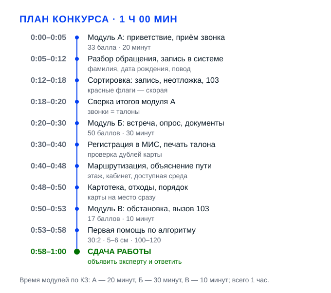
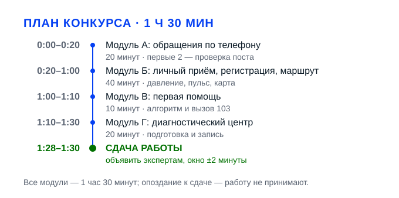
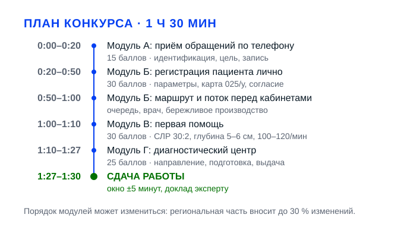

Медицинский администратор (Р)
Задания ниже — официальные файлы «Абилимпикс» (источник: abilympics-russia.ru), разложенные по категориям. Решения написаны по тексту задания, регламенту и критериям оценки; в них указано, что именно проверяет эксперт.
Школьник
14–16 лет, базовый уровень заданияВыдержка из официального конкурсного задания: страницы, относящиеся к категории «Школьник» (стр. 7–10 источника).
Пошаговое решение
Конкурсное задание категории «Школьники» идёт ровно один час и состоит из трёх модулей без паузы: модуль А — двадцать минут на приём и распределение обращений по телефону, модуль Б — тридцать минут на регистрацию и маршрутизацию пациента у окна приёма, модуль В — десять минут на первую помощь. Всего за задание дают 100 баллов, и распределены они по времени модулей: 33, 50 и 17. Работа идёт с живым пациентом, поэтому одновременно оценивают три вещи — что вы говорите, что вводите в медицинскую информационную систему и куда направляете человека. Ниже задание разложено на пять задач и пятьдесят два шага: подготовка окна до старта, три модуля по порядку и финальная сдача. Обратите внимание на две ловушки, заложенные в сценарий намеренно: пациент с признаками экстренного состояния, которого нельзя записывать «на послезавтра», и человек, которому нужен не бумажный талон, а помощь прямо сейчас.

Задача 1. Подготовить окно приёма до стартаДо старта · вне 60 минут конкурса
Пока не включён таймер, у вас есть несколько минут, чтобы превратить стол в рабочее место медицинского администратора: чистое окно приёма, работающая техника, разложенные бланки и открытая картотека. Эти минуты не входят в час конкурса, но именно они решают, будете вы в модуле А спокойно разговаривать с пациентом или станете искать картридж и логин в чужой учётной записи. Дальше вы сверяете часы и распределяете сорок минут по трём модулям, чтобы к контрольной точке понимать, где находитесь.
Действие 1.1. Проверить окно приёма и технику
Шаг 1.1.1
Обходим окно приёма с той стороны, где стоит пациент: подоконник должен быть пустым, стекло чистым, а объявления — только в штатных рамках, не на скотче. Проверяем кнопку вызова персонала на высоте примерно 90–120 см от пола, табличку с номером окна, режимом работы и вашей фамилией, рядом — тактильную табличку и свободный проход шириной не меньше 90 см для кресла-коляски. Своё место тоже осматриваем: подставка под документы, лоток для карт, стул так, чтобы не тянуться через стойку к пациенту.
Окно приёма — первое, что видит человек, и по нему он делает вывод о всей поликлинике. В модуле А критерий организационного обеспечения деятельности медицинской организации весит 33 балла, и часть этих баллов даётся за готовность рабочего места, а не за красивые слова в трубку. Кнопка вызова и тактильная табличка — не украшение: доступность для людей с инвалидностью проверяется экспертом отдельной строкой чек-листа.
Сядьте на место пациента и посмотрите на окно с расстояния двух метров: читается ли номер и режим работы, видна ли кнопка вызова, не упирается ли коляска в стойку. Проверьте, что на подоконнике нет вашей кружки, зарядки и личных вещей — они занимают единственную полку, куда пациент кладёт документы.
Самая частая ошибка — оставить на стекле записку «ушла на минуту» или список кабинетов от руки: выглядит небрежно и закрывает обзор. Вторая — не заметить, что кнопка вызова не работает, и узнать об этом в момент, когда её нажмёт человек в коляске; заменить её потом будет нечем, и балл за доступность уйдёт.
Эксперт обходит окно в первые минуты модуля и фиксирует чистоту, наличие табличек и доступность подхода; отдельно он смотрит, не перекрыт ли проход к стойке коробками и стульями.
Шаг 1.1.2
Включаем компьютер и входим в медицинскую информационную систему под своей учётной записью, а не под общей: находим тестовую карточку, открываем её, сохраняем и закрываем. Проверяем принтер — есть ли бумага, не мигает ли индикатор тонера, печатается ли талон с читаемым временем и номером кабинета; сканер полисов — читает ли он штрихкод, а не только текст. Телефон проверяем на слух: громкость, отсутствие хрипа, работает ли гарнитура, если ею пользуетесь.
Двадцать минут модуля А не оставят времени на борьбу с техникой: если система не пускает или принтер жуёт бумагу, вы теряете не баллы, а минуты, из которых состоит вся оценка. Использование современных информационных технологий для профессиональных задач — отдельный критерий и в модуле А, и в модуле Б, и проверяется он по факту работы в системе, а не по рассказу о ней.
Тестовый талон напечатан, время и кабинет на нём читаются без прищуривания, карточка открылась и сохранилась без ошибки. Убедитесь, что в шапке системы стоит ваша фамилия: чужая учётная запись — это не только балл, но и нарушение правил работы с персональными данными.
Работать в учётной записи, которая уже была открыта на компьютере: все действия потом невозможно разобрать по авторству, а эксперту это видно по журналу. Вторая ошибка — начать печатать талоны на бумаге, вставленной криво, и заклинить принтер на первом же пациенте.
Эксперт смотрит, вошли ли вы в систему сами и напечатали ли пробный документ; ему важно увидеть, что техника проверена до первого пациента, а не после.
Шаг 1.1.3
Раскладываем всё, что понадобится в ближайший час, в пределах вытянутой руки: бланки согласий, направления, журнал обращений, две ручки, папку для карт, запас масок и перчаток, антисептик, пакеты для отходов класса А и класса Б. Картотеку проверяем на месте: карты стоят по алфавиту или по номерам участков, разделители подписаны, лоток «на вынос» пуст. Если по заданию картотека электронная, проверяем, что поиск по фамилии и дате рождения выдаёт результат за пару секунд.
Порядок на столе — это принципы бережливого производства, которые в задании вынесены отдельным пунктом: всё нужное рядом, ничего лишнего, поиск любого предмета занимает секунды. Кроме того, ведение картотеки и базы данных — самостоятельный критерий модуля Б на 8 баллов, и начинается он с того, в каком состоянии вы приняли картотеку.
Проверьте себя простым движением: не вставая со стула, дотянитесь до бланка, ручки и антисептика. Если за чем-то приходится вставать или открывать ящик — переложите сейчас, потом будет некогда. На поиск любой вещи должно уходить не больше тридцати секунд.
Сложить бумаги стопкой «разберу по ходу»: к десятому пациенту бланки перемешиваются, и вы подаёте человеку согласие на другой вид помощи. Вторая ошибка — держать отходы в одном пакете: использованные перчатки в общем мусоре — нарушение санитарных правил, которое эксперт замечает сразу.
Эксперт оценивает организацию пространства визуально, одним взглядом на стол; отдельно он проверяет наличие раздельных пакетов для отходов и подписанных разделителей в картотеке.
Действие 1.2. Настроиться на работу и разобрать задание
Шаг 1.2.1
Надеваем чистую медицинскую форму или халат, застёгнутый на все пуговицы, и закрепляем бейдж с фамилией, именем, отчеством и должностью на уровне груди, а не на кармане у пояса. Волосы убираем, ногти коротко подстрижены без покрытия, обувь закрытая и без каблука, украшения сняты — кольца мешают печатать и снимать копии с документов. Парфюм не используем вовсе: в очереди стоят люди с аллергией и беременные.
Профессиональное общение с пациентом и соблюдение этических норм — сквозной критерий всех трёх модулей, и внешний вид оценивается раньше, чем вы произнесёте первую фразу. Аккуратный администратор читается как часть медицинской организации, а не как случайный человек за стойкой, и это косвенно влияет на оценку коммуникации.
Посмотрите на себя в зеркало или на экран выключенного монитора: бейдж читается с полутора метров, халат не топорщится, волосы не выбиваются. Руки свободны, на запястье нет часов с браслетом, который стучит по клавиатуре.
Бейдж, повёрнутый обратной стороной или приколотый слишком низко: пациент щурится, а эксперт отмечает небрежность. Вторая ошибка — прийти в удобной открытой обуви или в футболке, рассчитывая надеть халат «потом», уже в процессе.
Эксперт фиксирует внешний вид до старта модуля, а дальше следит, остаётся ли форма опрятной к концу часа: за час работы халат успевает помяться, и это тоже видно.
Шаг 1.2.2
Моем руки с мылом не меньше тридцати секунд, включая большие пальцы, промежутки между пальцами и запястья, вытираем одноразовым полотенцем и обрабатываем антисептиком. Надеваем маску так, чтобы она закрывала нос и рот, а не подбородок, и меняем её, если она отсырела. Проветриваем помещение не меньше десяти минут до старта и протираем стойку, клавиатуру и телефон дезинфицирующей салфеткой — трубку берут десятки рук, и это самое грязное место в окне приёма.
Администратор работает на границе потока пациентов и контактирует с каждым, кто входит в поликлинику, поэтому санитарные требования к нему такие же, как к сотрудникам смотрового кабинета. Нарушение этих правил видно эксперту без всяких измерений и снимает баллы сразу в нескольких критериях — и за организацию, и за безопасность.
Руки сухие, антисептик стоит на стойке в зоне видимости пациента, а не под столом, маска сухая и сидит по размеру, поверхность стола без пыли и следов кофе. Проверьте углы стола и место под клавиатурой — там чаще всего остаётся грязь.
Держать антисептик в ящике «чтобы не мешал»: тогда им не пользуются ни вы, ни пациент. Вторая ошибка — носить маску на подбородке между пациентами и натягивать её при входе очередного человека: так её только загрязняют.
Эксперт смотрит на гигиену рук в течение всего конкурса, а не только на входе, и отдельно отмечает, обрабатываете ли вы руки между пациентами. Ему важно увидеть, что антисептиком пользуются после каждого контакта с документами и деньгами, а не один раз в начале смены.
Шаг 1.2.3
Читаем задание целиком, а не по диагонали, и выписываем на лист пять ключевых пунктов из последовательности, заданной в конкурсном задании: изучить задание, оценить ситуацию, выделить главное, показать выполнение, объявить экспертам о завершении. Рядом рисуем тайминг: 0–20 минут модуль А с телефонными обращениями, 20–50 минут модуль Б с пациентом у окна, 50–60 минут модуль В с первой помощью. К каждой отметке дописываем, что должно быть готово.
Задание идёт ровно один час и состоит из трёх модулей на 33, 50 и 17 баллов, и самое дорогое по времени — модуль Б, где нужно и зарегистрировать пациента, и промаршрутизировать его, и показать работу с картотекой. Если вы не разложили время заранее, первый модуль съедает второй, а объявить о завершении нужно внятно и вовремя.
Лист с таймингом лежит перед глазами, на нём три контрольные точки с временем. Проверьте по часам, что вы стартуете в ноль, а не в третью минуту: сдвиг на старте не компенсируется, потому что окна модулей фиксированы.
Начать «сходу», не дочитав задание: потом выясняется, что часть действий относилась к другому модулю, и приходится возвращаться. Вторая ошибка — держать тайминг в голове и обнаружить, что на модуль В осталось две минуты вместо десяти.
Эксперт видит, сверяется ли участник с заданием и с часами; на брифинге он обычно предупреждает, что время модулей не продлевается, и это не формальность.
Задача 2. Модуль А: принять и распределить обращения по телефонуМодуль А · 33 балла · 20 минут
Модуль А — это работа в регистратуре амбулаторно-поликлинической службы, где вы принимаете обращения по телефону: выясняете, кто звонит и что случилось, отличаете экстренное состояние от неотложного и планового, записываете на приём или передаёте вызов врача на дом. Здесь оценивают три вещи одновременно: как вы говорите, насколько точно фиксируете информацию в системе и правильно ли выбираете маршрут для пациента. Двадцать минут — это примерно три-четыре обращения, и на каждое приходится около пяти минут разговора вместе с записью.
Действие 2.1. Принять звонок по стандарту
Шаг 2.1.1
Снимаем трубку не позже третьего звонка — это примерно пятнадцать секунд, дольше человек на другом конце начинает нервничать. Приветствие строится по одной схеме: название медицинской организации, слово «регистратура», ваши имя и отчество, «здравствуйте, чем могу помочь». Говорим чуть медленнее обычного, около ста слов в минуту, не жуём, не вздыхаем в трубку и не отвечаем одновременно двум людям.
Первые пятнадцать секунд разговора эксперт оценивает по критерию профессионального общения: понял ли пациент, куда он позвонил и с кем говорит. Формальное «алло» или молчание в трубке читаются как отсутствие культуры обслуживания, и это самая дешёвая потеря баллов в модуле А, потому что исправить первое впечатление уже нельзя.
Проверьте себя на слух: слышно ли название организации, разборчивы ли имя и отчество, не проглатываете ли вы окончания. Хороший признак — пациент в ответ называет вас по имени или сразу переходит к делу, а не переспрашивает «это поликлиника?».
Ответить «алло» или «слушаю» без названия организации: человек не понимает, туда ли попал, и тратит первую минуту на выяснение. Вторая ошибка — снять трубку после пятого-шестого звонка, когда пациент уже решил, что ему не ответят.
Эксперт слушает начало каждого разговора, а при оценке коммуникации отмечает темп речи, доброжелательность и полноту приветствия. Отдельно он фиксирует, названы ли организация и ваше имя: без них пациент не понимает, куда попал, и разговор начинается с переспроса.
Шаг 2.1.2
Выясняем запрос по порядку, не перескакивая: фамилия, имя, отчество и дата рождения звонящего, кем он приходится пациенту, если звонит не сам; что случилось и когда началось; есть ли температура и сколько дней держится; что уже принимали и обращались ли раньше. Вопросы задаём по одному и даём договорить до конца, даже если ответ кажется очевидным: за «просто справка» часто прячется боль в груди.
Без этих данных невозможно ни записать человека, ни понять срочность, ни подобрать врача. Ошибка в дате рождения даёт дубль карты, а дубль — это потерянная история прививок и анализов; критерий регистрации и работы с базой в модуле Б строится именно на точности ввода, и привычка уточнять закладывается здесь.
Повторите данные вслух и дождитесь подтверждения: «Иванова Мария Петровна, двенадцатое марта пятьдесят седьмого года, верно?». Если пациент поправляет — проговорите заново, а не «понял-понял». Отдельно проверьте, что вы можете назвать повод одной фразой: если получается только «что-то с давлением», опрос не закончен.
Сразу спросить «к какому врачу вас записать»: пациент не обязан знать маршрут, а вы за разговором не заметите признаки, при которых запись вообще не нужна. Вторая ошибка — перебивать на середине фразы, чтобы уложиться в норматив.
Эксперт слушает, какие вопросы заданы и в каком порядке; для него важно, что вы собираете информацию по существу, а не заполняете анкету. Он отмечает, прозвучали ли длительность жалобы и предшествующие обращения — именно по ним видно, понял ли администратор ситуацию.
Шаг 2.1.3
Запись ведём прямо по ходу разговора, а не после него: открываем в системе карточку обращения или журнал, фиксируем время звонка, фамилию и телефон, повод и принятое решение. Если система в этот момент недоступна, пишем на листе с теми же полями и переносим в базу сразу после разговора, пока не начался следующий. Перед сохранением проверяем, нет ли уже открытого обращения по этому же человеку: два обращения на одного звонящего означают, что вы записали его дважды и одно из них потеряется.
За час работы через окно проходят десятки людей, и память подводит на третьем обращении. Использование информационных технологий для профессиональных задач — отдельный критерий, и проверяется он по заполненным полям, а не по вашим словам о том, что вы всё запомнили.
В записи заполнены все обязательные поля, время совпадает с реальным, а не с моментом, когда вы вспомнили о журнале. Сверьте одну запись с тем, что помните о разговоре: если расходится хотя бы телефон — перепроверьте у пациента.
Записать «перезвонить позже» без номера телефона или с одной цифрой на слух: обращение теряется полностью. Вторая ошибка — заполнять журнал после трёх звонков и путать, кому что обещали. Третья, самая обидная: записать обращение дважды и потом не понять, какое из них настоящее.
Эксперт может подойти и посмотреть экран или журнал в середине модуля; наличие записи по каждому обращению он проверяет при подведении итога. Если в журнале три строки, а разговоров было четыре, это видно сразу и читается как потерянное обращение.
Шаг 2.1.4
Если человек раздражён, даём ему выговориться двадцать-тридцать секунд, не перебивая и не оправдываясь, затем называем его чувство вслух: «понимаю, вы ждали талон неделю и пришли к закрытому кабинету». После этого переводим разговор в факты — что именно нужно, на какую дату, к какому врачу, — и предлагаем два конкретных варианта вместо объяснений о том, как устроена запись.
Конфликт в регистратуре — самая частая причина жалоб, и в критериях прямо указано соблюдение правовых и этических норм. Спокойный ответ снижает накал за минуту, а спор «это не ко мне» превращает обычный вопрос в жалобу на ваше имя, что на конкурсе фиксируется как нарушение этики.
Признак того, что вы справились: пациент перешёл на обычный тон и назвал конкретную просьбу — дату, врача, кабинет. Если он продолжает кричать, значит, вы спорили с чувством вместо того, чтобы назвать его и перейти к делу.
Отвечать «я ничего не знаю, система висит» или повышать голос в ответ: разговор скатывается в перепалку, и баллы уходят и за коммуникацию, и за решение задач. Вторая ошибка — обещать «разберёмся» без срока и без фамилии того, кто разберётся.
Эксперт наблюдает за таким разговором особенно внимательно: именно здесь видно, умеет ли участник держать профессиональную позицию. Он отмечает, названа ли эмоция пациента вслух и прозвучало ли конкретное предложение вместо оправданий.
Шаг 2.1.5
Завершаем разговор коротким резюме: врач и специальность, дата и время, номер кабинета, какие документы взять и за сколько минут прийти. Затем прямой вопрос «всё ли понятно, записать вас на это время?» и прощание: «до свидания, здоровья». Трубку кладём после того, как это сделал пациент, — так он не услышит обрывок вашего разговора с коллегой. Если пациент в ответ начинает переспрашивать, значит, темп был слишком быстрым: повторите дату и кабинет, не меняя формулировку.
Правильно закрытый разговор — это меньше повторных звонков и меньше людей, которые приходят не в тот кабинет. В критериях коммуникации оценивается вся структура обращения, и финальная часть весит не меньше приветствия: именно по ней пациент понимает, что его услышали.
Проверка простая: попросите пациента повторить дату и время — если он называет их без запинки, информация дошла. Если начинает переспрашивать, повторите сами, не раздражаясь, и добавьте ориентир по кабинету. Заодно убедитесь, что прозвучал вопрос «всё ли понятно»: без него разговор считается незакрытым.
Бросить трубку первым сразу после «до свидания» или, того хуже, не попрощавшись: разговор обрывается на середине, и пациент перезванивает заново, съедая ваше время. Вторая ошибка — не назвать кабинет, ограничившись временем.
Эксперт слушает финал разговора и отмечает, прозвучали ли подтверждение записи и прощание. Разговор, оборванный на полуслове, снижает оценку коммуникации независимо от того, насколько хорошо была проведена его середина.
Действие 2.2. Распределить обращение: запись, неотложка или скорая
Шаг 2.2.1
Слушаем не только жалобу, но и признаки опасности: боль в груди дольше двадцати минут, одышка в покое, внезапная слабость в руке или ноге, асимметрия лица, невнятная речь, сильное кровотечение, потеря сознания, судороги, боль в животе с повторной рвотой. Если прозвучал хотя бы один такой признак, разговор меняет цель: мы не записываем на приём, а немедленно организуем вызов скорой помощи по номеру 103 и остаёмся на линии.
Разница между записью на завтра и вызовом скорой — это разница между плановой помощью и спасённой жизнью, и в задании этот выбор прямо назван «выбрать способы решения задач профессиональной деятельности». Ошибка сортировки стоит не баллов, а здоровья, поэтому на конкурсе её проверяют отдельным сценарием.
Проговорите вывод вслух, чтобы он был слышен и вам, и эксперту: «это экстренное состояние, вызываем скорую». Если после этого вы всё ещё сомневаетесь, решение принимается в пользу скорой — при сомнении всегда выбирают более срочный маршрут.
Записать человека с болью в груди на приём через три дня, потому что «талоны только на среду»: это учебная ситуация на конкурсе, а в жизни — основание для служебного разбора. Вторая ошибка — решать за врача и говорить «само пройдёт».
Эксперт проверяет, распознан ли красный флаг: в сценарии модуля А он заложен намеренно, и реакция на него — ключевая точка оценки. Отдельно фиксируется, названо ли состояние вслух и прозвучал ли номер 103, а не общее «вам срочно к врачу».
Шаг 2.2.2
Записываем на приём по участково-территориальному принципу: сначала смотрим, к какому участку и врачу прикреплён человек, и только потом ищем свободное время. Предлагаем два варианта на выбор — например, завтра в 9:40 или послезавтра в 16:20, — и уточняем, какой удобнее. Если свободных слотов у своего врача нет, предлагаем доврачебный кабинет, кабинет неотложной помощи или другого специалиста, но не отвечаем «мест нет».
Приём и распределение обращений — ядро модуля А, и оценивается не скорость, а правильность маршрута. Запись не к своему врачу без предупреждения приводит к тому, что человек приходит и его разворачивают, а «мест нет» без альтернативы — типичная причина жалобы на доступность помощи.
Проверьте талон перед тем, как продиктовать: дата, время, фамилия врача, кабинет, номер талона. Если в системе время помечено как занятое — не обещайте его, а найдите другой слот и перепроверьте. Убедитесь, что названный врач принимает именно этот участок: иначе человек придёт туда, где его карты нет.
Записать «на первое свободное» не глядя на участок: человек приходит к чужому врачу, у которого нет его карты. Вторая ошибка — назвать время, которого нет в системе, чтобы закончить разговор побыстрее.
Эксперт смотрит, как вы ищете слот и что предлагаете при отсутствии времени; для него важно увидеть альтернативу, а не отказ. Он также отмечает, проверено ли прикрепление к участку перед тем, как назвать фамилию врача.
Шаг 2.2.3
Объясняем маршрут так, чтобы человек мог его повторить: с какого входа заходить, на какой этаж подниматься, где гардероб и бахилы, где регистратура и как найти нужный кабинет, за сколько минут до приёма прийти — обычно за десять-пятнадцать, чтобы успеть оформить документы. Отдельно называем документы: паспорт, полис, СНИЛС, и то, что стоит взять с собой из дома — например, результаты прошлых анализов.
Маршрутизация пациентов в медицинской организации — отдельный пункт задания, и она оценивается по тому, насколько точно вы объяснили путь. Человек, который бродит по этажам, ищет кабинет 213 на первом этаже — это прямая потеря баллов и одновременно потерянное время врача.
Проверка одна: попросите пациента повторить этаж и номер кабинета. Если он называет их уверенно, маршрут объяснён. Если переспрашивает — повторите, добавив ориентир: «подниметесь на второй этаж, кабинет сразу справа от лифта».
Назвать только номер кабинета, не сказав про этаж и вход: пациент ищет его по всему зданию. Вторая ошибка — забыть про документы, и человек приходит без полиса, а приём приходится переносить. Третья — не предупредить, что прийти нужно заранее: человек опаздывает и теряет талон.
Эксперт слушает объяснение маршрута и оценивает, названы ли этаж, кабинет, документы и время прихода. Если в объяснении есть ориентир — лифт, поворот, вывеска, — он отмечает это отдельно: именно ориентиры помогают человеку дойти с первого раза.
Шаг 2.2.4
Вызов врача на дом принимаем по правилам: уточняем показания — высокая температура, невозможность самостоятельно передвигаться, состояние, при котором человек не может дойти до поликлиники, — и адрес полностью: улица, дом, корпус, квартира, подъезд, этаж, код домофона. Записываем телефон, окно времени, когда ждать врача, и просим подготовить документы, список принимаемых лекарств и освободить проход к постели.
Вызов на дом — отдельная услуга со своими правилами, и в задании она входит в распределение обращений. Ошибка в адресе или подъезде означает, что врач потратит время на поиски, а пациент останется без осмотра; кроме того, вызов на дом человеку, который может прийти сам, отнимает время у тех, кто действительно лежит.
Продиктуйте адрес обратно пациенту и дождитесь подтверждения — это единственный способ поймать ошибку на слух: «Свободы, 14, корпус 2, квартира 56, подъезд третий, код 560». Запишите, кто принял вызов и во сколько.
Принять вызов «на дом» от человека с температурой 37,2, который просто не хочет сидеть в очереди: это забирает ресурс у тех, кому он нужен. Вторая ошибка — не уточнить код домофона и потом объясняться, почему врач не попал в подъезд.
Эксперт проверяет полноту адреса и обоснованность вызова; в сценарии может быть ловушка с обращением «просто спросить совет». Он отмечает, прозвучали ли подъезд, этаж и код домофона, а также окно времени, когда ждать врача.
Шаг 2.2.5
При экстренном состоянии действуем параллельно: набираем 103, называем адрес поликлиники или квартиры, что случилось, сколько пострадавших, свой номер телефона и что уже сделано, и не отключаемся, пока диспетчер не скажет, что вызов принят. Одновременно просим коллегу встретить бригаду у входа, освобождаем проход, убираем лишних людей и остаёмся рядом с человеком до приезда.
Эффективные действия в чрезвычайной ситуации вынесены в задании отдельным пунктом, и в модуле А, и в модуле В. Скорая приезжает быстрее, когда знает точный адрес и что происходит, а встречающий у входа экономит бригаде несколько минут, которые в экстренной ситуации решают исход.
Убедитесь, что диспетчер повторил адрес, и вы знаете, кто из коллег встретит бригаду и на каком входе. Если вы один — встречаете сами, предварительно открыв дверь и оставив человека в безопасном положении.
Сначала выяснять номер полиса и год рождения, пока человек без сознания: время уходит на бумаги. Вторая ошибка — отправить пациента «дойти до скорой» или положить трубку до подтверждения вызова. Третья — не освободить проход, и бригада с носилками не может войти.
Эксперт фиксирует порядок действий: вызов, передача информации, организация встречи; именно последовательность здесь важнее скорости. Отдельно он смотрит, остались ли вы на линии до подтверждения вызова и назвали ли диспетчеру, что уже сделано.
Действие 2.3. Зафиксировать и передать информацию
Шаг 2.3.1
Заполняем талон или карточку обращения до конца: дата и время, фамилия и инициалы, дата рождения, номер полиса, телефон, повод обращения, кабинет и время приёма, кто из сотрудников принял обращение. Фамилию сверяем по документу или просим продиктовать по буквам, а не записываем на слух: «Смирная» и «Смирнова» — разные люди в базе и разные карты. Пустых полей остаться не должно: если данных нет, ставим прочерк и отмечаем, что именно не удалось уточнить.
Ведение картотеки и базы данных медицинской организации — отдельный критерий, и в модуле Б он стоит 8 баллов. Точность ввода здесь важнее скорости: исправлять ошибку в базе потом будет уже другой человек и в другое время, а пациент с «несуществующей» фамилией не найдётся в системе.
Сверьте каждую строку с тем, что видите в документе, и произнесите фамилию вслух перед сохранением. Проверьте, что талон напечатан и на нём читаются время и кабинет, а не «14:2» без последней цифры. Отдельно посмотрите, не осталось ли пустых полей: прочерк допустим, пустая клетка — нет.
Ввести данные «как услышал» и не переспросить редкую фамилию: карта создаётся заново, и вся история пациента теряется. Вторая ошибка — не заполнить телефон, и обращение невозможно ни подтвердить, ни перенести.
Эксперт сверяет заполненные поля с исходными данными сценария и отдельно смотрит, не создан ли дубль карты. Фамилия, записанная на слух, и пустой телефон — две ошибки, которые он находит первыми, потому что они ломают поиск в базе.
Шаг 2.3.2
Передаём информацию коллеге коротко и структурно: кто, что, когда, что решили. Например: «Иванов, двенадцатое марта пятьдесят седьмого, температура 38,5 третий день, записан к терапевту на 14:20, четвёртый кабинет, просил предупредить, что плохо ходит». Без оценок, домыслов и пересказа эмоций — только факты, которые нужны врачу или медсестре. Если разговор идёт по телефону, сначала называем себя и кабинет, а потом уже суть: коллега должен понимать, откуда звонят.
Взаимодействие и работа в коллективе прямо названы в задании, и в модуле Б это часть критерия маршрутизации на 12 баллов. Фраза «там женщина просила передать» не передаёт ничего: информация теряется, а пациент возвращается в регистратуру с тем же вопросом.
Признак того, что вас поняли: коллега повторил ключевое или задал уточняющий вопрос. Если в ответ звучит «а что именно ей нужно?» — вы передали эмоции вместо фактов. Проверьте также, что названы фамилия, время и кабинет: без них передача бесполезна.
Передавать информацию через третьи руки или запиской на стикере, который потом теряется. Вторая ошибка — громко обсуждать пациента при других людях в очереди: это нарушение и этики, и правил работы с персональными данными.
Эксперт слушает, как вы формулируете передачу; для него важно, звучат ли фамилия, повод и принятое решение. Если в пересказе есть оценки вроде «странная женщина», это отмечается как нарушение этики, а не как подробность.
Шаг 2.3.3
В конце модуля А проводим сверку: сколько обращений принято, сколько записано на приём, сколько передано врачу, сколько вызовов на дом оформлено и что осталось нерешённым. Считаем по журналу и по талонам, а не по памяти, и записываем итог на лист контроля одной строкой на каждый пункт. Если число не сходится, находим расхождение до того, как истечёт двадцатая минута: потом времени на разбор не будет, а вопрос эксперта застанет врасплох.
Двадцать минут модуля А заканчиваются вопросом эксперта о том, что сделано, и управление временем входит в организационные навыки. Сверка занимает минуту, но без неё вы не сможете внятно ответить и рискуете обнаружить, что одно обращение осталось без ответа.
Число записей в журнале должно совпадать с числом талонов, а число вызовов на дом — с числом переданных врачу. Если не совпадает, ищите расхождение сразу: это либо незаполненный талон, либо обращение, которое вы приняли и забыли.
Не сдавать итог вовсе, надеясь, что эксперт не спросит: он спросит, и потерянные две-три минуты уйдут из модуля Б, где они дороже. Вторая ошибка — назвать приблизительные цифры, которые не совпадают с документами.
Эксперт задаёт вопрос об итогах модуля и сверяет ответ с записями; аккуратный и точный ответ читается как понимание собственной работы. Если цифры не совпадают с журналом, он уточняет, какое обращение осталось без ответа, и это идёт в протокол.
Задача 3. Модуль Б: зарегистрировать и промаршрутизировать пациентаМодуль Б · 50 баллов · 30 минут
Модуль Б — самый длинный и самый дорогой: тридцать минут и 50 баллов. Здесь пациент подходит к окну приёма лично, и вы проходите весь путь целиком: приветствие и опрос, проверка документов, регистрация в медицинской информационной системе, объяснение маршрута и работа с картотекой. Отдельно оценивается, как вы говорите с человеком, который пришёл с сопровождающим, плохо слышит или приехал на кресле-коляске, и насколько аккуратно ведёте базу, потому что ошибка в одной букве фамилии превращается в потерянную карту.
Действие 3.1. Встретить пациента и провести опрос
Шаг 3.1.1
Когда пациент подходит к окну, откладываем бумаги, поворачиваемся к нему корпусом и устанавливаем зрительный контакт, а не говорим в монитор. Приветствие то же, что и по телефону, только короче: «Здравствуйте, регистратура, Анна Петровна, слушаю вас». Если человек пришёл с сопровождающим, вопросы задаём пациенту, а не тому, кто стоит рядом, — даже если пациент говорит медленно или тихо.
Профессиональное общение и соблюдение этических норм — 10 баллов в модуле Б, и первая же минута показывает, видит ли администратор в человеке человека. Разговор с сопровождающим через голову пациента — грубая этическая ошибка, которая запоминается эксперту сильнее, чем правильно оформленный талон.
Проверьте себя: голова повёрнута к пациенту, руки не закрывают лицо, экран не заслоняет собеседника. Если человек не слышит, говорите чуть громче и медленнее, но не кричите и не переходите на письменную форму без просьбы.
Продолжать печатать, не поднимая глаз, и бросать «подождите» на середине фразы: человек чувствует себя помехой, а эксперт фиксирует нарушение этики. Вторая ошибка — обращаться к сопровождающему «а что у неё болит?».
Эксперт стоит рядом в момент подхода пациента и смотрит именно на первые десять секунд: приветствие, контакт, обращение. Отдельно он отмечает, к кому были обращены вопросы — к пациенту или к сопровождающему, и не остался ли человек говорить с монитором.
Шаг 3.1.2
Проводим короткую беседу по схеме: что беспокоит и как давно, обращался ли раньше и к кому, какие лекарства принимает постоянно, есть ли направление или результаты анализов. Вопросы задаём простыми фразами, без медицинских терминов, и даём человеку время ответить: пожилому пациенту нужно несколько секунд, чтобы собраться с мыслью, и торопить его нельзя.
Опрос пациента и членов его семьи прямо назван в задании как часть регистрации, и именно из разговора вырастает правильный маршрут. Если администратор слышит «болит нога» и молча ищет хирурга, он может отправить человека не туда: при сахарном диабете это может быть совсем другой кабинет.
Проверьте, что из разговора вы можете сформулировать повод одной фразой, и повторите её пациенту: «то есть вы хотите попасть к терапевту по поводу давления, которое поднялось три дня назад, верно?». Совпадение формулировок означает, что вы поняли друг друга.
Задавать вопросы, заглядывая в монитор, и записывать ответы, не переспрашивая: часть жалоб теряется, и маршрут получается случайным. Вторая ошибка — перебивать пожилого человека на середине, чтобы уложиться в тридцать минут.
Эксперт слушает, как построен опрос, и отмечает, уточнялись ли длительность и предшествующие обращения. Ему важно увидеть, что вопросы задаются простыми словами и что человеку дают договорить, а не подгоняют его к следующему пункту.
Шаг 3.1.3
Просим документы и проверяем их по одному: паспорт, полис обязательного медицинского страхования, СНИЛС. На полисе смотрим номер из шестнадцати цифр и срок действия, на СНИЛС — одиннадцать цифр в формате трёх групп, в паспорте — серию, номер и прописку. Отдельно проверяем прикрепление к нашей медицинской организации: если человек прикреплён к другой, плановая помощь оказывается по месту прикрепления, а экстренная — в любом случае.
Проверка документов — основа законной регистрации: без полиса и прикрепления талон формально недействителен, а услуга оказывается за счёт другого источника. Правовая и финансовая грамотность вынесена в задании отдельным пунктом, и именно здесь она проверяется на практике.
Сверьте каждую цифру с документом, а не с тем, что пациент продиктовал по памяти, и проговорите вслух: «полис шестнадцать цифр, срок до декабря двадцать шестого года, прикрепление наше». Если срок истёк — не отказывайте, а объясните, где получить новый, и примите человека по паспорту и СНИЛС.
Принять человека без полиса и отправить домой: это нарушение права на помощь, за которое на конкурсе снимают баллы сразу в двух критериях. Вторая ошибка — переписать номер с экрана чужой карты, не сверив с документом.
Эксперт проверяет, какие документы вы запросили и сверили ли данные; отдельно смотрит, знаете ли вы, что делать при отсутствии полиса или при полисе другого региона. Отказ в помощи из-за документов он фиксирует как правовую ошибку.
Шаг 3.1.4
Отдельно отрабатываем сложные случаи, которые заложены в задании: пациент без полиса или с полисом другого региона, ребёнок с законным представителем, человек с инвалидностью и сопровождающий, пациент, который плохо слышит или не говорит по-русски. В каждом случае меняется не суть работы, а форма: ребёнка оформляем только с представителем и его документом, человеку с нарушением слуха предлагаем написать вопрос на листе, иностранному гражданину — показать документ с переводом или пригласить сотрудника, который говорит на его языке.
Учёт особенностей социального и культурного контекста прямо прописан в конкурсном задании, и на конкурсе такие сценарии дают намеренно. Умение подстроить форму разговора, не нарушив правила, отличает администратора, который работает, от того, который только заполняет поля.
Признак правильного решения: человек понял, что от него требуется, и получил дальнейший маршрут. Если после объяснения он всё равно стоит у окна и переспрашивает — вы говорили терминами, а не действиями.
Отказать человеку без полиса или потребовать у ребёнка документы, которых у него не может быть: конфликт, жалоба и потеря баллов. Вторая ошибка — говорить с сопровождающим громко и в третьем лице, как будто пациента здесь нет.
В сценарии модуля Б почти всегда есть один такой пациент; эксперт смотрит, замечен ли он и изменена ли тактика. Он отмечает, подстроена ли форма разговора — темп, громкость, письменные пояснения — при сохранении правил регистрации.
Действие 3.2. Зарегистрировать пациента в информационной системе
Шаг 3.2.1
Открываем в системе поиск и вводим фамилию, затем дату рождения — и только потом смотрим результат. Если карточка найдена, открываем её и проверяем адрес и телефон: данные могли устареть. Если не найдена, ищем по номеру полиса и по СНИЛС, потому что фамилия могла быть записана с ошибкой или изменена; новую карточку создаём только после того, как убедились, что дубля нет.
Дубли карт — главная болезнь любой регистратуры: у одного человека оказывается две истории, прививки в одной, анализы в другой, и врач принимает решение по половине данных. Критерий ведения картотеки и базы в модуле Б весит 8 баллов, и поиск перед созданием — его первая часть.
Признак того, что дубля нет: карточка находится хотя бы по одному из трёх ключей — фамилии с датой рождения, полису или СНИЛС. Если по всем трём пусто, создавайте новую, предварительно проверив раскладку клавиатуры и раскладку букв ё и е.
Создать новую карточку, потому что поиск по фамилии ничего не выдал с первого раза: в базе появляется второй Иванов, и оба получают половину истории. Вторая ошибка — искать только по имени и записать человека не в ту карту.
Эксперт смотрит на последовательность поиска: по каким полям вы искали, прежде чем нажать «создать». Если карточка создана после одной неудачной попытки поиска по фамилии, это отмечается как риск дубля, даже когда дубль не возник.
Шаг 3.2.2
Заполняем поля карточки по документу, а не по памяти: фамилия, имя, отчество полностью, дата рождения в формате число-месяц-год, пол, адрес регистрации с индексом, телефон, полис, СНИЛС, место работы или учёбы для школьника — школа и класс, группа инвалидности и льгота, если есть. После каждого блока проговариваем введённое вслух и ждём короткого «да» — так ошибка ловится в момент ввода, а не через неделю.
Регистрация пациента в медицинской организации — отдельный пункт задания и 15 баллов в модуле Б вместе с использованием информационных технологий. Ошибка в дате рождения или поле ломает и поиск, и статистику, а неверно указанная льгота лишает человека права на бесплатные лекарства.
Проверьте три самых опасных поля: дата рождения, номер полиса и адрес. Сравните их посимвольно с документом, лежащим перед вами, а не с тем, что вы помните. Фамилию с редким написанием проговорите по буквам.
Заполнить поля «примерно» и оставить пустой адрес: карточка формально создана, но вызвать врача на дом по ней невозможно. Вторая ошибка — записать телефон с одной цифрой на слух и потом не дозвониться до пациента.
Эксперт подходит и сверяет заполненные поля с данными сценария; расхождение в дате рождения он замечает первым. Отдельно он смотрит, проговорены ли данные вслух: это единственный признак того, что администратор проверяет себя, а не надеется на память.
Шаг 3.2.3
Оформляем согласие на обработку персональных данных и на медицинское вмешательство: объясняем человеку простыми словами, зачем это нужно, где будет храниться информация и кому она передаётся, даём прочитать и подписать. Если пациент отказывается подписывать, фиксируем отказ в карточке и объясняем последствия, но помощь не отменяем. Бланк подписывается в двух местах — за обработку данных и за вмешательство, — и дату ставим сами, если человек её пропустил.
Работа с персональными данными — это правовая часть задания, и она оценивается по тому, объяснили ли вы смысл документа, а не просто подсунули бланк. Отдельно проверяется, что вы не обсуждаете пациента при посторонних и не оставляете экран с открытой картой без присмотра.
Подписанное согласие подшито, отметка в карточке сделана, экран не развёрнут к очереди. Проверьте, что бланк подписан в нужных местах, а не только сверху: незаполненная дата делает документ недействительным.
Положить бланк перед пациентом со словами «подпишите здесь» и не объяснить, что он подписывает: формально согласие есть, а по сути — нарушение прав, которое эксперт отмечает. Вторая ошибка — оставить карту открытой, отойдя к принтеру.
Эксперт смотрит, объяснено ли содержание согласия и закрыт ли экран, когда вы отходите. Ему важно услышать, что человеку названо, зачем нужны его данные и кому они передаются, а не просто «подпишите здесь».
Шаг 3.2.4
Сохраняем карточку, проверяем, что появился номер записи, и печатаем талон: на нём должны быть фамилия, дата и время приёма, номер кабинета, фамилия врача и номер талона. Талон отдаём в руки, а не кладём на стойку, и одновременно проговариваем то же самое вслух — так человек слышит и видит информацию одновременно и реже путает кабинет. Если принтер выдал смазанный талон, печатаем заново сразу, а не отдаём «и так сойдёт».
Сохранение и печать — финальная точка регистрации, и без неё вся предыдущая работа остаётся на экране. Критерий использования информационных технологий проверяется по факту: есть ли запись в системе и напечатан ли документ, а не по тому, как уверенно вы двигали мышью.
Проверьте талон на просвет: время читается полностью, кабинет не обрезан, фамилия написана без ошибок. Сверьте номер талона с тем, что показывает система, и убедитесь, что запись не попала на уже занятое время.
Отдать талон, на котором время напечатано как «14:2» или кабинет отсутствует: пациент придёт не туда и не тогда. Вторая ошибка — закрыть карточку без сохранения и обнаружить, что записи нет, когда человек уже ушёл.
Эксперт проверяет напечатанный талон и наличие записи в системе; это одна из немногих точек, где результат виден материально. Он читает талон целиком — время, кабинет, фамилию врача — и сверяет с тем, что показывает экран.
Действие 3.3. Промаршрутизировать пациента
Шаг 3.3.1
Определяем поток по состоянию человека, а не по его просьбе. Плановый приём — когда состояние позволяет ждать и есть направление или запись; неотложная помощь — когда человеку плохо сейчас, но угрозы жизни нет: температура, боль, травма без кровотечения, — тогда ведём в кабинет неотложной помощи или к дежурному врачу; доврачебный кабинет — когда нужна только справка, измерение давления или перевязка. Экстренное состояние — это всегда скорая, а не очередь.
Выбор способа решения задач профессиональной деятельности — это и есть сортировка потоков, и она в модуле Б входит в критерий маршрутизации на 12 баллов. Ошибка в сторону «пусть посидит в очереди» стоит человеку времени и здоровья, а ошибка в сторону скорой при насморке — ресурсов бригады.
Проверка простая: проговорите вслух, в какой поток вы отнесли пациента и почему. Если обоснование звучит как «ну он просил талон», вы не сортировали, а просто выполнили просьбу, и при ухудшении состояния это будет ошибкой.
Отправить человека с температурой 39 в общую очередь на плановый приём: он просидит час и уйдёт домой, не дождавшись. Вторая ошибка — вызвать скорую человеку, которому нужна справка для школы. Третья — решать за врача и говорить «да ничего страшного», не имея на это права.
В сценарии модуля Б обычно есть пациент, которого нужно провести вне общей очереди; эксперт смотрит, заметили ли вы это. Он также отмечает, обосновано ли решение: названы ли признаки, по которым человек отнесён к неотложному потоку.
Шаг 3.3.2
Направление к узкому специалисту оформляем по правилам: сначала приём участкового терапевта, который при необходимости выписывает направление, затем запись к специалисту в установленный срок. Если у пациента уже есть направление из другого учреждения, проверяем его действительность и вносим номер в карточку. Сроки ожидания плановой помощи и порядок направления проговариваем пациенту честно, не обещая дат, которых нет в системе.
Правовая и финансовая грамотность проверяется именно здесь: администратор должен понимать, какая помощь оказывается бесплатно по полису, а какая — за плату, и не отправлять человека «к платному врачу» там, где есть бесплатный маршрут. Необоснованный отказ в направлении — типичная причина жалоб в территориальный фонд.
Проверьте, что в карточке есть номер направления и дата, а пациент получил объяснение, к какому врачу и в какой срок. Если человек должен сначала попасть к терапевту — так и скажите, а не записывайте сразу к кардиологу.
Записать человека к специалисту без направления и не предупредить, что приём может не состояться: человек приедет и уедет ни с чем. Вторая ошибка — называть точную дату приёма, которой нет в системе. Третья — отправлять за платной консультацией туда, где помощь положена бесплатно по полису.
Эксперт проверяет, знаете ли вы порядок направления и называете ли сроки, не выдумывая их. Отдельно он слушает, объяснено ли пациенту, какая помощь оказывается бесплатно по полису, а какая только за плату.
Шаг 3.3.3
Объясняем маршрут пошагово, привязывая каждый шаг к месту: «подниметесь на второй этаж, повернёте направо, кабинет 207, там сидит медсестра, она измеряет давление и выдаёт направление». Для человека с инвалидностью добавляем конкретику доступной среды: где пандус, где лифт, где кнопка вызова, есть ли широкий проход и куда можно поставить кресло. Если пациент торопится, проговариваем маршрут сначала коротко, потом подробно — и спрашиваем, что запомнил.
Маршрутизация оценивается по тому, дошёл ли пациент до кабинета, а не по тому, сколько вы говорили. Информация о доступной среде — обязательная часть работы в медицинской организации: без неё человек на коляске стоит у лестницы и не знает, что лифт находится в другом крыле.
Попросите пациента повторить этаж, номер кабинета и имя того, к кому он идёт. Если он путается в порядке шагов, объясните заново, начиная с входа, а не с кабинета. Человеку с нарушением слуха покажите номер кабинета на листе — так проверка становится надёжнее любых слов.
Назвать только кабинет и махнуть рукой в сторону коридора: человек уходит и возвращается с тем же вопросом, а очередь растёт. Вторая ошибка — не сказать про лифт и пандус, хотя пациент приехал на коляске.
Эксперт слушает объяснение и смотрит, названы ли этаж, кабинет, сотрудник и элементы доступной среды. Если пациент пришёл на коляске, он особенно внимательно проверяет, сказано ли про лифт, пандус и широкий проход.
Шаг 3.3.4
Связываемся с нужным кабинетом по телефону или через систему, если пациенту нужно попасть туда сегодня: коротко называем ситуацию и спрашиваем, могут ли принять. В работе с коллегами действует то же правило, что и с пациентом: факты вместо эмоций. Если человеку нужна помощь медсестры прямо сейчас, просим её выйти к окну, а не отправляем пациента искать её по этажу.
Взаимодействие и работа в коллективе прямо названы в задании, и это часть маршрутизации: администратор — диспетчер поликлиники, от которого зависит, не будет ли человек ходить по кругу. Несогласованный маршрут — самая частая причина того, что пациент возвращается в регистратуру с жалобой.
Признак того, что договорённость состоялась: коллега подтвердил время или назвал альтернативу, и вы можете передать это пациенту одной фразой. Если в ответ прозвучало «пусть подходит, посмотрим» — договорённости нет.
Отправить пациента «уточнить на месте»: он приходит к занятому врачу и возвращается. Вторая ошибка — обсуждать пациента с коллегой громко, при очереди, называя диагноз. Третья — договориться «на словах» и не проверить, что коллега вас услышал и понял, о ком речь.
Эксперт смотрит, как вы формулируете обращение к коллеге, и отмечает, прозвучал ли диагноз при посторонних. Ему также важно, прозвучала ли договорённость о времени, а не общее «пусть подойдёт, посмотрим».
Действие 3.4. Вести картотеку и соблюдать порядок
Шаг 3.4.1
Карты после приёма ставим на место сразу, а не в лоток «потом»: в бумажной картотеке — по алфавиту или по номеру участка, как принято в организации, разделители с фамилиями на буквы и подписанные ячейки. В электронной картотеке — проверяем, что запись сохранена и не осталась в статусе черновика. Карту, которую взяли в кабинет, отмечаем как выданную, чтобы её не искали по всей поликлинике.
Ведение картотеки и базы данных медицинской организации — отдельный критерий на 8 баллов, и проверяется он по состоянию картотеки в конце модуля. Потерянная карта означает повторный сбор анамнеза и дубль исследований, а в масштабе поликлиники — часы работы врачей.
Проверьте: карты стоят ровно, разделители на месте, ни одна не лежит поперёк других. Найдите на глаз любую карту из тех, что держали в руках, — если поиск занимает больше тридцати секунд, порядок нарушен.
Сложить карты стопкой на краю стола, потому что «человек торопился»: к концу модуля стопка превращается в перемешанный ворох, и эксперт видит это без всяких вопросов. Вторая ошибка — поставить карту не на свою букву, например «Ё» в раздел «Е».
Эксперт подходит к картотеке в конце модуля и проверяет расстановку; порядок виден с первого взгляда. Он может попросить найти конкретную карту — и по времени поиска сразу понятно, работает ли система или карты просто сложены в ящик.
Шаг 3.4.2
Ведём базу аккуратно и по правилам защиты информации: пароль не записан на стикере у монитора, экран блокируется при отходе, карточка закрывается после работы, посторонним сведения о пациенте не выдаются — ни по телефону, ни лично. Если звонит родственник и спрашивает результаты, объясняем, что такие сведения выдаются только самому пациенту или по доверенности.
Персональные данные пациента — это медицинская тайна, и её защита входит в правовую грамотность, которую оценивают в модуле Б. На конкурсе проверяют конкретные вещи: закрыт ли экран, лежит ли карта лицевой стороной вниз, не называются ли фамилии вслух при очереди.
Проверьте три точки: экран заблокирован, когда вы отошли; карточка на столе закрыта; в разговоре с третьим лицом не звучат ни фамилия, ни диагноз. Если хотя бы одна точка не выполнена — исправьте сразу.
Оставить карту открытой и уйти к принтеру: следующий человек в очереди читает чужие данные через плечо. Вторая ошибка — выдать по телефону результаты анализов жене пациента без доверенности. Третья — записать пароль на стикере у монитора: формально это не ошибка в работе, а готовая утечка.
Эксперт может намеренно отвлечь вас и посмотреть, заблокирован ли экран; это отдельная проверка в чек-листе. Он также слушает, не называются ли фамилия и диагноз вслух при очереди, и фиксирует это как нарушение медицинской тайны.
Шаг 3.4.3
Работаем по принципам бережливого производства: печатаем только то, что нужно, двусторонней печатью там, где это допустимо, используем электронную запись вместо бумажных списков, а испорченный лист кладём в макулатуру, а не в общий мусор. Если бланк можно заполнить в системе, не печатаем его на бумаге; если талон можно отправить на телефон, предлагаем это пациенту.
Содействие сохранению окружающей среды, ресурсосбережение и принципы бережливого производства вынесены в задании отдельным пунктом и оцениваются в модуле Б до 5 баллов. Проверяется не лозунг, а поведение: сколько бумаги ушло, разделены ли отходы, не лежат ли на столе десять ненужных распечаток.
Проверьте: на столе нет листов, напечатанных «на всякий случай», макулатура отдельно от бытового мусора, принтер не выдаёт по три копии одного документа. Это видно по лотку и по корзине. Посчитайте, сколько листов ушло за модуль: если больше двух на пациента, вы печатаете лишнее.
Печатать по два экземпляра каждого документа «чтобы точно хватило»: к концу модуля на столе вырастает стопка макулатуры, и баллы за ресурсосбережение уходят. Вторая ошибка — выбросить испорченный бланк с данными пациента в обычный мусор.
Эксперт оценивает расход бумаги и разделение отходов визуально, а также смотрит, пользуетесь ли вы электронной записью там, где она есть. Стопка распечаток «на всякий случай» на столе читается как отсутствие бережливого подхода.
Шаг 3.4.4
Знаем свои действия в чрезвычайной ситуации: при пожарной тревоге — прекращаем приём, берём журнал выдачи карт и аптечку первой помощи, выводим людей по эвакуационным знакам к ближайшему выходу, не пользуемся лифтом и не возвращаемся за документами. Пациента на кресле-коляске сопровождаем сами или организуем помощь, а не оставляем ждать. После выхода — сообщаем руководителю о числе выведенных людей и о тех, кто остался внутри.
Эффективные действия в чрезвычайной ситуации прямо названы в задании, и это тот пункт, который на конкурсе проверяют вопросом или короткой вводной. Порядок действий администратора отличается от порядка врача: его задача — вывести людей и сохранить информацию, а не оказывать помощь в горящем здании.
Проверка знаний: вы можете назвать два ближайших выхода, место сбора и то, что берёте с собой. Если ответ начинается с «нужно вызвать пожарных» — вы описали общее правило, но не свои действия. Добавьте, кто помогает человеку на кресле-коляске и где лежит журнал выдачи карт.
Продолжать приём, пока не закончится очередь: это самая опасная ошибка, потому что люди остаются в здании. Вторая ошибка — пользоваться лифтом при эвакуации или возвращаться за карточками. Третья — не сказать о человеке, который не может передвигаться сам, и оставить его ждать помощи в кабинете.
Эксперт задаёт вводную по ЧС в конце модуля Б и слушает, названы ли конкретные действия и маршрут выхода. Он отмечает, упомянуты ли люди, которым нужна помощь при эвакуации, и то, что вы берёте с собой журнал выдачи карт.
Задача 4. Модуль В: оказать первую помощьМодуль В · 17 баллов · 10 минут
Последние десять минут конкурса — модуль В, где к работе администратора добавляется первая помощь. Ситуация разыгрывается на манекене или статисте: человеку стало плохо у окна приёма, и дальше всё зависит от того, что вы сделаете в первые минуты. Здесь оценивают знание алгоритма установленного образца, умение оценить безопасность и распознать состояние, угрожающее жизни, а также последовательность действий до приезда бригады. Ошибки в этом модуле самые дорогие по смыслу: в жизни именно они отделяют благополучный исход от тяжёлого.
Действие 4.1. Оценить обстановку и состояние
Шаг 4.1.1
Первым делом останавливаемся и осматриваем место: нет ли рядом оголённых проводов, лужи, разбитого стекла, машины, движущегося транспорта, агрессивных людей. Надеваем перчатки из аптечки, а если есть — и маску, потому что помощь без перчаток превращает вас во второго пострадавшего. Только убедившись, что подходить безопасно, опускаемся рядом с человеком на колени и громко представляемся: «я медицинский администратор, я вам помогу».
Оценка безопасности условий прямо названа в квалификационных требованиях, и это первое, что смотрит эксперт: побежал ли участник к «пострадавшему» через разлитую воду или сначала осмотрелся. Оценивается и защита рук: контакт с кровью без перчаток — грубое нарушение, которое снимает баллы даже при идеальной технике.
Проверьте себя до того, как наклониться: перчатки на руках, вокруг нет опасности, вы видите, куда ставите колени. Если перчаток нет — используйте чистый полиэтиленовый пакет или любую прокладку, но не работайте голыми руками.
Броситься к человеку, не осмотревшись, и поскользнуться на мокром полу: получается два пострадавших вместо одного, и модуль оценивается как проваленный. Вторая ошибка — забыть перчатки и трогать кровь голыми руками.
Эксперт фиксирует первые секунды: осмотрелся ли участник, надел ли перчатки, представился ли пострадавшему. Пропущенный осмотр места он считает грубой ошибкой даже при правильной дальнейшей технике, потому что риск для спасающего остаётся.
Шаг 4.1.2
Определяем сознание: громко спрашиваем «вы меня слышите?» и мягко встряхиваем за плечи, не за голову и не за шею. Если не отвечает — запрокидываем голову, поднимаем подбородок, выдвигаем нижнюю челюсть и в течение десяти секунд смотрим, слушаем и ощущаем дыхание: щекой к его рту, глазами на грудную клетку. Параллельно смотрим, есть ли дыхание вообще и нормальное ли оно — редкое, хрипящее, судорожное дыхание считается отсутствующим.
Проверка сознания и дыхания — точка, от которой зависит весь дальнейший алгоритм: есть дыхание — восстановительное положение и наблюдение, нет — сердечно-лёгочная реанимация. Десять секунд, а не две: за две секунды дыхание не оценить, а ошибка в оценке означает либо ненужные компрессии, либо их отсутствие там, где они были нужны.
Признак правильной оценки: вы можете сказать вслух, что именно увидели — «сознания нет, дыхания нет, грудная клетка не поднимается». Если вы не можете сформулировать, значит, не проверяли, а предполагали.
Трясти человека за голову или проверять дыхание три секунды и делать вывод: при подозрении на травму шеи это опасно, а поспешный вывод ведёт к неверному алгоритму. Вторая ошибка — считать агональное дыхание нормальным.
Эксперт засекает время проверки дыхания и слушает, произнесены ли вслух признаки состояния. Ему важно увидеть запрокидывание головы и выдвижение челюсти, а не просто наклон к лицу пострадавшего.
Шаг 4.1.3
Если дыхания нет, сразу поручаем вызов конкретному человеку, а не «кто-нибудь вызовите скорую»: «вы, в синей куртке, звоните 103, скажите, что человек без сознания и не дышит, адрес такой-то, и вернитесь ко мне». Второго просим принести автоматический наружный дефибриллятор, если он есть в здании, и аптечку. Сами в это время начинаем компрессии — вызов не должен останавливать помощь ни на секунду.
Вызов скорой входит в алгоритм, и оценка строится на том, поручен ли он конкретному человеку. Обезличенное «вызовите скорую» в реальной ситуации чаще всего не выполняется никем: каждый думает, что позвонит кто-то другой, а на конкурсе это видно сразу, потому что никто не начинает звонить. Поручение с указанием человека и его одежды снимает эту неопределённость за одну секунду.
Проверьте: у вызова есть исполнитель, назван номер 103, прозвучал адрес и то, что человек не дышит. Если вы говорите «вызовите кто-нибудь», считайте, что вызов не сделан. Хороший признак — человек в ответ кивнул и уже достаёт телефон, а не переспрашивает «что сказать?».
Кричать «вызовите скорую» в пустоту и продолжать работать: время идёт, бригаду никто не вызвал. Вторая ошибка — уйти звонить самому, оставив человека без компрессий. Третья — позвонить и назвать только «человеку плохо», без адреса и без признака отсутствия дыхания.
Эксперт слушает формулировку поручения: назван ли номер 103, адрес и конкретный человек. Если вы просите принести дефибриллятор, он отмечает это отдельно: доступность прибора в здании входит в подготовку медицинской организации.
Шаг 4.1.4
Определяем, что именно произошло, по внешним признакам: при обмороке человек бледен, кожа влажная, дышит, но не отвечает; при клинической смерти нет сознания и нормального дыхания; при кровотечении кровь идёт струёй или пропитывает одежду; при попадании инородного тела человек хватается за горло, не может говорить и кашлять; при судорогах тело напряжено, конечности дёргаются. От этого зависит следующий шаг, и путать эти состояния нельзя.
Распознавание состояний, представляющих угрозу жизни, включая клиническую смерть, прямо названо в требованиях к компетенции. Ошибка распознавания — самая дорогая в модуле: если начать реанимацию человеку в обмороке, вы ему навредите, а если искать бинт при отсутствии дыхания — потеряете минуты.
Проговорите вывод одной фразой и действуйте по нему: «сознания нет, дыхания нет — начинаю реанимацию». Если через минуту картина изменилась — пересмотрите решение, но не меняйте его каждые десять секунд.
Начать компрессии человеку, который дышит, или, наоборот, поднять ноги тому, у кого нет дыхания: в обоих случаях помощь неверна. Вторая ошибка — искать пульс на шее десять минут вместо проверки дыхания.
Эксперт отмечает, назван ли диагноз состояния вслух и совпал ли он со сценарием. Если участник начал реанимацию человеку, который дышит, это фиксируется как ошибка распознавания, а не как избыточное усердие.
Действие 4.2. Действовать по алгоритму
Шаг 4.2.1
При отсутствии сознания и дыхания укладываем человека на спину на твёрдую ровную поверхность, встаём сбоку на колени, основание одной ладони кладём на центр грудной клетки, вторую сверху и сцепляем пальцы в замок. Руки держим прямыми, плечи над грудной клеткой, давим весом тела на глубину пять-шесть сантиметров с частотой сто-сто двадцать в минуту, полностью отпуская грудную клетку на подъёме. После каждых тридцати компрессий делаем два вдоха и продолжаем цикл.
Базовая сердечно-лёгочная реанимация — ядро модуля В: без компрессий кровь не движется, и необратимые изменения в коре головного мозга развиваются за первые четыре-шесть минут. Техника описана в алгоритме установленного образца, и оценивается каждая составляющая: точка, глубина, частота, полное расправление и соотношение тридцать к двум.
Считать вслух до тридцати и следить за глубиной: грудная клетка должна заметно прогибаться, а на подъёме возвращаться полностью. Частоту удобно проверять по часам или метроному — сто-сто двадцать компрессий в минуту это чуть меньше двух в секунду.
Давить слишком мелко, «чтобы не сломать рёбра»: при глубине меньше пяти сантиметров кровообращение не поддерживается. Вторая ошибка — не отпускать грудную клетку между компрессиями и работать согнутыми руками, быстро уставая.
Эксперт смотрит на точку постановки рук, положение корпуса и считает темп по секундомеру; ошибки в технике он фиксирует по ходу. Отдельно проверяется полное расправление грудной клетки: без него компрессии не дают кровотока.
Шаг 4.2.2
Если человек дышит, но без сознания, переводим его в устойчивое боковое положение: ближнюю к себе руку отводим под углом вверх, дальнюю руку кладём на противоположное плечо, дальнюю ногу сгибаем в колене и, придерживая голову, переворачиваем на бок одним движением. Голову слегка запрокидываем назад, чтобы дыхательные пути оставались открытыми, рот проверяем на наличие рвотных масс, и накрываем человека тем, что есть, чтобы не терял тепло.
Восстановительное положение — обязательный элемент помощи при отсутствии сознания, но сохранённом дыхании: на спине язык и рвотные массы перекрывают дыхательные пути. В задании это входит в перечень мероприятий первой помощи, и эксперты проверяют, умеет ли участник перевернуть человека, не навредив ему, и остаётся ли дыхание свободным.
Проверьте после переворота: лицо не упирается в пол, рот ниже уровня гортани, грудная клетка дышит свободно и без хрипа. Если дыхание затруднено — поправьте положение головы, а не оставляйте как получилось.
Оставить человека на спине, потому что «он дышит»: через минуту дыхание может остановиться из-за запавшего языка. Вторая ошибка — переворачивать рывком за руку, не придерживая голову. Третья — не проверить рот после переворота и не заметить рвотные массы, которые перекрывают дыхание.
Эксперт смотрит именно на положение головы и на то, контролируется ли дыхание после переворота. Он также отмечает, придерживали ли вы голову при повороте и проверен ли рот на наличие рвотных масс.
Шаг 4.2.3
При наружном кровотечении накладываем давящую повязку прямо на рану: стерильная салфетка, сверху плотный валик, туго забинтовываем и приподнимаем конечность. При попадании инородного тела в дыхательные пути человеку, который не может кашлять и говорить, делаем до пяти резких толчков в живот между пупком и грудиной, а если он потерял сознание — начинаем реанимацию. При обмороке укладываем с приподнятыми ногами, расстёгиваем воротник, обеспечиваем приток воздуха и не даём встать сразу.
Перечень состояний, при которых оказывается первая помощь, и перечень мероприятий установлены нормативным актом, и в задании это названо знанием алгоритмов установленного образца. Разные состояния требуют разных действий, и универсального «помахать руками» здесь нет: при кровотечении нужна повязка, при асфиксии — толчки, при обмороке — горизонтальное положение.
Проверьте результат: повязка не промокает, человек дышит и кашляет, кожные покровы порозовели, он в сознании и отвечает на вопросы. Если повязка пропиталась — накладывайте сверху вторую, не снимая первую.
Давать пить человеку без сознания или при боли в животе: это опасно и на конкурсе считается ошибкой. Вторая ошибка — при обмороке сразу усаживать человека, из-за чего он теряет сознание повторно. Третья — накладывать повязку, не приподняв конечность, и удивляться, что она промокает.
Эксперт смотрит, соответствует ли выбранное действие состоянию, и отдельно — не совершено ли запрещённых действий. Он фиксирует и то, что вы не дали пострадавшему пить и не оставили его сидеть при повторном обмороке.
Шаг 4.2.4
До приезда бригады не оставляем человека одного: каждые одну-две минуты проверяем дыхание и сознание, при остановке дыхания возобновляем компрессии, разговариваем с человеком, если он в сознании, и фиксируем время начала помощи. При приезде скорой коротко докладываем: что случилось, когда, что уже сделано, сколько циклов компрессий проведено и менялось ли состояние.
Наблюдение и контроль состояния до прибытия врача прямо названы в требованиях к компетенции, и это не формальность: состояние может измениться в любую минуту, а бригаде нужна хронология, а не пересказ эмоций. Фиксация времени начала помощи влияет на дальнейшую тактику врача.
Проверьте, что вы можете назвать три вещи: время начала помощи, что именно делали и как менялось состояние. Если ответа нет, значит, наблюдение не велось и вы работали «по памяти». Дыхание проверяйте каждые одну-две минуты, а не один раз: восстановившееся дыхание может снова остановиться.
Отойти в сторону, решив, что дальше не ваша зона ответственности: человек остаётся без контроля, и дыхание может остановиться незамеченным. Вторая ошибка — рассказывать бригаде длинную историю без фактов.
Эксперт слушает доклад бригаде и оценивает его структуру: время, событие, действия, динамика. Отдельно он отмечает, названо ли время начала помощи и сколько циклов компрессий проведено до восстановления дыхания.
Действие 4.3. Завершить эпизод и оформить его
Шаг 4.3.1
Передаём информацию по короткой схеме: кто пострадавший и сколько ему лет, что произошло и в какое время, что вы сделали и с каким результатом, что изменилось к моменту приезда. Например: «Мужчина около шестидесяти, потерял сознание в 11:42, дыхания не было, начал компрессии, три цикла по тридцать, самостоятельное дыхание восстановилось в 11:45, в сознание не пришёл». Такая передача занимает двадцать секунд и содержит всё, что нужно врачу.
Устная коммуникация и умение интерпретировать информацию оцениваются во всех модулях, включая модуль В. Бригада, которая получает структурированный доклад, не тратит время на расспросы и сразу начинает работать, а это в экстренной ситуации важнее любых подробностей.
Признак хорошей передачи: врач задал один-два уточняющих вопроса, а не начал расспрашивать с начала. Если он спрашивает «а что случилось-то?» — вы рассказали детали, но не суть. Проверьте, прозвучали ли время начала помощи и результат, а не только сам факт вызова.
Рассказывать с самого начала, как вы сидели за стойкой и что услышали: бригада теряет время, а вы — баллы за коммуникацию. Вторая ошибка — скрыть, что компрессии не проводились, из страха потерять балл.
Эксперт слушает доклад и отмечает, прозвучали ли время, действия и динамика состояния. Если вы называете возраст и пол, а затем переходите к фактам, доклад читается как профессиональный, даже когда он короткий.
Шаг 4.3.2
После эпизода приводим себя и место в порядок по санитарным правилам: снимаем перчатки, не касаясь их внешней поверхности, выбрасываем в пакет для медицинских отходов класса Б, обрабатываем руки антисептиком, протираем поверхность, на которой лежал человек, дезинфицирующим раствором. Использованные салфетки, бинты и ампулы из аптечки утилизируем отдельно от бытового мусора.
Медицинские отходы нельзя выбрасывать в общий контейнер, и в задании это отнесено к санитарным требованиям и бережливому производству. На конкурсе проверяют, разделены ли потоки: использованные перчатки в общем мусоре — заметная ошибка, которая снимает баллы сразу в двух критериях.
Проверьте: перчатки в жёлтом пакете, руки обработаны, поверхность протёрта, аптечка закрыта и убрана на место. Если что-то из расходников закончилось — сообщите, а не оставляйте пустую упаковку в аптечке.
Бросить использованные перчатки в урну у стойки: грубое нарушение санитарных правил. Вторая ошибка — убрать аптечку, не проверив, что в ней осталось. Третья — протереть поверхность сухой салфеткой без дезинфицирующего раствора и считать, что уборка закончена.
Эксперт смотрит на утилизацию сразу после эпизода, пока вы ещё не перешли к следующему действию. Он проверяет, сняты ли перчатки без контакта с внешней поверхностью и в какой пакет они попали.
Шаг 4.3.3
Фиксируем эпизод в журнале: дату, время, место, что произошло, кем и какая помощь оказана, был ли вызов скорой и её номер, состояние человека при передаче бригаде. Сообщаем о случившемся старшему медицинскому работнику смены или руководителю, а если помощь оказывалась пациенту поликлиники — делаем отметку в его карточке. Запись делаем до того, как уберёте аптечку: иначе часть деталей забудется, а время начала помощи придётся восстанавливать по памяти.
Запись об эпизоде — это документ, а не формальность: по ней разбирают действия сотрудников и восстанавливают хронологию, если возникают вопросы. В критериях модуля В это относится и к ведению базы, и к правовой грамотности, а на конкурсе проверяется по наличию заполненных полей.
Проверьте, что в записи есть время, событие, действия и результат, и что она читается человеком, который не был на месте: фамилии, должности, номера. Если запись сводится к строке «оказывал помощь», она бесполезна.
Не записать эпизод вовсе, потому что «всё закончилось хорошо»: при разборе окажется, что помощь не зафиксирована. Вторая ошибка — записать домыслы о диагнозе, которые вы не можете подтвердить. Третья — указать время «примерно в обед», из-за чего хронология рассыпается.
Эксперт проверяет запись и может спросить, кому вы сообщили о случившемся. Ему важно увидеть время, событие, действия и результат: запись, состоящая из слова «помощь», для разбора бесполезна.
Задача 5. Сдать работу экспертамФинал · модули А–В
Последняя задача не приносит новых баллов за содержание, но без неё теряются уже заработанные: рабочее место в конце конкурса осматривают, а объявление о завершении и короткий ответ на вопросы входят в последовательность выполнения задания. Здесь важно не добавлять ничего нового, а аккуратно закрыть то, что начато: технику, картотеку, отходы и собственный рассказ о работе.
Действие 5.1. Привести место в порядок
Шаг 5.1.1
Закрываем медицинскую информационную систему или блокируем экран, убираем со стола документы с персональными данными лицевой стороной вниз, а бланки, которые не использовали, возвращаем в папку. Компьютер оставляем включённым, если по регламенту он должен оставаться в работе, но ни одна карточка не должна читаться с экрана. Телефон кладём на место, гарнитуру снимаем и протираем.
Правила работы с персональными данными действуют до последней минуты конкурса, и эксперт проходит по рабочим местам после сигнала. Открытая карточка пациента на экране — это не «неубранный стол», а нарушение медицинской тайны, которое фиксируется отдельно.
Проверьте три вещи: экран не показывает данных пациента, на столе нет разбросанных бланков с фамилиями, ящик закрыт. Если что-то осталось — уберите до того, как объявите о завершении. Отдельно посмотрите на лоток принтера: забытый талон с фамилией тоже читается как нарушение.
Уйти, оставив открытую карточку и бланки на столе: замечание получает и модуль Б, и общая оценка организации. Вторая ошибка — выключить компьютер, когда по регламенту он должен оставаться в работе. Третья — положить документы в ящик «чтобы не мешали», не закрыв его на ключ.
Эксперт обходит окна после завершения и смотрит на экраны и столы; это последняя проверка по критерию защиты информации. Даже один бланк с фамилией, лежащий лицевой стороной вверх, он фиксирует отдельной строкой протокола.
Шаг 5.1.2
Картотеку ставим в окончательный порядок: карты, которые держали в руках, возвращаем на свои места, лоток выдачи пуст, разделители выровнены. Использованные салфетки и упаковки выбрасываем раздельно: медицинские отходы в пакет класса Б, бумагу в макулатуру, бытовой мусор в обычный контейнер. Стул задвигаем, стойку протираем, а испорченные бланки с данными пациента рвём или сдаём в макулатуру так, чтобы прочитать их было нельзя.
Ведение картотеки и порядок на рабочем месте оцениваются в конце, и именно здесь теряются баллы, которые ничего не стоило сохранить. Раздельные потоки отходов — часть санитарных требований и бережливого производства, а беспорядок после работы читается как незавершённая работа.
Пройдите по зоне глазами эксперта: карты на месте, лоток пуст, пол сухой, пакеты разделены, на стойке нет ничего лишнего. Если что-то не так — исправьте, это минута. Проверьте и ящик под стойкой: именно туда обычно сдвигают бумаги, когда на столе заканчивается место.
Оставить карты в лотке «пусть разберут»: это самая заметная потеря баллов в финале. Вторая ошибка — свалить все отходы в один пакет, чтобы быстрее закончить. Третья — задвинуть стойку вместе с бумагами, которые потом ищут всей сменой.
Эксперт осматривает картотеку и отходы после завершения, часто не задавая вопросов. Пустой лоток выдачи, ровные разделители и раздельные пакеты он отмечает как признак того, что работа доведена до конца.
Шаг 5.1.3
Сдаём то, что брали: манекен или тренажёр для первой помощи, аптечку, планшет, дополнительную гарнитуру — по описи, если она есть, и с коротким называнием того, что возвращаете. Если что-то сломалось, закончилось или не работает, говорим сразу и до ухода из зоны, а не после того, как эксперт обнаружит это сам. Оборудование ставим туда, откуда взяли: следующему участнику должно достаться то же рабочее место в том же состоянии.
Точная сдача имущества входит в организационные навыки и в культуру работы: следующий участник должен получить рабочее место в том же состоянии, в каком получили его вы. Честный доклад о поломке стоит дешевле, чем обнаруженная позже неисправность, из-за которой следующий человек не сможет выполнить модуль. На конкурсе это оценивается как часть организации работы, а не как мелочь.
Описи закрыты, оборудование на месте, о проблемах сказано. Проверьте, что аптечка закрыта и укомплектована, а манекен стоит там, где его выдали. Если по описи чего-то не хватает, скажите об этом сразу: потом найти будет негде.
Молча уйти, оставив пустую упаковку в аптечке или сломанный тренажёр: это фиксируется и переносится в протокол. Вторая ошибка — забрать с собой бланк или талон «на память»: документ с данными пациента покидает рабочую зону. Третья — поставить оборудование не туда, где его выдали.
Эксперт принимает оборудование и сверяет комплектность; отдельно отмечает, сообщил ли участник о неисправности. Молчание о поломке он трактует как небрежность, а честный доклад — как профессиональную привычку.
Действие 5.2. Объявить о завершении и ответить на вопросы
Шаг 5.2.1
Объявляем о завершении так, как это записано в последовательности конкурсного задания: поднимаем руку или подходим к эксперту и говорим прямо — «я закончил, модули А, Б и В выполнены». Делаем это до истечения времени, а не в последнюю секунду, и не начинаем после этого новых действий: всё, что сделано позже сигнала, в оценку не идёт. Если эксперт в этот момент занят с другим участником, дожидаемся паузы и повторяем фразу, а не уходим молча.
Объявить экспертам о завершении работы — пятый пункт последовательности, заданной в конкурсном задании, и он обязателен. Молчание до последней минуты приводит к тому, что эксперт не успевает задать вопросы и посмотреть результат, а часть баллов остаётся неоценённой.
Проверьте, что вас услышали: эксперт кивнул или назвал вашу фамилию. Если он занят, дождитесь паузы и повторите, а не уходите молча. После объявления остановите часы в голове: любое действие после этой фразы уже не оценивается.
Продолжать работать после сигнала, надеясь «доделать мелочь»: эти действия не оцениваются, а иногда считаются нарушением процедуры. Вторая ошибка — не объявить вовсе и ждать, пока эксперт подойдёт сам.
Эксперт фиксирует время объявления; в протоколе это отдельная строка. Ему важно, чтобы вы объявили о завершении до сигнала и после этого не возвращались к работе: иначе непонятно, какой результат оценивать.
Шаг 5.2.2
Готовим короткий доклад на тридцать-сорок секунд: в модуле А принято столько-то обращений, столько записано, столько передано, один вызов на дом; в модуле Б зарегистрирован пациент, оформлен талон, маршрут объяснён, картотека в порядке; в модуле В помощь оказана по алгоритму, бригада вызвана, эпизод зафиксирован. Цифры называем те, что есть в журнале, а не приблизительные.
Такой доклад показывает, что участник понимает структуру собственной работы, а это входит в оценку коммуникации и организации. Эксперт за минуту получает картину, которую иначе собирал бы вопросами, и у него остаётся время на содержательные уточнения.
Проверьте доклад на слух: он укладывается в сорок секунд, в нём нет слов «вроде бы» и «наверное», все цифры совпадают с записями. Если не укладывается — сокращайте детали, а не цифры. Хороший признак — вы можете повторить доклад второй раз без изменений.
Пересказывать весь час работы по порядку: эксперт теряет нить, а время уходит. Вторая ошибка — называть цифры по памяти, которые расходятся с журналом. Третья — начинать с оправданий вроде «мне кажется, я не успел», вместо того чтобы назвать то, что действительно сделано.
Эксперт слушает доклад и сверяет названные цифры с записями; расхождение он отмечает как неточность. Доклад, в котором звучат модуль, действие и результат, он оценивает выше, чем пересказ процесса без цифр.
Шаг 5.2.3
Отвечаем на вопросы коротко и по существу: если спрашивают, почему вы записали пациента именно к этому врачу — объясняете участковый принцип и наличие слота; если спрашивают про действия при остановке дыхания — называете тридцать к двум, глубину пять-шесть сантиметров и частоту сто-сто двадцать. Если не знаете ответа, говорите прямо, что не знаете, и не придумываете.
Вопросы эксперта — это не экзамен на память, а проверка понимания: он смотрит, может ли участник объяснить свои действия. Честное «не знаю» стоит меньше, чем уверенная выдумка, потому что выдумку в протоколе видно сразу, а признание в пробеле читается как профессиональная честность. Кроме того, по ответам проверяется, осознанно ли выполнялись шаги или по подсказке.
Проверьте, что ответ содержит решение и обоснование: «записал к терапевту, потому что пациент прикреплён к этому участку и есть свободное время завтра в 9:40». Ответ из одного слова эксперт уточнит ещё раз.
Спорить с экспертом и доказывать, что задание было непонятным: оценка не меняется, а впечатление портится. Вторая ошибка — отвечать наугад, чтобы не выглядеть неуверенно. Третья — отвечать одним словом «да» и не объяснять решение, из-за чего эксперт не видит понимания.
Эксперт задаёт два-три вопроса по любому модулю; по ответам он проверяет, случайно ли выполнены действия или осознанно. Он отмечает и то, как участник держится: спокойный ответ с обоснованием читается лучше, чем попытка угадать.
Студент
учащиеся колледжей и техникумовВыдержка из официального конкурсного задания: страницы, относящиеся к категории «Студент» (стр. 8–12 источника).
Пошаговое решение
Конкурсное задание категории «Студенты» длится один час тридцать минут и состоит из четырёх модулей: телефон в поликлинике, стойка на личном приёме, упавший человек в холле и регистратура диагностического центра. Модуль А — двадцать минут телефонных обращений, модуль Б — сорок минут личного приёма с измерением давления, пульса, дыхания, температуры и сатурации, модуль В — десять минут первой помощи по установленному алгоритму, модуль Г — двадцать минут записи на исследования с проверкой подготовки и противопоказаний. Смысл задания в том, что все четыре модуля проверяют одно и то же умение: собрать точную информацию, принять решение по правилу и довести человека до нужного кабинета, не нарушив ни его прав, ни врачебной тайны. Поэтому в решении сначала идёт подготовка и коммуникация, потом работа с документами, затем оценка результата — в том порядке, в котором это видят эксперты.

Задача 1. Модуль А — принять и распределить обращения по телефонуМодуль А · 20 минут · 25 баллов
Двадцать минут работы на телефоне в роли медицинского администратора поликлиники, и проверяют здесь не скорость набора номера, а умение вести разговор по правилам: поздороваться, представиться, идентифицировать обратившегося, выяснить причину обращения, отличить экстренный случай от планового и распределить обращение по маршруту. Каждый звонок оставляет след в журнале, поэтому разговор и запись идут параллельно. Ошибка здесь дороже, чем кажется: неверно понятая жалоба уводит пациента не в тот кабинет, а диагноз, названный третьему лицу, — уже нарушение врачебной тайны.
Действие 1.1. Проверить пост до первого звонка
Шаг 1.1.1
Садимся за автоматизированное рабочее место и первым делом проверяем, что медицинская информационная система открылась под вашей учётной записью и в ней видно расписание врачей на текущую и следующую неделю. Открываем список свободных слотов, убеждаемся, что видны участки, номера кабинетов и время приёма, а не только фамилии. Если система не отвечает, не начинаем звонки «на память»: сообщаем эксперту и работаем по бумажному расписанию, но об этом обязательно говорим вслух, чтобы было понятно, что вы оценили риск.
Расписание — тот инструмент, из которого берётся почти каждый ответ пациенту, и если слоты не видны, администратор начинает выдумывать время и кабинеты. Это прямой путь к двойной записи и конфликту в коридоре, а в критериях модуля отдельно стоит умение использовать информационные технологии для профессиональных задач. Вход под своей учётной записью — персональная ответственность за действия в системе, о чём говорит закон о персональных данных.
На экране открыт список приёмов с датами и кабинетами, поиск по фамилии врача работает, свободные интервалы отображаются. Проверьте на одном тестовом запросе: найдите терапевта и посмотрите, сколько у него свободных окон на завтра. Если окон нет вообще, это повод уточнить у эксперта, а не записывать наугад.
Самая частая ошибка — начать приём звонков, не открыв систему, и записывать «ориентировочно на утро». Пациент приходит к восьми, в расписании его нет, и разбираться приходится в регистратуре при очереди. Вторая ошибка — работать под чужой учётной записью: тогда невозможно доказать, кто внёс запись, и любые претензии автоматически ложатся на вас.
Эксперт проходит мимо поста в первые минуты модуля и смотрит, открыта ли система, лежит ли на столе расписание и включён ли телефон. Отдельно фиксируется, вошёл ли участник в систему сам, а не ждал подсказки.
Шаг 1.1.2
Проверяем телефонный аппарат и гарнитуру: набираем внутренний номер и слушаем, нет ли треска, хрипа и эха, проверяем громкость динамика на среднее положение. Гарнитуру надеваем так, чтобы микрофон стоял в двух сантиметрах от угла рта, а не у щеки. Стол освобождаем: убираем личные вещи, ставим перед собой журнал регистрации обращений, ручку и чистые бланки, рядом кладём перечень кабинетов с этажами и номерами телефонов заведующих отделениями.
Плохой звук съедает половину смысла: пациент с нарушением слуха или пожилой человек просто не разберёт вопрос про полис и дату рождения, и разговор придётся начинать заново. Чистый стол — это не эстетика, а скорость: когда бланк под рукой, данные записываются в момент разговора, а не восстанавливаются по памяти через десять минут. Перечень кабинетов нужен потому, что точность маршрута оценивается: неверный этаж — это человек, бродящий по зданию.
Наберите внутренний номер и послушайте себя со стороны: речь разборчива, посторонних шумов нет. На столе остались только журнал, ручка, бланки и перечень кабинетов. Гарнитура сидит плотно, микрофон не касается одежды и не трётся о воротник.
Типично оставить телефон на громкой связи и говорить в трубку, лежащую на столе: голос звучит глухо, а шум отделения идёт в эфир. Второй промах — держать бланки в ящике и искать их во время звонка: паузы растут, пациент начинает повторять вопрос, и разговор выходит из-под контроля.
Эксперт слушает первый звонок, стоя рядом, и отмечает разборчивость речи и отсутствие фонового шума. Проверяется и то, записывает ли участник данные сразу или после разговора.
Шаг 1.1.3
Перед первым звонком садимся ровно, кладём перед собой лист со скриптом приветствия и прогоняем его вслух дважды, чтобы фраза звучала естественно, а не зачитывалась. Проговариваем про себя три обязательных элемента: название организации, своё имя и предложение помощи. Уточняем у эксперта, под каким номером в этом задании проходит поликлиника и как называется должность, потому что назвать себя «оператором» вместо «медицинского администратора» — значит сразу потерять балл за профессиональную коммуникацию.
Первые пятнадцать секунд задают тон всему разговору: внятное приветствие снижает напряжение обратившегося, а сбивчивое зачитывание скрипта, наоборот, включает недоверие. Оценивается профессиональное общение с соблюдением правовых и этических норм, и обращение по имени-отчеству с указанием организации — его базовый признак. Вслух прогнанный скрипт экономит время: вы не подбираете слова на каждом звонке и успеваете больше за те же двадцать минут.
Приветствие звучит за три-четыре секунды, без запинок, и содержит все три элемента. Проверьте себя простым способом: если фразу можно произнести, не глядя в лист, она готова. Темп — около шестидесяти слов в минуту, чтобы пожилой человек успевал разобрать слова.
Ошибка новичка — начать с вопроса «слушаю вас», не представившись: пациент не понимает, куда попал, и первым делом спрашивает «это поликлиника?», теряя время. Вторая — говорить скороговоркой на скорости обычной беседы: половину вопроса про полис человек не разберёт и ответит наугад.
Эксперт оценивает первые секунды разговора отдельно от всей беседы: поздоровался ли участник, назвал ли организацию и должность, дождался ли ответа. Именно здесь чаще всего снимают балл за этику общения.
Действие 1.2. Принять звонок и собрать данные обращения
Шаг 1.2.1
Снимаем трубку не позже третьего гудка и произносим приветствие целиком: «Городская поликлиника, регистратура, медицинский администратор Ирина Сергеева, здравствуйте». После ответа делаем короткую паузу в секунду, чтобы человек успел включиться в разговор, и только потом задаём первый вопрос. Если звонок оборвался, ждём повторного и начинаем снова с приветствия, а не с вопроса «это вы звонили».
Три гудка — общепринятая норма телефонного этикета: дольше человек начинает думать, что попал не туда, и кладёт трубку. Пауза после приветствия нужна потому, что обратившийся часто уже говорит и не слышит ваших слов, если наложиться на него. Всё это входит в критерий профессионального общения, а вежливое начало разговора заметно снижает число жалоб на грубость, которые потом разбирают отдельно.
Вы слышите ответ пациента и не перебиваете его первые фразы. Проверьте по времени: от гудка до вашего приветствия проходит не больше пяти секунд. Если человек молчит, спросите «вас хорошо слышно?» и дайте ещё паузу.
Частая ошибка — схватить трубку на первом гудке и выпалить приветствие в тишину, пока пациент ещё набирает: он слышит обрывок фразы. Вторая — отвечать «алло» вместо полного приветствия: эксперт отмечает отсутствие названия организации, и балл за коммуникацию снижается.
Эксперт стоит рядом и слушает первые тридцать секунд целиком, отмечая, уложился ли участник в три гудка и прозвучало ли приветствие полностью. Этот фрагмент записывается в оценочный лист отдельной строкой.
Шаг 1.2.2
Выясняем, кто обращается: сам пациент, его законный представитель или родственник по доверенности. Дальше собираем идентифицирующие данные в строгом порядке: фамилия, имя, отчество полностью, дата рождения цифрами, адрес прикрепления, номер полиса обязательного медицинского страхования из шестнадцати цифр и СНИЛС. Каждую цифру проговариваем и просим подтвердить, особенно в полисе, где легко спутать восьмёрку с тройкой.
Без точной идентификации нельзя ни найти карту, ни проверить прикрепление, ни записать на приём: полис на шестнадцать цифр — ключ, по которому система находит пациента. Здесь же решается вопрос врачебной тайны: сведения о диагнозе и обращении нельзя сообщать третьим лицам, и если звонит не сам пациент, нужно понять, есть ли у него право на информацию. Одна неверная цифра приводит к дублю карты, а это отдельная проблема картотеки.
Продиктуйте записанные данные обратно: фамилию по буквам, дату рождения, полис по группам цифр. Убедитесь, что в системе находится ровно одна карта, а не две. Если карт несколько, спросите про прежнее место жительства — так находится старая запись.
Классика — записать полис «на слух» и не переспросить: при вводе система выдаёт ошибку или, хуже, подтягивает чужую карту с похожими данными. Вторая ошибка — начать рассказывать про диагноз и результаты анализов жене или сыну пациента, не уточнив, есть ли согласие: это прямое нарушение врачебной тайны и снятие баллов за правовую грамотность.
Эксперт следит, задан ли вопрос «вы являетесь пациентом или его представителем?», и слушает, проговариваются ли цифры полиса вслух. Отдельно проверяется, не сообщаются ли третьему лицу сведения медицинского характера.
Шаг 1.2.3
Выясняем причину обращения, начиная с открытого вопроса «что вас беспокоит?» и переходя к уточняющим: как давно, чем сопровождается, была ли температура, обращались ли раньше и к какому врачу, есть ли направление. Записываем жалобу своими словами, но коротко и по существу, чтобы потом можно было передать врачу одной фразой. Не пытаемся ставить диагноз и не называем лекарства — только собираем факты и уточняем, что человек хочет: приём, вызов на дом, справку или консультацию.
Открытый вопрос даёт человеку выговориться, и настоящая причина часто всплывает не в первом предложении, а в третьем. Это напрямую влияет на маршрут: одна и та же жалоба на кашель может означать и плановый приём терапевта, и вызов на дом, и направление на флюорографию. Кроме того, умение интерпретировать информацию и выбрать способ решения профессиональной задачи — самостоятельный критерий модуля, и он проверяется именно на этом шаге.
У вас в журнале есть три вещи: жалоба, её длительность и желаемое действие пациента. Проверьте себя вопросом: смогу ли я передать это врачу одной фразой, не переспрашивая? Если нет — уточните ещё раз, но не более двух вопросов подряд.
Ошибка — сразу спросить «вам к терапевту?» и этим закрыть сбор информации: пациент соглашается, хотя ему нужен был вызов на дом. Вторая — уйти в расспросы на пять минут и превратить регистратуру в кабинет врача: за это снимают баллы, потому что администратор не должен собирать анамнез и тем более трактовать симптомы.
Эксперт слушает, сколько вопросов задано и не подменяет ли участник врача. Отмечается формулировка жалобы в журнале: если она записана одной понятной фразой, это признак профессиональной интерпретации.
Шаг 1.2.4
Перед тем как назвать время приёма, прогоняем короткий скрининг опасных признаков: боль или тяжесть за грудиной, выраженная одышка в покое, кровотечение, потеря сознания, судороги, температура выше тридцати девяти у ребёнка первого года жизни, боль в животе с рвотой. Если хотя бы один признак есть, прекращаем запись на плановый приём и говорим прямо: «вам нужна скорая помощь, наберите сто три», оставаясь на линии до подтверждения, что человек понял.
Разница между плановой записью на завтра и экстренным вызовом — это разница между очередью и потерей времени, когда счёт идёт на минуты. Администратор не ставит диагноз, но обязан распознать ситуацию, где помощь нужна немедленно, потому что именно он первым слышит жалобу. В критериях модуля эффективное действие в чрезвычайных ситуациях идёт отдельным пунктом, и на этом шаге его видно лучше всего.
Вы можете назвать, какой именно признак сработал, и он прозвучал в разговоре. После вашей фразы человек либо соглашается вызвать скорую, либо говорит, что уже вызвал. Если он отказывается, вы повторяете рекомендацию и фиксируете отказ в журнале.
Самая опасная ошибка — записать такого пациента «на послезавтра к терапевту» и попрощаться: человек с болью в груди уходит домой и возвращается уже по скорой. Вторая — молча перевести звонок в скорую, не объяснив, что происходит: пациент остаётся в неведении и перезванивает снова.
Эксперт фиксирует момент, когда участник задал вопрос про опасные признаки, и то, насколько внятно прозвучала рекомендация вызвать скорую. Неспособность распознать экстренный случай на этом шаге стоит баллов сразу в двух критериях.
Действие 1.3. Распределить обращение, записать и завершить разговор
Шаг 1.3.1
Открываем в системе расписание нужного специалиста и подбираем слот не «первый попавшийся», а удобный: по участку, по профилю и с учётом того, что человек сказал про работу или дорогу. Называем дату, время, номер кабинета и этаж, затем обязательно проговариваем, что взять с собой: паспорт, полис, СНИЛС, направление, результаты прежних обследований. Запись подтверждаем вслух и вносим в систему до того, как попрощаться.
Запись — конечный результат модуля А, и оценивается она по трём признакам: правильный специалист, реальный свободный слот, полная информация для пациента. Названный этаж и кабинет экономят человеку десять минут блуждания по зданию, а перечень документов предотвращает повторный визит. Именно здесь критерий гласит, что работа с обратившимися организована, то есть обращение доведено до конкретного действия, а не осталось на уровне «перезвоните».
В системе появилась запись с вашим именем, а пациент повторил дату, время и кабинет своими словами. Проверьте, что в слоте нет второго пациента: откройте его карточку ещё раз. Кабинет и этаж названы полностью, а не «там, где всегда».
Типичный промах — назвать время и не внести запись в систему: человек приходит, а слот занят другим. Вторая ошибка — записать к «терапевту вообще», не уточнив участок: на приёме выясняется, что пациент прикреплён к другому врачу, и его отправляют переоформлять документы.
Эксперт проверяет по системе, совпадает ли названное вслух время с внесённой записью, и слушает, перечислены ли документы. Расхождение между словами и записью фиксируется как ошибка маршрутизации.
Шаг 1.3.2
Если речь о вызове врача на дом, уточняем адрес полностью, с номером квартиры и этажом, и причину: температура, невозможность передвигаться, возраст пациента. Объясняем порядок: до какого времени принимаются вызовы на текущий день, что врач придёт в интервале, а не в точное время, и что делать, если станет хуже. Передаём вызов в отделение неотложной помощи или участковому врачу и фиксируем передачу в журнале с временем.
Вызов на дом — самая конфликтная часть работы регистратуры, потому что пациент ждёт точного времени, а служба работает интервалами. Чёткое объяснение правил снижает число повторных звонков и жалоб, а фиксация времени передачи защищает и пациента, и вас: если вызов потерялся, видно, на каком этапе. Умение выбирать способ решения задачи применительно к разным контекстам оценивается именно на таких ситуациях.
В журнале есть адрес, причина, время приёма вызова и фамилия того, кому он передан. Пациент может повторить, в какой интервал ждать врача и по какому номеру звонить, если станет хуже. Этаж и наличие лифта уточнены, если человек маломобилен.
Ошибка — сказать «врач придёт сегодня» без интервала: человек весь день сидит у окна и к вечеру звонит с претензией. Вторая — принять вызов после контрольного времени и не сказать об этом: вызов уйдёт на завтра, а пациент будет считать, что его обманули.
Эксперт слушает, назван ли интервал ожидания и номер для связи, и смотрит запись в журнале. Отсутствие времени передачи вызова считается потерей информации.
Шаг 1.3.3
Завершаем разговор по схеме: коротко повторяем договорённость, спрашиваем «остались ли вопросы?», благодарим за обращение и прощаемся словами, а не молчанием. Трубку кладём только после того, как это сделал пациент, и не раньше. Затем в течение минуты дописываем в журнал то, что не успели во время разговора, и проверяем, что обращение закрыто: либо стоит запись, либо передано в отделение, либо зафиксирован отказ и рекомендация.
Повторение договорённости — приём, который снижает число повторных звонков почти вдвое: человек уходит из разговора с ясной картиной, а не с обрывками. Молчаливое завершение воспринимается как нежелание помогать, и это самая частая причина жалоб на регистратуру. Записи, сделанные сразу после звонка, точнее: через десять минут вы уже не помните, что именно обещали.
В журнале по каждому звонку стоит итог: записан, передан, рекомендовано. Проверьте себя: если через час вас попросят рассказать про это обращение, вы ответите по записи, не восстанавливая по памяти. Трубка положена после пациента, а не до.
Часто трубку кладут сразу после своей последней фразы, обрывая пациента на полуслове: он перезванивает, и вы тратите время дважды. Другая ошибка — оставить журнал недописанным и надеяться, что «запомню»: к концу модуля в голове смешиваются пять обращений, и восстановить маршрут каждого уже невозможно.
Эксперт слушает финал разговора и смотрит журнал после модуля: есть ли по каждому обращению итоговая строка. Небрежное завершение разговора оценивается в критерии коммуникации, а пустой журнал — в критерии организационного обеспечения.
Задача 2. Модуль Б — принять пациента лично, зарегистрировать и маршрутизироватьМодуль Б · 40 минут · 45 баллов
Модуль Б — самый длинный и самый весомый: сорок минут личной работы с пациентом, который подходит к стойке регистратуры. Здесь проверяют всё сразу: как вы встречаете человека, как проверяете документы, как измеряете давление и пульс, как формулируете нарушенные потребности, как заводите запись в информационной системе и как выстраиваете маршрут по зданию. Ошибки здесь видны эксперту со стороны и почти не компенсируются красноречием, потому что оценивается последовательность действий и точность чисел. Считайте, что это одно длинное интервью, в котором каждое движение фиксируется.
Действие 2.1. Встретить пациента и проверить документы
Шаг 2.1.1
Встаём или приподнимаемся навстречу, поворачиваемся к человеку корпусом, устанавливаем зрительный контакт и здороваемся первым: «Здравствуйте, я медицинский администратор, чем могу помочь?». Предлагаем сесть, если человек пожилой или с видимым затруднением, и только потом задаём вопросы. Если у пациента нарушение слуха, говорим лицом к нему, чуть медленнее, не повышая голос, и дублируем ключевое написанным на листе; если нарушение зрения — проговариваем вслух всё, что показываем или подаём.
Встреча задаёт дистанцию: человек, которому предложили сесть и назвали должность, спокойнее рассказывает о проблеме, а спокойный пациент отвечает на вопросы быстрее. Для участников с инвалидностью адаптация общения — не любезность, а требование доступности, и эксперт смотрит именно на неё. Обращение «на равных», без жалости и снисходительности, входит в критерий профессионального общения и этических норм, который оценивается в каждом модуле.
Человек сел и начал рассказ, а не стоит над стойкой, глядя в пол. Проверьте по себе: говорите ли вы на уровне его лица, не перекрикивая шум отделения, и слышит ли он вас без повторного вопроса. Если пришлось повторить дважды — смените позицию, а не громкость.
Частая ошибка — не оторваться от экрана и спросить «вам что?», не поднимая головы: пациент начинает разговор в напряжении, и дальше любая просьба воспринимается как отказ. Вторая — говорить с человеком в инвалидной коляске сверху вниз, стоя в полный рост: это заметно и оценивается как нарушение этики общения.
Эксперт наблюдает встречу с расстояния двух метров: поздоровался ли участник первым, предложил ли сесть, как отреагировал на нарушение слуха или зрения. Этот фрагмент фиксируется в критерии коммуникации до начала сбора данных.
Шаг 2.1.2
Просим документы и проверяем их по порядку: паспорт, полис обязательного медицинского страхования, СНИЛС, направление, если оно есть. На полисе смотрим, действует ли он, на какую медицинскую организацию выдан и совпадают ли фамилия и дата рождения с паспортом. Направление формы ноль пятьдесят семь дробь у проверяем по трём признакам: штамп организации, подпись врача и дата выдачи — без них оно недействительно и требует уточнения у заведующего отделением.
Проверка документов — не бюрократия, а основание для бесплатной помощи по программе госгарантий: если полис выдан другой организацией или просрочен, порядок оказания помощи меняется, а иногда требуется прикрепление. Ошибка здесь приводит к тому, что услуга оказывается неоплаченной, а пациенту выставляют счёт, который потом оспаривают. Проверка направления нужна и для маршрутизации: без штампа диагностический центр исследование не выполнит.
Назовите вслух то, что увидели: «полис действующий, выдан нашей поликлинике, данные совпадают». Если что-то не совпало, вы можете сформулировать, что именно и что предлагаете делать. Направление лежит перед вами и содержит все три признака.
Самая дорогая ошибка — не посмотреть, на какую организацию выдан полис: пациент прикреплён в другом месте, и вся запись оказывается недействительной. Вторая — принять направление без печати и записать человека на исследование: в диагностическом центре его развернут, а претензию предъявят регистратуре.
Эксперт проверяет, какие именно документы запрошены и что участник с ними сделал. Отдельно отмечается, посмотрел ли он организацию-эмитента полиса и штамп направления, а не только фамилию.
Шаг 2.1.3
Объясняем, зачем нужны персональные данные, и берём согласие на их обработку: коротко, одной фразой, без чтения закона вслух. Если обращается представитель, проверяем доверенность или документ о законном представительстве и фиксируем его данные в карте. Если пациент отказывается от медицинского вмешательства или от отдельных исследований, принимаем отказ письменно и не уговариваем, а информируем о последствиях.
Согласие на обработку персональных данных и информированное добровольное согласие — обязательные документы, без которых карта заполнена с нарушением. Отказ от вмешательства тоже оформляется письменно: это право пациента, закреплённое статьёй двадцатой закона об основах охраны здоровья, и попытка его преодолеть давлением — уже нарушение. За правовую грамотность в этом модуле дают баллы, и проверяются они на документах, а не на словах.
В карте есть отметка о согласии с датой и подписью, а при отказе — отдельный документ с формулировкой, от чего именно отказывается человек. Представитель вписан с документом, подтверждающим полномочия. Вы можете объяснить смысл согласия одним предложением, не зачитывая текст.
Типично поставить галочку в системе «согласен» за пациента, не спросив: формально запись есть, фактически согласия нет, и любая проверка это покажет. Вторая ошибка — обсуждать диагноз и результаты с сопровождающим, у которого нет доверенности, ссылаясь на то, что «он же с ней пришёл».
Эксперт смотрит, прозвучало ли объяснение цели обработки данных до подписания, и проверяет, есть ли подпись пациента, а не только ваша отметка. Разговор с сопровождающим без доверенности фиксируется как нарушение врачебной тайны.
Действие 2.2. Оценить основные параметры функционального состояния
Шаг 2.2.1
Усаживаем пациента ровно, с опорой на спинку, ноги на полу, рука лежит на столе на уровне сердца, ладонью вверх. Даём отдохнуть пять минут, а если человек только что поднимался по лестнице — не меньше десяти. Манжету накладываем на плечо так, чтобы её нижний край был на два сантиметра выше локтевого сгиба, а трубка выходила наружу, и затягиваем до состояния, когда под манжету проходит один палец. Измеряем дважды с интервалом в одну-две минуты и записываем оба результата, а в карту вносим среднее.
Давление — самый чувствительный к условиям измерения показатель: разговор, скрещённые ноги и тесная манжета добавляют до пятнадцати миллиметров ртутного столба, и врач получает искажённую картину. Два измерения нужны потому, что первое всегда выше из-за волнения. Это прямо входит в задание — оценить основные параметры функционального состояния пациента, — и оценивается по точности выполнения, а не по красивому числу.
Манжета на два сантиметра выше сгиба, трубка не перекручена, рука на уровне сердца, пациент молчит во время накачивания. Разница между двумя измерениями не больше десяти миллиметров — если больше, измерьте третий раз и запишите все три значения.
Классическая ошибка — измерить через рукав рубашки или на весу, держа руку на весу: показатели завышаются, и пациента направляют к кардиологу без причины. Вторая — накачать воздух и сразу спустить, не дослушав последний тон: нижнее давление теряется, и в карте остаётся только верхнее.
Эксперт стоит рядом и смотрит на три вещи: уровень манжеты, положение руки и паузу перед измерением. Отсутствие отдыха перед первым измерением фиксируется как методическая ошибка, даже если цифры выглядят нормально.
Шаг 2.2.2
Пульс считаем на лучевой артерии, прижав три пальца чуть выше основания большого пальца, и считаем тридцать секунд, умножая результат на два; при неровном ритме считаем полную минуту. Одновременно оцениваем наполнение и ритмичность: полный или слабый, ровный или с перебоями. Частоту дыхания считаем незаметно, продолжая держать руку и глядя на грудную клетку: полный вдох и выдох — одно дыхательное движение, считаем тридцать секунд и удваиваем.
Пульс и дыхание — два показателя, которые меняются мгновенно и первыми выдают ухудшение: частый слабый пульс при бледности говорит о падении давления, редкое глубокое дыхание — о тяжёлом состоянии. Считать дыхание «в открытую» нельзя, потому что человек начинает дышать нарочито, и цифра теряет смысл. В критериях модуля оценка функционального состояния идёт одним блоком с давлением, и здесь теряют баллы чаще всего из-за формального подхода.
Вы можете назвать три характеристики пульса — частота, наполнение, ритм — и частоту дыхания в минуту. Норма пульса у взрослого в покое шестьдесят-восемьдесят, дыхания — шестнадцать-двадцать. Отклонение вы проговорили вслух и отметили в карте.
Самая частая ошибка — считать пульс пятнадцать секунд и умножать на четыре: при аритмии погрешность достигает десяти ударов. Вторая — объявить пациенту «посчитайте дыхание сами» и записать названную им цифру: она всегда занижена, и одышка остаётся незамеченной.
Эксперт следит за пальцами на лучевой артерии и за тем, считает ли участник дыхание, не предупреждая пациента. Если дыхание считают, объявив об этом, критерий точности не засчитывается.
Шаг 2.2.3
Температуру измеряем электронным термометром в подмышечной впадине: вытираем кожу насухо, ставим наконечник глубоко в подмышечную ямку и прижимаем плечо к телу, держим столько, сколько нужно прибору до звукового сигнала, и плюс ещё минуту для точности. Сатурацию измеряем пульсоксиметром на указательном или среднем пальце без лака и без искусственных ногтей, рука при этом лежит на столе, а не висит. Ждём, пока цифра перестанет прыгать, обычно десять-двадцать секунд.
Температура и насыщение крови кислородом вместе дают картину, которую не видно на глаз: человек с сатурацией девяносто два процента может выглядеть спокойно, но нуждается в срочной помощи. Лак и гель на ногтях искажают оптическое измерение на несколько процентов, а холодные пальцы занижают сигнал. Обе методики входят в перечень основных параметров функционального состояния, которые участник обязан оценить по заданию.
Термометр показал устойчивое значение и прозвучал сигнал, кожа под мышкой сухая. Пульсоксиметр показывает стабильные цифры, совпадающие с частотой пульса, которую вы посчитали вручную. Норма сатурации девяносто пять-девяносто восемь процентов, температура до тридцати семи.
Ошибка — измерить температуру через минуту после того, как пациент пришёл с улицы: в холодное время подмышечная впадина остывшая, и цифра занижена. Вторая — надеть оксиметр на палец с лаком и записать девяносто процентов как норму: реальное насыщение может быть ниже, а отклонение останется незамеченным.
Эксперт смотрит на подготовку: вытерта ли кожа, снят ли лак, лежит ли рука спокойно. Показания, снятые без соблюдения этих условий, считаются недостоверными и не засчитываются как выполненное измерение.
Шаг 2.2.4
Измеряем рост ростомером без обуви, стоя спиной к стойке, пятки, ягодицы и лопатки касаются планки, голова в положении, когда нижний край глазницы и козелок уха на одной линии. Вес определяем на напольных весах после их обнуления, в лёгкой одежде. Считаем индекс массы тела: вес в килограммах делим на рост в метрах, возведённый в квадрат, и округляем до одного знака. Дополнительно измеряем окружность живота сантиметровой лентой на уровне пупка, не затягивая.
Антропометрия нужна не для галочки: индекс массы тела выше тридцати меняет тактику по ряду направлений, а окружность живота у мужчин больше ста двух сантиметров говорит о висцеральном ожирении при нормальном весе. Врач на приёме опирается на эти цифры, и если администратор внёс их с ошибкой в десять килограммов, решение будет ошибочным. Аккуратный расчёт на калькуляторе показывает владение информационными технологиями для профессиональных задач.
Проверьте расчёт обратным действием: при росте метр семьдесят и весе восемьдесят килограммов индекс равен двадцати семи целым семи десятым. Пятки и затылок при измерении роста касались стойки, весы стояли на твёрдом полу, а не на ковре. Окружность живота записана в сантиметрах без округления в большую сторону.
Самая частая ошибка — измерить рост в обуви: разница в два сантиметра меняет индекс на целую единицу и переводит человека из одной категории в другую. Вторая — взвесить на весах, стоящих на мягком покрытии или на неровном полу: погрешность достигает двух килограммов и никем не замечается.
Эксперт проверяет, снята ли обувь и правильно ли стоит пациент у ростомера, и пересчитывает индекс своим калькулятором. Расхождение в расчёте больше одной десятой фиксируется как вычислительная ошибка.
Действие 2.3. Определить нарушенные потребности пациента
Шаг 2.3.1
Проходим с пациентом по основным потребностям, задавая короткие вопросы в одном и том же порядке: дышать, есть и пить, выделять, двигаться, спать и отдыхать, поддерживать температуру тела, одеваться, содержать тело в чистоте, избегать опасности. Формулируем так, чтобы человек мог ответить «да» или «нет» и добавить деталь, но не превращаем это в допрос: две-три фразы на потребность, не больше. Ответы отмечаем в листе оценки сразу, сокращениями, которые потом расшифруете.
Нарушенная потребность — это то, что человек не может обеспечить себе сам, и именно из неё вырастает план ухода и маршрут. Без этого этапа регистрация превращается в переписывание паспорта, а врач на приёме тратит время на те же вопросы. В конкурсном задании определение нарушенных потребностей названо отдельным умением, и оценивается оно по полноте охвата и по точности формулировок.
В листе отмечены все девять пунктов, по каждому есть ответ. Вы можете назвать не больше двух-трёх действительно нарушенных потребностей — если нарушено всё подряд, значит, вопросы заданы формально. Пациент не устал и не раздражён к концу опроса.
Ошибка — спрашивать «как вы себя чувствуете?» и на этом закончить: одна фраза не даёт картины, а в листе остаётся прочерк. Вторая — увлечься и расспрашивать по десять минут, превращая администратора в медсестру: время модуля уходит, а до регистрации дело не доходит.
Эксперт смотрит на лист оценки потребностей и слушает, как формулируются вопросы. Оценивается именно последовательность и охват, а не глубина расспроса, поэтому длинные отступления от темы снижают балл.
Шаг 2.3.2
По каждой нарушенной потребности уточняем степень: справляется сам, справляется с помощью, не справляется. Задаём уточняющий вопрос про обстоятельства: «сам доходите до кабинета или нужна помощь?», «приготовить еду можете?», «ночью встаёте в туалет сами?». Если пациент отвечает уклончиво, просим привести пример из последних дней: конкретный случай точнее общей самооценки. Ответы фиксируем рядом с потребностью, чтобы было видно, откуда взялся вывод.
Степень нарушения определяет, нужна ли помощь на дому, сопровождающий или просто памятка: человек, который «справляется с трудом», и человек, который «не справляется», попадают в разные маршруты. Пример из последних дней нужен потому, что пациенты склонны занижать проблемы, особенно пожилые мужчины. Различие трёх степеней — это тот уровень конкретики, по которому эксперт отличает настоящую оценку от формального опроса.
У каждой нарушенной потребности стоит степень, и вы можете объяснить, из какого ответа она следует. Проверьте на одном примере: если человек говорит, что до поликлиники дошёл сам, но с двумя остановками, это «с помощью», а не «сам».
Типично записать всем «нарушено» без разбора: тогда вывод теряет смысл, а маршрут получается одинаковым для всех. Вторая ошибка — поверить на слово «всё нормально» и не спросить пример: истинная проблема всплывает уже в кабинете врача, когда пациент не может раздеться.
Эксперт выборочно проверяет, совпадает ли выставленная степень с ответами пациента, которые он слышал. Необоснованно заниженная или завышенная степень фиксируется как ошибка интерпретации.
Шаг 2.3.3
Переводим ответы в профессиональные формулировки и записываем их в карту коротко и однозначно: не «плохо ходит», а «нарушена потребность двигаться — передвигается с опорой на трость, до кабинета на втором этаже без сопровождения не дойдёт». Если нарушены две потребности, формулируем обе, но не больше трёх: остальное фиксируем как сохранное. Затем обязательно проговариваем вывод пациенту простыми словами и спрашиваем, согласен ли он.
Формулировка — это то, что читает следующий специалист: медсестра, врач, сотрудник отделения помощи на дому. Расплывчатая запись «состояние удовлетворительное» не несёт информации, а точная фраза сразу задаёт действие. Проговаривание вывода вслух работает ещё и как проверка: если пациент возражает, значит, вы поняли его неверно, и лучше исправить это сейчас, чем в кабинете.
Каждая формулировка содержит три элемента: что нарушено, в чём проявляется, что требуется. Прочитайте запись вслух — она должна звучать как инструкция, а не как жалоба. Пациент кивнул или сказал «да, верно» после вашего пересказа.
Частая ошибка — оставить в карте дословную цитату пациента: «сказал, что ноги болят». Такая запись ничего не даёт ни врачу, ни тому, кто будет организовывать помощь. Вторая — не проговорить вывод и узнать о несогласии уже после того, как документ подписан.
Эксперт читает записи в карте после модуля и оценивает формулировки по трём признакам: конкретность, отсутствие диагноза, наличие требуемого действия. Цитаты вместо формулировок не засчитываются.
Действие 2.4. Зарегистрировать пациента и оформить картотеку
Шаг 2.4.1
Находим пациента в информационной системе сначала по полису, потом по СНИЛС и только в последнюю очередь по фамилии с датой рождения. Если карта есть, сверяем адрес и телефон и правим устаревшие данные. Если карты нет, создаём новую, заполняя поля полностью: фамилия, имя, отчество в именительном падеже, дата рождения, пол, адрес с индексом, телефон, полис, СНИЛС, участок и участковый врач. Перед сохранением проверяем, не появилось ли два одинаковых человека.
Дубли в картотеке — главная болезнь любой регистратуры: две карты на одного человека означают потерянные результаты анализов и невозможность собрать историю. Поиск по полису надёжнее поиска по фамилии, потому что фамилия меняется, а номер остаётся. Полнота полей нужна для маршрутизации: без участка система не подскажет врача, а без телефона невозможно напомнить о приёме.
После сохранения система показывает одну карту, номер которой вы можете назвать. Поиск по фамилии и по полису приводит к одной и той же записи. Адрес содержит индекс, телефон записан в едином формате, участок и врач заполнены.
Самая частая ошибка — создать новую карту, не проверив существующую по полису: через месяц у человека две истории и два разных диагноза. Вторая — оставить поле «участок» пустым: система не подберёт врача, и запись придётся делать вручную, теряя время и рискуя ошибиться.
Эксперт смотрит на экран в момент поиска и сохранения и проверяет, искал ли участник по полису. Создание дубля при существующей карте фиксируется как грубая ошибка модуля.
Шаг 2.4.2
Оформляем медицинскую карту пациента, получающего помощь в амбулаторных условиях: на титульном листе пишем фамилию, имя, отчество, год рождения, адрес, номер полиса, название организации и дату заведения. Ставим номер карты, наклеиваем штрихкод, если он предусмотрен, и вкладываем согласие на обработку данных. Если пациенту нужен талон на приём, печатаем его и проверяем, что в нём совпадают дата, время, кабинет и фамилия врача.
Карта — основной документ, по которому врач ведёт приём, а регистратура отвечает за её правильное заведение: ошибка в годе рождения или номере полиса делает карту непригодной для отчётности. Штрихкод нужен для быстрой идентификации при сканировании, и его отсутствие замедляет работу всей смены. Талон — то, что пациент уносит с собой, и расхождение в нём читается как неорганизованность всей службы.
Титульный лист заполнен без пропусков, номер карты совпадает с номером в системе. Талон напечатан, данные в нём совпадают с записью на экране. Согласие вложено и подписано, а не лежит отдельной стопкой.
Ошибка — заполнить титульный лист «потом, когда будет время»: карта уходит к врачу пустой, и при следующем обращении её невозможно найти в картотеке. Вторая — напечатать талон с кабинетом, который в этот день не работает: пациент приходит к закрытой двери и возвращается с претензией.
Эксперт проверяет титульный лист и талон на соответствие данным в системе. Расхождение хотя бы в одном поле — дата, кабинет, врач — фиксируется как ошибка регистрации.
Шаг 2.4.3
Ставим карту в картотеку по принятому в организации порядку: чаще всего по алфавиту внутри участка или по номеру, но главное — туда, где её найдут без вас. Карту не выдаём на руки пациенту и не выносим из помещения регистратуры: если врач просит её в кабинет, передаём под запись в журнале движения карт с указанием времени и фамилии. В конце работы сверяем, все ли выданные карты вернулись на место.
Картотека работает только при едином порядке: если карты стоят по-разному у разных сотрудников, поиск занимает минуты, а в час пик это очередь до улицы. Запрет на вынос карты защищает врачебную тайну — в карте лежат диагнозы и результаты, и потеря её на улице означает разглашение. Журнал движения карт нужен для того, чтобы найти документ в любой момент, а не вспоминать, кто его взял.
Карта стоит на своём месте, и вы можете найти её за десять секунд. В журнале есть запись о выдаче с временем и подписью. К концу смены число выданных и возвращённых карт совпадает: проверьте пересчётом, а не на память.
Частая ошибка — отдать карту пациенту «пусть сам отнесёт врачу»: он может её потерять или передать третьему лицу, а ответственность за разглашение ляжет на организацию. Вторая — поставить карту в первую свободную ячейку: через день её не найдёт никто, включая вас.
Эксперт открывает картотеку и просит найти карту по фамилии, засекая время. Отсутствие журнала выдачи проверяется отдельно и оценивается как нарушение порядка ведения картотеки.
Действие 2.5. Маршрутизировать поток пациентов
Шаг 2.5.1
Определяем маршрут по трём признакам: профиль врача, этаж и номер кабинета, а также необходимость предварительных процедур. Проговариваем маршрут вслух по шагам: «сейчас второй этаж, кабинет двести шесть, там сидит медсестра, она выдаст направление, потом обратно ко мне». Если пациент плохо ориентируется, рисуем схему на талоне или на листке: три квадрата и стрелки понятнее любых объяснений. В сложных случаях провожаем до лифта и показываем, на какую кнопку нажать.
Маршрутизация — это не только «куда идти», но и в каком порядке: человек, который сначала поднялся на четвёртый этаж, а потом узнал, что ему нужно на первый за направлением, проходит путь дважды и опаздывает на приём. Схема на бумаге снижает число возвращающихся к стойке с вопросом «а куда теперь?», и это видно по длине очереди. Этот шаг показывает, умеет ли участник интерпретировать информацию и выстраивать поток, а не называть номера кабинетов.
Пациент повторил маршрут своими словами и не переспросил номер кабинета. Все предварительные шаги названы до основного приёма, а не после. Если человек с нарушением зрения — маршрут проговорён медленно и с указанием ориентиров: «дверь сразу за постом, потом поворот направо».
Типичная ошибка — назвать только кабинет, забыв про процедуры: пациент приходит на приём без направления, и врач отправляет его обратно. Вторая — говорить быстро и с номерами без ориентиров: человек кивает, но идёт не туда, и через три минуты вы объясняете всё заново, уже с раздражением.
Эксперт слушает объяснение маршрута целиком и проверяет, названы ли предварительные шаги. Отдельно оценивается, пользуется ли участник схемой или ориентирами, а не только номерами.
Шаг 2.5.2
Выстраиваем поток так, чтобы люди не пересекались зря: профилактический приём и приём по заболеванию ведём в разные окна, вызовы на дом передаём отдельно от записи, а электронную очередь включаем и объясняем, как ею пользоваться. Если видим, что у кабинета скопилось больше пяти человек, проверяем, не сдвинулось ли расписание, и предупреждаем ожидающих о задержке, а не молчим. Лишние перемещения убираем сразу: бланки и направления держим на посту, а не в другом конце коридора.
Бережливое производство в поликлинике — это про потери: ожидание, лишние перемещения, лишние действия, исправление ошибок. Каждая измеряется минутами, которые складываются в часы очереди. Разделение потоков снижает риск перекрёстного контакта здоровых и больных, что особенно важно в сезон подъёма заболеваемости. Принципы бережливого производства названы в задании, и эксперт смотрит, применяются ли они на практике, а не декларируются.
В очереди нет человека, который стоит второй раз за день из-за забытого бланка. Вы можете назвать, какие потери вы убрали и на сколько минут сократился путь. Ожидающие предупреждены о задержке врача, если она есть.
Ошибка — пустить всех в одно окно и удивляться очереди: смешанный поток всегда даёт затор. Вторая — молчать о задержке врача: люди стоят по сорок минут, не понимая, что происходит, и к моменту приёма уже настроены на конфликт, который достанется врачу.
Эксперт оценивает организацию потока в целом: есть ли разделение, работает ли электронная очередь, предупреждены ли ожидающие. Молчание при задержке фиксируется как потеря в коммуникации.
Шаг 2.5.3
Отдельно ведём маломобильных пациентов: предлагаем кнопку вызова у входа, при необходимости выходим встретить, помогаем с верхней одеждой и сопровождаем до кабинета, а не показываем рукой направление. Если в здании нет лифта, заранее уточняем, на каком этаже принимает нужный врач, и договариваемся о переносе приёма на первый этаж или о вызове специалиста вниз. Кнопку экстренного вызова и телефон поста держим на виду, чтобы человек мог позвать помощь, не вставая.
Доступность — обязательное требование к медицинской организации, и человек на кресле-коляске или с ходунками не должен зависеть от доброй воли случайного прохожего. Сопровождение до кабинета занимает две минуты, а самостоятельные поиски по этажам могут закончиться падением, и тогда модуль превращается в оказание первой помощи. Внимательное отношение к маломобильным пациентам прямо входит в критерий этических норм и профессионального общения.
Пациент доставлен до кабинета и передан врачу или медсестре, а не высажен у лестницы. Вы знаете, на каком этаже принимает врач и как туда попасть без ступеней. Кнопка вызова работает, и вы показали, где она.
Частая ошибка — сказать «лифт за углом» и вернуться к бумагам: человек с ходунками тратит десять минут и приходит на приём с опозданием. Вторая — не уточнить этаж заранее и обнаружить, что нужный кабинет на третьем этаже без лифта, когда пациент уже поднялся.
Эксперт наблюдает, сопровождает ли участник маломобильного пациента или ограничивается указанием. Отсутствие реальной помощи при возможности её оказать фиксируется в критерии коммуникации и этики.
Задача 3. Модуль В — оказать первую помощь по установленному алгоритмуМодуль В · 10 минут · 15 баллов
Модуль В длится всего десять минут, но именно здесь ошибка стоит дороже всего: речь идёт о жизни человека, которому стало плохо прямо в холле поликлиники. Ситуация разыгрывается как внезапная — пациент или посетитель падает или начинает задыхаться, и от вас ждут действий по установленному порядку, а не рассуждений. Эксперт смотрит на последовательность: осмотреться, убедиться в безопасности, проверить сознание и дыхание, вызвать скорую, начать помощь и передать пострадавшего бригаде. Каждое действие здесь оценивается отдельно, и пропущенный шаг не компенсируется правильным следующим.
Действие 3.1. Оценить обстановку и вызвать помощь
Шаг 3.1.1
Первое движение — не к пострадавшему, а вокруг него: за две-три секунды оцениваем, что произошло и что может угрожать вам. Смотрим на провода и лужу на полу, на работающее оборудование, на разбитое стекло, на толпу, которая может наступить. Надеваем перчатки из укладки, при кровотечении добавляем защитные очки или маску. Громко и чётко просим окружающих отойти на два метра и не толпиться, а одного человека просим остаться рядом как помощника.
Спасатель, который сам пострадал, превращает одного пострадавшего в двух, и помощь прекращается полностью. Перчатки — не формальность: контакт с кровью без защиты означает риск инфицирования, а на конкурсе отсутствие перчаток фиксируется как нарушение требований безопасности. Разгон толпы нужен и для доступа воздуха, и для того, чтобы вы могли работать, не спотыкаясь о чужие ноги.
Вы можете назвать, что именно осмотрели, и опасности рядом нет. Перчатки на руках, вокруг пострадавшего свободное пространство не меньше метра. Один помощник назначен и понимает, что делать: например, встречать скорую у входа.
Самая частая ошибка — броситься к человеку, не глядя под ноги, и поскользнуться в луже или споткнуться о кабель. Вторая — начать помощь без перчаток: при кровотечении это прямой риск, который эксперт видит сразу и снимает балл за безопасность.
Эксперт отмечает первые пять секунд: посмотрел ли участник по сторонам до того, как наклониться. Осмотр обстановки и наличие перчаток — отдельные строки в оценочном листе модуля.
Шаг 3.1.2
Опускаемся рядом с пострадавшим, бережно берём его за плечи и спрашиваем громко: «Вы меня слышите? Что случилось?». Если ответа нет, слегка встряхиваем за плечи и проверяем реакцию на боль, сжимая мочку уха или основание ногтя. Дальше в течение десяти секунд смотрим дыхание: наклоняемся щекой ко рту, одной рукой запрокидываем голову и поднимаем подбородок, смотрим на грудную клетку, слушаем и ощущаем выдох. Параллельно двумя пальцами проверяем пульс на сонной артерии.
От результата этих десяти секунд зависит весь дальнейший алгоритм: есть сознание и дыхание — одно, нет дыхания — совсем другое. Запрокидывание головы освобождает дыхательные пути, которые у лежащего человека часто перекрыты языком, и без этого манёвра дыхание можно не услышать вовсе. Проверка пульса на сонной артерии у взрослого надёжнее, чем на лучевой, потому что при падении давления он сохраняется только там.
Вы можете однозначно сказать: в сознании или нет, дышит или нет. Если дышит — слышите или видите выдох, грудная клетка поднимается. Если не дышит — грудная клетка неподвижна в течение десяти секунд, и вы это проверили дважды.
Ошибка — проверять дыхание, не запрокинув голову: воздух не проходит, и вы принимаете живого человека за мёртвого, начиная реанимацию без необходимости. Вторая — тратить на проверку полминуты и больше: при остановке сердца каждая минута без помощи снижает шанс выживания примерно на десять процентов.
Эксперт засекает время проверки сознания и дыхания и смотрит, запрокинута ли голова. Слишком долгая или слишком короткая проверка фиксируется как методическая ошибка.
Шаг 3.1.3
Громко называем помощнику, что именно передать в скорую: адрес с номером дома и входом, что случилось, сколько пострадавших, что уже сделано, и свой номер телефона для обратной связи. Просим вызвать сто три и сто двенадцать и обязательно вернуться с подтверждением, что вызов принят. Пока помощник звонит, достаём из укладки мешок для искусственного дыхания или защитную плёнку, освобождаем грудную клетку пострадавшего: расстёгиваем воротник, ослабляем ремень и галстук, снимаем очки.
Вызов скорой — обязательный элемент алгоритма, и передавать его нужно тому, кто уйдёт с конкретным поручением, а не в толпу. Адрес с уточнением входа экономит бригаде минуты в большом здании, а информация о состоянии помогает диспетчеру определить приоритет вызова. Освобождённая грудная клетка нужна и для дыхания, и для компрессий: под тугой одеждой компрессия делается неправильно.
Помощник повторил адрес и вернулся с подтверждением, что вызов принят. Грудная клетка освобождена, пояс и воротник расстёгнуты, очки сняты. Вы можете назвать, что именно сказали диспетчеру. Если помощник не вернулся с подтверждением через минуту, звоните сами, не дожидаясь его.
Типично крикнуть «вызовите скорую» в толпу и не проверить, позвонил ли кто-нибудь: в итоге не звонит никто, и это выясняется через пять минут. Вторая ошибка — назвать адрес «поликлиника на Ленина» без номера дома и входа: бригада ищет здание, пока вы делаете компрессии.
Эксперт слушает формулировку вызова и проверяет, назначен ли конкретный человек. Отсутствие подтверждения вызова считается грубой ошибкой, независимо от качества дальнейшей помощи.
Действие 3.2. Выполнить мероприятия первой помощи
Шаг 3.2.1
Укладываем пострадавшего на спину на твёрдую ровную поверхность: пол, а не кушетку и не диван. Ставим основание одной ладони в центр грудной клетки, строго по линии, соединяющей соски, сверху кладём вторую ладонь и сцепляем пальцы в замок, руки выпрямляем в локтях. Давим всем корпусом, перпендикулярно грудной клетке, на глубину пять-шесть сантиметров с частотой сто-сто двадцать в минуту, давая грудной клетке полностью распрямиться между нажатиями. После тридцати компрессий делаем два вдоха и сразу продолжаем цикл.
Глубина и частота — два параметра, которые определяют, будет ли кровоток: при глубине меньше пяти сантиметров кровь почти не продвигается, при частоте ниже ста мозг страдает от кислородного голодания. Полное распрямление грудной клетки нужно, чтобы сердце успевало наполниться. Соотношение тридцать к двум установлено стандартом для взрослых и проверяется экспертом буквально по счёту, поэтому сбиваться на двадцать к двум нельзя.
Считайте вслух: тридцать компрессий, два вдоха, снова тридцать. Грудная клетка заметно прогибается под ладонями и возвращается в исходное положение. Пострадавший лежит на полу, ваши локти прямые, плечи над грудиной, а не сбоку.
Самая частая ошибка — давить руками, согнутыми в локтях, и на глубину три сантиметра: через три минуты вы выдохнетесь, а эффекта не будет. Вторая — прерываться, чтобы послушать дыхание или поговорить: каждая пауза дольше десяти секунд останавливает кровоток, и мозг теряет то, что вы уже успели восстановить.
Эксперт стоит рядом и считает вслух вместе с участником, отмечая глубину по амплитуде движения корпуса и ритм по секундомеру. Неправильная точка компрессии на мечевидном отростке фиксируется как опасная ошибка.
Шаг 3.2.2
Если человек без сознания, но дышит, переводим его в устойчивое боковое положение: ближнюю к себе руку кладём под голову, дальнюю сгибаем и прижимаем к щеке, дальнюю ногу сгибаем в колене и тянем на себя, поворачивая тело целиком на бок, затем запрокидываем голову назад и проверяем, что дыхание свободно. Если человек в сознании и держится за горло, не может говорить и кашлять, встаём сзади, наклоняем его вперёд и наносим до пяти резких ударов основанием ладони между лопатками, затем до пяти толчков в живот чуть выше пупка.
Устойчивое боковое положение не даёт языку запасть и рвотным массам попасть в дыхательные пути, пока человек без сознания и ждёт бригаду. Приём с ударами по спине и толчками в живот — единственный способ убрать инородное тело у взрослого в сознании: вода и уговоры тут не работают, а время идёт на секунды. Оба приёма входят в перечень мероприятий первой помощи по установленному порядку и оцениваются отдельно.
При боковом положении голова запрокинута, рот ниже уровня лёгких, дыхание слышно без хрипов. При инородном теле после ударов человек закашлялся или заговорил, и вы сразу прекратили приём. Если приём не помог, человек потерял сознание — переходим к реанимации и вызываем скорую повторно.
Ошибка — оставить дышащего человека на спине «чтобы не тревожить»: при рвоте содержимое попадёт в дыхательные пути, и состояние ухудшится из-за вашего бездействия. Вторая — делать толчки в живот сидящему и не наклонять его вперёд при ударах по спине: тело не смещается, и приём неэффективен.
Эксперт проверяет финальное положение тела и проходимость дыхательных путей, а при инородном теле — силу и точку ударов. Положение на спине у дышащего без сознания человека считается ошибкой.
Шаг 3.2.3
При наружном кровотечении накладываем давящую повязку: на рану кладём стерильную салфетку, сверху плотный валик и туго бинтуем, продолжая давить ладонью до закрепления. Если повязка промокает, кладём сверху ещё один слой, не снимая первый. Жгут накладываем только при сильном артериальном кровотечении, которое не останавливается давлением, выше раны на пять-семь сантиметров, на подкладку, и обязательно пишем на видном месте время наложения. При термическом ожоге охлаждаем прохладной водой десять-двадцать минут и накрываем чистой сухой салфеткой, не вскрывая пузырей.
Порядок «сначала давление, потом жгут» существует потому, что жгут при неверном наложении лишает конечность кровоснабжения и через час может привести к необратимым изменениям. Записка со временем нужна бригаде: без неё жгут снимают вслепую. Охлаждение ожога снижает глубину повреждения тканей, если начато в первые минуты, а вскрытый пузырь — это открытые ворота для инфекции.
Кровотечение остановлено: повязка сухая, кровь не проступает. На жгуте есть записка с временем, и вы можете назвать это время. При ожоге площадь охлаждена, пузыри целы, повязка сухая и не прилипла к ране.
Классика — наложить жгут сразу при любом кровотечении и не написать время: конечность страдает без необходимости, а в стационаре не знают, сколько прошло. Вторая — смазывать ожог маслом или вскрывать пузыри: это углубляет повреждение и гарантирует инфекцию.
Эксперт проверяет наличие записки со временем и правильность точки наложения жгута, а при ожоге — характер повязки. Наложение жгута при венозном кровотечении фиксируется как ошибка выбора средства.
Действие 3.3. Передать пострадавшего и оформить помощь
Шаг 3.3.1
При появлении бригады не отходим в сторону, а коротко докладываем по схеме: что случилось и когда, сколько времени человек без сознания, что именно вы делали и с каким результатом, изменилось ли состояние и когда. Называем время начала реанимации, число циклов, время наложения жгута, если он есть. Передаём укладку и документы, если они были при пострадавшем, и отвечаем на вопросы бригады, не перебивая.
Бригада строит дальнейшую тактику на том, что уже сделано: если не сказать про введённые препараты или про время без кровотока, врачебные решения будут ошибочными. Передача по схеме занимает меньше минуты, но экономит бригаде несколько минут расспросов на месте. Умение взаимодействовать и работать в коллективе названо в задании отдельным умением, и этот момент — единственное место, где его видно напрямую.
Бригада получила четыре сведения: что случилось, когда, что сделано, в каком состоянии сейчас. Вы назвали время начала помощи по часам. Ни один вопрос бригады не остался без ответа, а вы не перебивали.
Ошибка — отойти в сторону со словами «я не знаю, я просто мимо шёл»: информация теряется, и бригада начинает с нуля. Вторая — рассказывать длинно и с эмоциями, начиная с того, как вы испугались, вместо фактов по порядку.
Эксперт слушает доклад бригаде и проверяет, прозвучали ли время и перечень выполненных мероприятий. Отсутствие доклада фиксируется как незавершённый алгоритм.
Шаг 3.3.2
После передачи пострадавшего записываем в журнал: дату, время, место, что произошло, кто обнаружил, какие мероприятия выполнены и в каком объёме, время передачи бригаде и её номер. Сообщаем о случившемся заведующему отделением или старшему администратору смены и уточняем, нужно ли составить акт. Убираем использованные перчатки и упаковку в контейнер для медицинских отходов класса Б, протираем поверхность дезинфицирующим раствором, а укладку пополняем, если что-то израсходовано.
Запись в журнале — единственный документ, который останется после происшествия: по нему восстанавливают хронологию, если появятся вопросы у родственников или проверяющих. Сообщение руководителю обязательно, потому что решение о дальнейших действиях принимает он, а не вы. Использованные расходники относятся к опасным отходам, и выбросить их в обычную урну — нарушение санитарных требований, которое оценивается отдельно.
В журнале есть все семь пунктов, время указано по часам, а не «примерно в обед». Руководитель поставлен в известность, и вы знаете, нужен ли акт. Урна для отходов закрыта, поверхность обработана, укладка укомплектована.
Частая ошибка — не записать ничего, положившись на память: через два дня невозможно вспомнить, в котором часу вы начали компрессии. Вторая — бросить использованные перчатки в обычное ведро и оставить разбросанные упаковки: это видно эксперту и стоит баллов в критерии безопасности.
Эксперт проверяет журнал после модуля и осматривает место, где оказывалась помощь. Полнота записи и порядок на месте оцениваются как завершающая часть алгоритма.
Задача 4. Модуль Г — регистрация и маршрутизация в диагностическом центреМодуль Г · 20 минут · 20 баллов
Модуль Г переносит вас из поликлиники в диагностический центр, и меняется не только место, но и логика работы: здесь пациент приходит не лечиться, а проходить исследование, и цена ошибки в подготовке — испорченное исследование и потерянный слот дорогого аппарата. Двадцать минут нужно на то, чтобы проверить направление, объяснить подготовку, учесть противопоказания, поставить в расписание и выдать памятку. Отдельно проверяют правовую сторону — врачебную тайну и порядок работы с жалобой, — а также ресурсосбережение и действия в чрезвычайной ситуации.
Действие 4.1. Проверить направление и подготовку к исследованию
Шаг 4.1.1
Берём направление и читаем его сверху вниз, а не по диагонали: штамп медицинской организации, дата выдачи, фамилия и подпись врача, данные пациента, вид исследования и его область. Сверяем фамилию, дату рождения и номер полиса с документами пациента, а код исследования — со справочником услуг центра, потому что «УЗИ органов брюшной полости» и «УЗИ печени» записываются в разные слоты с разной длительностью. Если направление просрочено или заполнено не полностью, не отправляем пациента к врачу сразу, а уточняем у заведующего отделением, можно ли принять его сегодня.
Направление формы ноль пятьдесят семь дробь у — документ, на основании которого центр получает оплату, и без штампа или подписи исследование выполнять нельзя. Неверно определённый код услуги приводит к тому, что пациента записывают на пятнадцать минут вместо сорока, и аппарат простаивает, а следующий пациент ждёт. Уточнение у заведующего занимает минуту и снимает риск, что человека развернут уже в кабинете.
Вы можете перечислить все обязательные реквизиты и сказать, какие из них на месте. Код услуги совпал со справочником, длительность слота соответствует исследованию. Пациент не отправлен к врачу за печатью, если вопрос решается на месте.
Частая ошибка — посмотреть только фамилию и вид исследования: без штампа направление недействительно, и оплата не пройдёт. Вторая — записать на «УЗИ брюшной полости» пятнадцать минут вместо сорока: исследование не укладывается, очередь сдвигается на весь день.
Эксперт проверяет, какие реквизиты участник назвал вслух и совпал ли код услуги со справочником. Приём направления без штампа фиксируется как ошибка регистрации.
Шаг 4.1.2
Объясняем подготовку к конкретному исследованию, не общими словами, а по пунктам: за сколько часов до процедуры последний приём пищи, можно ли пить воду, какие лекарства принимать нельзя. Для исследований брюшной полости и желудка — голод восемь-двенадцать часов, вода разрешена в небольшом количестве, утренние таблетки согласуются с врачом. Для УЗИ органов малого таза объясняем, что за час до процедуры нужно выпить около литра негазированной воды и прийти с наполненным мочевым пузырём. Проговариваем и просим пациента повторить.
Подготовка определяет результат не меньше, чем работа аппарата: на непустой желудок не видно поджелудочную железу, а без наполненного мочевого пузыря не оценить матку и предстательную железу. Повторное исследование занимает новый слот, а его может не быть в течение недели. В обязанности администратора входит именно объяснение, а не выдача листка: пациент, который услышал правило вслух и повторил его, соблюдает подготовку заметно чаще.
Пациент повторил три пункта: время последнего приёма пищи, питьевой режим и приём лекарств. Вы можете назвать длительность голодания для этого вида исследования. В памятке отмечено именно то исследование, на которое он записан.
Ошибка — сказать «приходите натощак» и не уточнить часы: человек поест в шесть утра и считает, что голоден, а исследование неинформативно. Вторая — не предупредить про воду перед УЗИ малого таза: пациента отправляют пить и ждать в коридоре, слот срывается.
Эксперт слушает объяснение подготовки и проверяет, названы ли часы и питьевой режим. Формулировка «натощак» без конкретики не засчитывается как объяснение.
Шаг 4.1.3
Проверяем противопоказания, задавая прямые вопросы, а не рассчитывая на то, что пациент сам расскажет. Перед магнитно-резонансной томографией спрашиваем про кардиостимулятор, металлические импланты, клипсы на сосудах, осколки и протезы, а также про боязнь замкнутого пространства. Перед компьютерной томографией с контрастом уточняем аллергию на йод, наличие бронхиальной астмы и результаты анализа на креатинин. Перед рентгеном и компьютерной томографией спрашиваем о беременности и кормлении, а при подтверждении направляем к врачу до исследования.
Магнитное поле притягивает металл с силой, достаточной, чтобы сместить имплант, поэтому вопрос о кардиостимуляторе — не формальность, а условие безопасности. Контраст на йод может вызвать тяжёлую аллергическую реакцию, и аллергологический анамнез собирают до, а не после. Беременность — основание перенести исследование или выбрать другой метод, и ответственность за уточнение лежит в том числе на том, кто записывает.
По каждому пункту есть ответ «да» или «нет», и он записан. Вы можете назвать, какие противопоказания проверяли именно для этого исследования. Если ответ положительный, пациент направлен к врачу, а не записан с пометкой «на свой риск».
Самая опасная ошибка — не спросить про кардиостимулятор: человек с устройством входит в кабинет МРТ, и исследование заканчивается осложнением. Вторая — не уточнить беременность перед рентгеном, потому что «женщина взрослая, сама скажет»: ответственность за вред ложится на организацию.
Эксперт слушает вопросы и проверяет, заданы ли они по каждому исследованию отдельно. Пропуск вопроса о кардиостимуляторе или беременности оценивается как грубая ошибка безопасности.
Действие 4.2. Записать в расписание и выдать памятку
Шаг 4.2.1
Ставим пациента в расписание аппарата, а не в общий список: у каждого исследования своя длительность, и слот должен её вмещать — для УЗИ брюшной полости около сорока минут, для рентгена десять, для МРТ от тридцати до сорока пяти. Учитываем время подготовки: если пациенту нужно выпить воду за час, назначаем так, чтобы он успел. В карточку записи вносим вид исследования, кабинет, этаж, номер аппарата и телефон, а пациенту называем всё это вслух и записываем на памятке.
Расписание диагностического центра — самый дефицитный ресурс: один аппарат и очередь на неделю вперёд, поэтому плотность записи и длительность слота определяют, сколько людей получат помощь. Недогружённый слот простаивает, перегруженный срывает весь день. Точность в кабинете и номере аппарата нужна потому, что в центре несколько одинаковых кабинетов, и человек с направлением на УЗИ может уйти в соседний.
Длительность слота совпадает с нормативом для этого исследования, а время подготовки учтено в назначенном часе. Пациент назвал дату, время, этаж и номер кабинета без подсказки. В карточке заполнены все пять полей.
Ошибка — поставить всех на утро с интервалом пятнадцать минут: к десяти в коридоре очередь, аппарат работает с перегрузкой, а пациенты уходят, не дождавшись. Вторая — не учесть подготовку и назначить на восемь утра человека, которому нужно пить воду за час: он приходит неподготовленным.
Эксперт проверяет расписание по системе: совпадает ли длительность слота с видом исследования. Перегрузка одного интервала фиксируется как ошибка планирования.
Шаг 4.2.2
Отдаём памятку и проговариваем её содержимое вслух: адрес центра, как пройти от входа, этаж и кабинет, время явки с расчётом на пятнадцать минут раньше, что взять с собой, как одеться для исследования и когда будут готовы результаты. Записываем на памятке телефон, по которому можно перенести запись. Если пациент хочет перенести, предлагаем два-три свободных слота, а не отправляем «звонить завтра», и слот освобождаем сразу, чтобы его получил человек из листа ожидания.
Памятка работает как продолжение разговора: человек, у которого написано время и кабинет, приходит вовремя и подготовленным, а тот, кто полагается на память, путает этаж и опаздывает. Освобождение слота в момент переноса — принцип бережливого производства: пустое окно в расписании аппарата невозможно восстановить, а лист ожидания позволяет закрыть его в тот же день. Пятнадцать минут запаса нужны на раздевание, оформление и вопросы.
Пациент ушёл с памяткой, в которой написаны адрес, этаж, кабинет, время явки и телефон. Слот при переносе освобождён сразу, и вы можете показать, кому из листа ожидания он предложен. Результаты: названы срок и способ получения.
Частая ошибка — сказать «результаты будут готовы, мы позвоним» без срока: человек звонит через день и требует ответа, которого ещё нет. Вторая — перенести запись «на потом» и не освободить слот: окно остаётся пустым, а лист ожидания не двигается.
Эксперт смотрит памятку и проверяет, есть ли на ней время явки и телефон, а также назван ли срок готовности результатов. Неосвобождённый слот при переносе фиксируется как потеря ресурса.
Действие 4.3. Действовать в конфликте, соблюдать право и сдавать смену
Шаг 4.3.1
При жалобе или конфликте сначала даём человеку выговориться до конца, не перебивая и не оправдываясь, затем пересказываем своими словами, что поняли: «вы пришли к девяти, а кабинет был закрыт». Признаём ситуацию, не обсуждая личные качества коллег, и предлагаем конкретное решение в пределах своих полномочий: новый слот, консультацию заведующего, письменное обращение. Если человек хочет написать жалобу, объясняем порядок: книга обращений, письменное заявление, срок рассмотрения тридцать дней, и предлагаем помочь с оформлением.
Пересказ жалобы своими словами снижает напряжение быстрее любых объяснений: человек видит, что его услышали. Конкретное решение вместо «я ничего не знаю» переводит конфликт в разбор ситуации. Знание порядка обжалования — часть правовой грамотности, которая оценивается в этом модуле: обращения граждан рассматриваются в течение тридцати дней, и человек имеет право на письменный ответ, а не на обещание «разберёмся».
Вы можете повторить жалобу одной фразой без оценки. После разговора у человека есть либо решение, либо понятный следующий шаг с записанным порядком. Ваши голос и темп остались ровными, а разговор не перешёл на повышенные тона.
Ошибка — отвечать «это не ко мне» или «врач сам виноват»: конфликт переходит в жалобу на вас, и разбирают уже её. Вторая — обещать «всё исправим» без срока и без записи: через неделю человек возвращается, и разговор начинается с нуля, но уже с недоверием.
Эксперт наблюдает разговор с жалобой и оценивает, дан ли человеку выговориться и прозвучал ли порядок обжалования. Спор с пациентом фиксируется как нарушение этики общения.
Шаг 4.3.2
Выдаём результаты исследований только самому пациенту или его законному представителю по документу, а третьим лицам — только при наличии оформленного согласия пациента. По телефону результат не сообщаем и диагноз не называем, даже если звонящий представляется родственником: предлагаем прийти лично или записаться на приём к врачу. Документы с результатами не оставляем на стойке, не выбрасываем в общий контейнер и не отправляем по электронной почте без защищённого канала.
Сведения о факте обращения и о диагнозе составляют врачебную тайну, и её разглашение влечёт ответственность вплоть до уголовной. Выдача результата родственнику без согласия — самая частая ситуация, в которой эта тайна нарушается в реальной практике. Бумага с результатами, оставленная на стойке, тоже считается разглашением, потому что её может увидеть любой, кто подойдёт.
Перед выдачей вы проверили документ и совпадение данных. В разговоре по телефону ни диагноз, ни результат не прозвучали, а был предложен законный путь. Бумаги с результатами не остаются на открытой поверхности.
Классика — сообщить результат по телефону «сыну пациента», потому что он назвал фамилию: этого достаточно для нарушения, а доказать согласие потом невозможно. Вторая — оставить пачку результатов на стойке «пока не заберут»: любой проходящий читает чужие диагнозы.
Эксперт разыгрывает ситуацию с телефонным запросом результата и смотрит на реакцию. Любое раскрытие медицинских сведений без подтверждённых полномочий оценивается как грубое нарушение правовых норм.
Шаг 4.3.3
По сигналу о чрезвычайной ситуации действуем по плану эвакуации: прекращаем оформление, сообщаем людям в холле спокойным и громким голосом, что нужно выйти, показываем направление и не пользуемся лифтом. Помогаем тем, кто не может передвигаться сам: одного человека на кресле-каталке сопровождают двое. Перед уходом закрываем окна, выключаем оборудование, кроме жизненно важного, забираем журнал и уходим последними из своего помещения. После смены сдаём картотеку, выключаем свет и технику, сортируем бумагу и расходники по контейнерам.
При пожаре или иной чрезвычайной ситуации лифт становится ловушкой, а паника в холле приводит к травмам в давке, поэтому нужен громкий спокойный голос и понятное направление. Помощь маломобильным в ЧС — обязанность персонала, а не добрая воля. Ресурсосбережение и раздельный сбор завершают модуль не для отчётности: выключенная техника и разделённая бумага — это принципы бережливого производства и заботы об окружающей среде из задания.
Вы можете назвать маршрут эвакуации и то, что лифтом пользоваться нельзя. Оборудование выключено, окна закрыты, журнал забран. Бумага и расходники разложены по контейнерам, а не в одном мешке. О завершении работы вы объявили экспертам, как требует порядок конкурса.
Ошибка — при сигнале продолжить оформление, потому что «осталось два человека»: задержка на минуту в дыму стоит жизни. Вторая — выключить всё подряд, включая холодильник с вакцинами или препаратами, и уйти: ущерб от такого ресурсосбережения больше экономии.
Эксперт даёт вводную по чрезвычайной ситуации и смотрит на первые действия. Выключенный свет и разделённые отходы проверяются при сдаче рабочего места, а объявление о завершении фиксируется отдельно.
Специалист
работающие профессионалыВыдержка из официального конкурсного задания: страницы, относящиеся к категории «Специалист» (стр. 8–9 источника).
Пошаговое решение
Разбор конкурсного задания регионального чемпионата «Абилимпикс» 2026 по компетенции «Медицинский администратор», категория «Специалисты». Задание ситуационное, из четырёх модулей, всего один час тридцать минут и сто баллов: А — приём обращений по телефону, двадцать минут и пятнадцать баллов; Б — регистрация и маршрутизация пациента лично, сорок минут и тридцать баллов; В — первая помощь, десять минут и тридцать баллов; Г — работа в диагностическом центре, двадцать минут и двадцать пять баллов. Почти треть оценки приходится на десять минут первой помощи, поэтому алгоритм важнее скорости оформления бумаг. Региональная часть вносит до тридцати процентов изменений за день до старта, не меняя инфраструктурный лист. Дальше — задачи, действия и шаги: что делать, почему так, как проверить, что обычно идёт не так и на что смотрит эксперт.

Задача 1. Принять и распределить обращения по телефону — модуль АМодуль А · 15 баллов · 20 минут
Модуль А проверяет то, чем в регистратуре занята половина смены: телефонный разговор. Двадцать минут и пятнадцать баллов — за приветствие по речевому модулю, идентификацию звонящего, выяснение цели обращения, запись в медицинскую информационную систему и корректное завершение разговора. Оценивают и соблюдение правовых и этических норм, и умение отличить запись «на завтра» от состояния, при котором человека надо отправлять в скорую. Разговор идёт на русском языке, но с поправкой на социальный контекст: темп речи, обращение по имени-отчеству, отказ от терминов в разговоре с пожилым человеком.
Действие 1.1. Подготовить стойку и рабочие инструменты
Шаг 1.1.1
Включаем компьютер и проверяем три вещи строго по порядку: загружается ли медицинская информационная система и открывается ли окно расписания на сегодняшнюю дату, работает ли телефон — набираем внутренний номер и слышим собственный гудок в гарнитуре, лежат ли на стойке бланки, ручка и чистые бахилы. Часы ставим так, чтобы циферблат был виден не поворачивая головы: время приёма придётся называть вслух, а не искать взглядом по стене. Всё лишнее — кружку, личный телефон, бумаги — убираем в ящик до конца модуля.
Модуль А длится двадцать минут и стоит пятнадцать баллов, и любая минута, потраченная на выяснение, почему не открывается расписание, вычитается из разговора с пациентом. Проверка техники до старта — это тот самый пункт охраны труда, где сказано осмотреть рабочее место и убедиться в исправности оборудования; неисправность, обнаруженная после старта, требует остановки работы и вызова эксперта, а время модуля уже идёт.
Экран показывает сегодняшнюю дату и список врачей с часами приёма, в трубке слышен ровный гудок, гарнитура не хрипит, бланки лежат стопкой не меньше пяти штук. Если расписание пустое — это не «нет приёма», а неверно выбранная дата или смена, и разбираться с этим нужно сейчас.
Самая частая ошибка — начать модуль с разговора, не проверив микрофон: участник говорит две минуты, а эксперты слышат половину фраз, и баллы за приветствие и идентификацию снимаются целиком, потому что оценивать нечего. Вторая ошибка — оставить на стойке личные вещи, которые эксперт фиксирует как нарушение организации рабочего места.
Эксперт подходит к стойке в первые секунды модуля и смотрит, что участник делает до первого звонка: включает систему, проверяет связь, раскладывает бланки. Дальше он слушает уже разговор и возвращается к стойке только если что-то пошло не так.
Шаг 1.1.2
Открываем на экране речевые модули медицинской организации — те самые скрипты и алгоритмы, которые по заданию обязательно использовать в работе. В них четыре обязательных блока: приветствие с названием организации и должности, идентификация обратившегося, выяснение цели обращения, завершение разговора с резюме договорённостей. Рядом держим открытым окно записи, чтобы не переключаться между экранами во время разговора: переключение слышно как пауза и читается как неуверенность.
Критерий «устная и письменная коммуникация на государственном языке с учётом особенностей социального и культурного контекста» проверяется по наличию всех четырёх блоков, а не по общему впечатлению от вежливости. Речевой модуль — это утверждённый в организации текст, и его отсутствие в разговоре эксперт отмечает как нарушение алгоритма, даже если разговор был приятным.
Проверьте себя до звонка: проговорите приветствие вслух один раз, целиком, с названием организации. Если оно не укладывается в десять секунд или вы сбиваетесь на середине — значит, текст не выучен, и в разговоре он развалится.
Ошибка — здороваться словами «алло», «регистратура слушает» или «да»: это не приветствие по модулю, и первый балл уходит сразу. Вторая ошибка — выучить приветствие, но не посмотреть, что в модуле сказано про завершение разговора: финальный блок тоже оценивается.
Эксперт слушает первые пять секунд разговора внимательнее, чем весь остальной: по приветствию он отмечает, работает участник по модулю или импровизирует.
Шаг 1.1.3
Проверяем инструменты идентификации: список прикреплённого населения или окно поиска в системе, где пациент ищется по фамилии, дате рождения и номеру полиса. Вспоминаем формат: полис ОМС — шестнадцать цифр, СНИЛС — одиннадцать, и по одному номеру полиса можно проверить, прикреплён ли человек к этой организации. Рядом кладём лист с перечнем участков и врачей, чтобы назвать кабинет, не листая систему.
Идентификация — первое требование задания: администратор обязан устанавливать цель обращения и идентифицировать пациента при обращении. Ошибка в идентификации в реальной работе означает запись чужого человека в чужую карту, а на чемпионате — потерю баллов за безопасность работы с персональными данными, которые относятся к врачебной тайне.
Проверьте поиск на вымышленном пациенте: введите фамилию, посмотрите, сколько совпадений выдаёт система и что она показывает в строке результата. Если результат один и без даты рождения — искать по нему нельзя, нужен второй идентификатор.
Ошибка — записывать «по фамилии», не уточнив дату рождения: однофамильцев в поликлинике всегда несколько, и запись уходит не тому человеку. Вторая ошибка — принимать номер полиса на слух, не продиктовав его обратно по цифрам.
Эксперт слушает, какие вопросы участник задаёт для идентификации, и считает их количество: одного ФИО по условиям задания недостаточно. Отдельно он отмечает, проговорены ли вслух дата рождения и номер полиса, — по этим двум признакам видно, работает участник по алгоритму или на слух.
Шаг 1.1.4
Отдельно проверяем то, что понадобится для второй половины звонков: правила вызова врача на дом и границу времени приёма таких обращений, порядок передачи вызова на участок и телефон неотложной помощи. Уточняем у эксперта, если на площадке другой регламент: в задании региональная часть может менять до тридцати процентов содержания, и правила вызова на дом — первое, что обычно меняют.
Вызов на дом — самая частая причина конфликта: пациент уверен, что врач обязан приехать в любое время, а регламент ограничивает приём вызовов первой половиной дня. Спокойное и точное объяснение этого правила входит в критерий правовой грамотности и в оценку коммуникации, а незнание — в ошибку, которая стоит баллов сразу в двух пунктах.
Вы можете без паузы назвать три вещи: до какого времени принимаются вызовы на дом, кто и как передаёт вызов участковому врачу, по какому номеру пациент звонит в неотложку. Если хотя бы один ответ приходится искать в бумагах — правило не освоено.
Ошибка — обещать пациенту «врач придёт сегодня» без проверки, принят ли вызов и в какое время. Вторая — отправлять температурящего пациента «в очередь на завтра», не предложив неотложную помощь: это уже не балл, а нарушение порядка оказания помощи.
Эксперт задаёт один уточняющий вопрос про вызов на дом в конце модуля, если не услышал этой темы в разговоре, — так проверяется, знает ли участник регламент или просто хорошо говорит.
Действие 1.2. Принять звонок и выяснить, с чем обратились
Шаг 1.2.1
Трубку снимаем не позже третьего гудка и начинаем с приветствия по модулю: название медицинской организации, слово «регистратура» или «медицинский администратор», ваше имя. Говорим в микрофон гарнитуры, а не в трубку, лежащую на столе, темп чуть медленнее обычного: пожилые пациенты и люди с нарушением слуха разбирают речь хуже, когда волнуются. Фразу не обрываем на середине, даже если звонящий перебивает, — договариваем и только потом слушаем.
Приветствие — первый из четырёх блоков речевого модуля и первое, что слышит эксперт. Оно же задаёт тон разговору: пациент, которого встретили по стандарту, реже начинает с претензии, а значит, меньше времени уходит на конфликт и больше остаётся на суть обращения. В критериях коммуникации отдельно отмечено соблюдение этических норм, и приветствие — самая простая его часть.
Проверьте по часам: от гудка до конца приветствия проходит не больше десяти секунд. Запишите себя на диктофон, если есть возможность, и послушайте: слышно ли название организации, не проглатывается ли окончание, нет ли слов-заполнителей вроде «эээ».
Ошибка — начинать с вопроса «что вы хотели?»: это не приветствие и звучит как претензия. Вторая — говорить слишком быстро, скороговоркой, потому что волнуетесь: пациент переспрашивает, и двадцати минут модуля не хватает.
Эксперт стоит рядом с участником в момент первого звонка и слушает приветствие целиком; дальше он отходит, но возвращается к каждому новому звонку. Если в приветствии не прозвучало название организации, это отмечается как отступление от речевого модуля, даже при вежливом тоне.
Шаг 1.2.2
После приветствия переходим к идентификации: просим назвать фамилию, имя и отчество полностью, дату рождения, номер полиса или СНИЛС. Если фамилия распространённая, обязательно уточняем год рождения и адрес прикрепления — этого достаточно, чтобы отличить однофамильцев. Номер полиса просим продиктовать по группам цифр и повторяем вслух целиком, чтобы пациент услышал, правильно ли записано.
Идентификация прописана в задании отдельным требованием и напрямую связана с безопасностью персональных данных: сведения о факте обращения составляют врачебную тайну, и выдать их не тому человеку — нарушение, а не небрежность. На чемпионате это проверяется просто: если участник не задал вопросы идентификации, соответствующий пункт критерия остаётся без балла.
В системе открылась карта именно этого человека: совпали фамилия, имя, отчество и дата рождения, а номер полиса в карте совпадает с продиктованным. Если карта не находится — вы фиксируете это как отдельную ситуацию и не заводите новую карту молча.
Ошибка — принять «Иванову, я у вас была в прошлом году» и искать по памяти: карта откроется, но не та. Вторая — не проговорить номер полиса обратно, из-за чего в записи оказывается переставленная цифра.
Эксперт слушает, сколько идентификаторов участник запросил: по критерию их должно быть не меньше двух, кроме фамилии, и один из них — дата рождения. Он же смотрит на экран: открылась ли та карта, которую подтвердил пациент, и совпал ли номер полиса.
Шаг 1.2.3
Выясняем цель обращения открытым вопросом: «Что случилось, чем я могу помочь?» — и даём человеку договорить до конца, не перебивая. Дальше уточняем по существу: если это запись — к какому врачу и по какому поводу, есть ли направление; если результат анализа — какого числа сдавали и где; если справка — для чего она нужна. В конце пересказываем услышанное своими словами одной фразой и просим подтвердить.
Задание требует не просто принять обращение, а распределить его, а распределить можно только понятую цель. Пересказ — приём активного слушания, который одновременно проверяет понимание и снимает половину последующих конфликтов: пациент слышит, что его поняли. В критериях коммуникации это оценивается как интерпретация информации.
Пациент подтвердил пересказ словом «да» и не добавил уточнений. Если после пересказа он начинает объяснять заново — цель понята неверно, и возвращаться к записи рано: сначала уточните повод, а уже потом открывайте расписание и предлагайте время.
Ошибка — задавать закрытые вопросы «вам записаться?» и получать «да» там, где нужен был вызов врача. Вторая — перебивать на середине жалобы: пациент сбивается, часть сведений теряется, и распределение получается неверным.
Эксперт фиксирует, прозвучал ли пересказ цели. Это одна из немногих вещей, которую слышно на слух и которую нельзя изобразить после модуля: если пересказа не было, соответствующий пункт критерия остаётся без балла, сколько бы времени ни занял разговор.
Шаг 1.2.4
Сразу после выяснения цели оцениваем срочность: боль в груди, выраженная одышка, кровотечение, потеря сознания, судороги, температура выше тридцати девяти у ребёнка или у человека старше шестидесяти пяти — это не запись на завтра. В таком случае говорим прямо: «Вам нужна скорая помощь, наберите 103 или 112», остаёмся на линии, пока человек не подтвердит, что дозвонился, и только потом предлагаем неотложный приём.
Задание прямо требует эффективно действовать в чрезвычайных ситуациях, а первая чрезвычайная ситуация чаще всего приходит именно по телефону. Разница между «запишу вас на четверг» и «вызывайте скорую» — это разница между помощью и вредом, и эксперт оценивает её отдельно, потому что она относится к безопасности пациента, а не к вежливости.
Вы можете назвать вслух перечень признаков, при которых разговор переходит в режим экстренного реагирования, и у вас записано время, когда пациенту назвали номер скорой. Если признак один и слабый — предлагайте неотложный приём сегодня, а не отправляйте домой.
Ошибка — записать человека с болью в груди «к кардиологу через неделю», потому что так просил он сам. Вторая — отправить в скорую и положить трубку: пациент может не дозвониться, и ответственность за это останется на вас.
Эксперт слушает именно этот фрагмент, когда в сценарии звонка заложены красные флаги: он проверяет, распознал ли участник состояние, угрожающее жизни.
Действие 1.3. Записать, проинформировать и закрыть разговор
Шаг 1.3.1
Записываем обращение в систему: дата, время, кабинет, фамилия врача, номер участка, повод. Перед подтверждением смотрим, что выбранное время не занято и что оно попадает в часы приёма нужного специалиста — в расписании бывают перерывы и приём только по чётным дням. Если записываем на дом, заполняем журнал вызовов: адрес, телефон, повод, время приёма вызова, — и проверяем, что участок совпадает с участком врача.
Регистрация пациента в медицинской организации — отдельный пункт задания, и оценивается он по факту: есть запись в системе, есть талон, время совпадает с расписанием. Ошибка в записи обнаруживается не сразу, а в день приёма, когда исправлять её дороже всего, поэтому проверка перед подтверждением входит в профессиональный стандарт.
В расписании появилась ваша запись с точным временем, в карте — отметка об обращении, а пациент на другом конце линии повторил дату и время вслух. Журнал вызовов закрыт на текущей строке, адрес записан полностью, с номером квартиры.
Ошибка — записать «на 10:00» в кабинет, где приём начинается в 11:00: пациент придёт к закрытой двери, и разбираться будете вы. Вторая — записать вызов на дом, не проверив участок, из-за чего врач поедет не туда.
Эксперт подходит и смотрит на экран: открыта ли карта, стоит ли запись, совпадает ли время. Это измеримая часть критерия, её нельзя «отыграть» словами.
Шаг 1.3.2
Проговариваем пациенту всё, что он должен знать до приёма: как подготовиться к исследованию, во сколько прийти, что взять с собой, сколько ждать результат. Конкретно: кровь натощак — восемь-двенадцать часов без еды, воду пить можно; ЭКГ — без физической нагрузки перед снятием; флюорография — без подготовки, но с документом. Результаты общего анализа крови обычно готовы на следующий рабочий день, и это тоже нужно назвать, а не отправлять «уточнять на сайте».
Информирование о правилах подготовки — прямая обязанность медицинского администратора по описанию компетенции, и от неё зависит, состоится ли исследование: человек, поевший перед сдачей крови, приходит зря, а лаборатория тратит расходники. В критерии коммуникации это оценивается как полнота и точность информации, а не как любезность.
Пациент может своими словами повторить, что ему делать: не есть до анализа, прийти к названному времени, взять полис. Если он переспрашивает дважды — объяснение было слишком быстрым или слишком сложным.
Ошибка — сказать «там всё написано в интернете»: задание требует информировать лично, и отговорка считывается как отказ от работы. Вторая — назвать неверное время готовности, из-за чего пациент приходит за результатом, которого ещё нет, и требует объяснений у стойки.
Эксперт оценивает, прозвучали ли в разговоре подготовка, время, место и срок готовности: это четыре отдельных пункта, и каждый считается. Отдельно он отмечает, названы ли часы приёма конкретного специалиста, а не общий режим работы отделения.
Шаг 1.3.3
Передаём информацию туда, где она нужна: вызов на дом — участковому врачу или фельдшеру через внутренний канал, запись к узкому специалисту — отметкой в расписании, срочный случай — звонком врачу с короткой формулировкой «пациент, сорок восемь лет, боль в груди, направлен в скорую». Если по регламенту положено предупредить заведующего отделением, предупреждаем и фиксируем это в журнале.
Критерий «взаимодействовать и работать в коллективе» проверяется именно здесь: переданная информация должна дойти до исполнителя, а не остаться в вашей голове. Скорая помощь приезжает в среднем быстрее, когда врач поликлиники уже знает о пациенте, поэтому передача срочного случая — не формальность.
У передачи есть подтверждение: врач ответил, в журнале стоит время и фамилия принявшего. Если подтверждения нет, информация не передана, даже если вы её отправили: через полчаса вызов может оказаться ничьим, а пациент будет ждать врача, который о нём не знает.
Ошибка — записать в журнал и считать, что вызов принят: журнал читают не всегда, особенно в загруженный день. Вторая — пересказывать срочный случай подробно и с паузами, теряя секунды, которые нужны врачу, чтобы принять решение.
Эксперт смотрит, прозвучало ли подтверждение приёма информации. В модуле Б то же действие оценивается в очном варианте, когда врач стоит рядом: важно, чтобы участник не бросал сведения между делом, а убедился, что они услышаны и приняты.
Шаг 1.3.4
Завершаем разговор по модулю: коротко повторяем договорённости — дата, время, кабинет, что взять, — уточняем, есть ли вопросы, и прощаемся с пожеланием здоровья. Трубку кладём только после того, как пациент попрощался: обрыв на середине его фразы слышен и воспринимается как грубость. Отмечаем в журнале время окончания разговора и переходим к следующему звонку, не оставляя недописанных записей.
Завершение — четвёртый блок речевого модуля, и он оценивается отдельно, потому что именно он остаётся в памяти пациента. Резюме договорённостей снижает число повторных звонков: человек, который точно знает время и кабинет, не переспрашивает через час. Это и есть бережливое отношение к рабочему времени, которое тоже входит в критерии.
Разговор закрыт полностью: договорённости прозвучали, вопросы заданы, пациент попрощался первым. В журнале нет строк без времени окончания, а следующая запись начинается с чистого листа, без следов предыдущего обращения и недописанных пометок.
Ошибка — класть трубку со словами «всё, до свидания» на середине фразы пациента. Вторая — не повторить время приёма: пациент запомнил неверно, пришёл не тогда, и разбираться с этим будете вы в модуле Б.
Эксперт слушает финальные пятнадцать секунд каждого разговора и отмечает, прозвучало ли резюме. По опыту это самый частый потерянный балл модуля А: участник уверенно ведёт весь разговор и обрывает его на полуслове, как только получил нужную информацию.
Задача 2. Зарегистрировать и маршрутизировать пациента лично — модуль БМодуль Б · 30 баллов · 40 минут
Модуль Б — самый длинный и самый дорогой: сорок минут и тридцать баллов. Пациент приходит к стойке лично, и проверяется вся цепочка: приветствие и этика общения, идентификация по документам, беседа и опрос, измерение функциональных параметров, оформление электронной и бумажной документации, определение нарушенных потребностей и маршрут — к участковому терапевту, в доврачебный кабинет, к узкому специалисту или на вызов врача на дом. Отдельно — работа с потоком: очередь перед кабинетами, приоритет срочных, взаимодействие с врачом, бережливое производство и поведение в чрезвычайной ситуации.
Действие 2.1. Встретить пациента и установить, кто перед вами
Шаг 2.1.1
Готовим стойку к очному приёму: на видном месте ставим ёмкость с чистыми бахилами и отдельную — для использованных, проверяем, что на стойке лежат бланки согласия, анкеты и направления, а принтер заряжен бумагой. Рядом с входом оставляем свободный проход не меньше полутора метров: по требованиям к оснащению рабочих мест именно такая ширина нужна, чтобы прошла кресло-коляска. Стул для пациента отодвигаем от стойки на расстояние вытянутой руки, чтобы человек мог сесть, не перегибаясь через бортик.
Организация рабочего места и доступность среды оцениваются в модуле Б вместе с коммуникацией: администратор — первое лицо, которое видит пациент, и от того, насколько свободен вход и удобна стойка, зависит, дойдёт ли человек до кабинета. Раздельные ёмкости для бахил — это и санитарное требование, и принцип бережливого производства: чистое и грязное не должны пересекаться.
Проверьте стойку глазами человека в кресле-коляске: подъехать можно, не задев углы, документы на высоте, с которой их видно, бахилы достаются одной рукой. Проход свободен, ёмкости стоят раздельно и подписаны.
Ошибка — поставить ёмкость для грязных бахил рядом с чистыми: визуально это выглядит нормально, а по санитарным правилам это нарушение. Вторая — завалить стойку бумагами так, что пациенту некуда положить паспорт.
Эксперт проходит мимо стойки в начале модуля и оценивает организацию места до того, как подойдёт первый пациент. Он смотрит на свободный проход, высоту стойки и раздельность ёмкостей — то, что потом, в присутствии пациента, уже не исправить.
Шаг 2.1.2
Встречаем пациента стоя, с зрительным контактом, приветствием по речевому модулю и предложением сесть. Дальше говорим с учётом особенностей: человеку в кресле-коляске не нужно помогать без просьбы, а разговаривать с ним надо на его уровне — присесть или отойти от стойки; при нарушении слуха говорим лицом к человеку, чуть медленнее, и предлагаем записать информацию; при нарушении зрения называем себя и предупреждаем о каждом действии. Если пациента сопровождает родственник, вопросы задаём пациенту, а не сопровождающему.
Критерий коммуникации в этой компетенции прямо требует учитывать социальный и культурный контекст, и категория «Специалисты» оценивается строже: одного вежливого тона недостаточно, нужен корректный способ общения с человеком с инвалидностью. Обращение к сопровождающему вместо пациента — типичная ошибка, которую эксперты отмечают как нарушение этических норм.
Пациент отвечает вам, а не спутнику; он сел, услышал приветствие и понял, кто перед ним. Если человек переспрашивает, повторите медленнее, а не громче: громкость не помогает при снижении слуха, помогает артикуляция и письменный текст.
Ошибка — говорить с родственником «а что у него?» при самом пациенте: это обесценивает человека и стоит баллов за этику общения. Вторая — трогать коляску или брать человека под локоть без просьбы, объясняя это заботой: он об этом не просил.
Эксперт наблюдает за встречей вплотную: смотрит, встал ли участник, куда направлен взгляд, к кому обращена речь. Если участник остался сидеть за монитором и заговорил, не поднимая головы, это видно сразу и стоит баллов за этику общения.
Шаг 2.1.3
Просим документы: паспорт, полис, при необходимости СНИЛС. Сверяем фамилию, имя, отчество и дату рождения с картой в системе, а не по памяти, и проговариваем вслух: «Иванова Мария Петровна, двенадцатое марта шестьдесят второго, верно?» Если документов нет, действуем по регламенту: ищем по СНИЛС или по данным предыдущих обращений, а при сомнении приглашаем врача и фиксируем ситуацию в журнале, но не отказываем человеку в помощи.
Идентификация при обращении — первая задача медицинского администратора по описанию компетенции, и она напрямую связана с врачебной тайной: сведения о факте обращения охраняются законом. Ошибка идентификации означает, что результаты и назначения попадут в чужую карту, а это уже событие, которое разбирают отдельно.
Карта на экране совпадает с документами по трём полям, пациент подтвердил данные вслух. Если в системе два человека с одинаковыми фамилией и годом рождения — уточняйте адрес и номер полиса, пока не останется один.
Ошибка — открыть карту по фамилии, не сверив дату рождения, и записать анализы чужому человеку. Вторая — отказать пациенту без документов и отправить домой, хотя по регламенту помощь оказывается по факту обращения.
Эксперт смотрит на экран в момент открытия карты и слушает, какие поля участник сверяет вслух. Отдельно фиксируется, прозвучали ли фамилия с датой рождения целиком: именно эта пара полей удерживает идентификацию от ошибки при однофамильцах.
Шаг 2.1.4
Выясняем цель визита и одновременно оцениваем состояние: что беспокоит, как давно, была ли температура, может ли человек идти сам. По ответам определяем нарушенные потребности — дышать, двигаться, поддерживать температуру, быть чистым, есть и пить, — и проговариваем их про себя как основание для маршрута. Если пациент затрудняется сформулировать, задаём наводящие вопросы по системам: голова, грудь, живот, конечности.
Определение нарушенных потребностей — отдельное требование задания, и оно нужно не для галочки: именно от него зависит, пойдёт человек к терапевту, в доврачебный кабинет или на вызов врача на дом. Формулировка «пациент не может самостоятельно передвигаться из-за боли в колене» точнее, чем «пациенту плохо», и по ней строится весь дальнейший маршрут.
Вы можете назвать вслух одну-две нарушенные потребности и связать их с маршрутом: «не может идти из-за боли в колене — значит, вызов врача на дом». Если назвать нечего, опрос был формальным, и маршрут получится случайным.
Ошибка — сразу спрашивать «к какому врачу вам надо?»: пациент не обязан знать маршрутизацию, это ваша работа, и вопрос выдаёт, что вы её не знаете. Вторая — не заметить, что человеку трудно дышать, и отправить его в общую очередь на сорок минут.
Эксперт слушает опрос и отмечает, прозвучали ли жалоба, давность и оценка способности передвигаться самостоятельно. По этим трём пунктам видно, собран ли анамнез или участник сразу перешёл к записи, не выяснив, с чем пришёл человек.
Действие 2.2. Оформить регистрацию и медицинскую документацию
Шаг 2.2.1
Открываем в системе электронную карту: если пациент в организации впервые — заводим новую, проверяя прикрепление по полису; если карта есть — сверяем актуальность паспортной части: адрес, телефон, место работы или учёбы, льготную категорию. Заполняем все поля, которые просит форма, и не оставляем пустых строк «потом», потому что «потом» не наступит. Сохраняем и проверяем, что запись не ушла в черновик.
Регистрация пациента в медицинской организации — отдельный пункт задания, и оценивается она по полноте данных: по неверному телефону не дозвонятся с результатом анализа, по неверному адресу не приедет врач на дом. Практический опыт работы с электронными медицинскими документами и цифровыми сервисами прописан в требованиях к квалификации прямо.
В карте заполнены паспортная часть, полис, СНИЛС, адрес с номером квартиры и телефон, а статус прикрепления подтверждён. Сохранение прошло — карта открывается повторно с теми же данными, а не с пустыми полями.
Ошибка — оставить поле «телефон» пустым, потому что пациент «не помнит»: номер уточняется за десять секунд, а его отсутствие срывает информирование о результате. Вторая — не проверить прикрепление и записать человека, который обслуживается в другой организации.
Эксперт подходит к экрану и смотрит на заполненность карты: это измеримая часть критерия, её видно без вопросов. Пустые поля «телефон» и «адрес» заметны сразу, как и статус прикрепления, который участник оставил непроверенным.
Шаг 2.2.2
Измеряем основные параметры функционального состояния. Температуру — бесконтактным или электронным термометром, держа его так, как указано в инструкции. Артериальное давление — после пяти минут отдыха, сидя, манжета на два-три сантиметра выше локтевого сгиба, рука на столе на уровне сердца, две измерения с интервалом в минуту. Пульс считаем за тридцать секунд и умножаем на два, частоту дыхания — за тридцать секунд, не сообщая пациенту, что считаем. Показатели записываем сразу, а не по памяти.
Оценка основных параметров функционального состояния прямо названа в задании, и от неё зависит маршрут: давление 180 на 100 — это не очередь к терапевту, а неотложная помощь. Техника измерения входит в оценку, потому что манжета, наложенная через рукав или на согнутую руку, даёт цифры, по которым нельзя принимать решение.
Сравните с ориентирами: температура 36,2–37,0, пульс 60–90 в минуту, частота дыхания 16–20, давление примерно 120 на 80, сатурация не ниже 95 процентов. Отклонение записываем и проговариваем врачу, а не «поправляем» повторным измерением до нормальной цифры.
Ошибка — измерять давление сразу после того, как человек поднялся по лестнице: цифры завышены, маршрут неверный. Вторая — записывать «АД нормальное» вместо цифр: по такой записи врач не сможет оценить динамику.
Эксперт смотрит именно на технику: положение руки, высоту манжеты, паузу перед измерением. Это одна из самых «смотрибельных» частей модуля Б, и цифры на экране без соблюдения техники баллов не добавляют.
Шаг 2.2.3
Помогаем заполнить информированное добровольное согласие на медицинское вмешательство и, если пациент старше восемнадцати и младше шестидесяти пяти, анкету для выявления хронических неинфекционных заболеваний. Объясняем смысл каждого раздела простыми словами, показываем, где ставить подпись и дату, но не заполняем за пациента: подпись под согласием, поставленная чужой рукой, недействительна. Проверяем, что в бланке заполнены все строки, а не только фамилия.
Согласие на вмешательство — обязательное условие оказания медицинской помощи, и задание отдельно упоминает помощь пациентам в заполнении опросных листов, анкет и согласий. Анкета, заполненная формально, не даёт врачу информации о факторах риска, а значит, профилактический осмотр теряет смысл, хотя формально проведён.
Бланк заполнен полностью, подпись и дата стоят, пациент может объяснить своими словами, на что он согласился. Анкета не содержит пропущенных пунктов — при пропуске вернитесь и уточните, а не ставьте «нет» по умолчанию.
Ошибка — дать бланк «почитайте и подпишите» и отвернуться: человек подпишет не читая, а потом будет жаловаться, что не понял, на что согласился. Вторая — поставить галочки за пациента, чтобы сэкономить время: такой бланк юридически бесполезен.
Эксперт проверяет бланк после пациента: заполнены ли поля, есть ли дата, совпадает ли подпись с фамилией в карте. Отдельно он смотрит, объяснял ли участник смысл согласия: по поведению пациента видно, понимает ли он, что подписал.
Шаг 2.2.4
Оформляем документы на приём: талон амбулаторного пациента или маршрутный лист, направление к специалисту, если оно нужно, и — при сохранении бумажного документооборота — подбираем медицинскую карту формы 025/у из картотеки. Карту проверяем на целостность: все ли вложенные результаты на месте, не перепутаны ли листы. Распечатанное из системы заключение или назначение прикладываем к карте и относим в кабинет до прихода пациента, а не вместе с ним.
Подбор и доставка медицинских карт в кабинет врача — прямая обязанность администратора по описанию компетенции, и на неё уходит время, которое нужно планировать. Карта, принесённая вместе с пациентом, означает, что врач тратит первые минуты приёма на поиск результатов, а не на разговор, — это и есть потери, которые изучает бережливое производство.
Карта в кабинете до прихода пациента, в ней есть последние результаты и направления, листы не перепутаны. Талон распечатан и отдан пациенту, время на талоне совпадает с записью в системе, а фамилия читается без ошибок.
Ошибка — отнести карту после пациента «заодно»: врач начинает приём с пустым столом и тратит первые минуты на поиск. Вторая — положить в карту результаты другого человека, если карты лежали рядом: это уже путаница в документах, которую разбирают отдельно.
Эксперт проверяет карту в кабинете: есть ли она там к моменту приёма, в каком она состоянии и совпадает ли фамилия на титуле с пациентом. Если карту принесли вместе с пациентом, это видно по времени её появления на столе врача.
Действие 2.3. Выстроить маршрут и удержать поток
Шаг 2.3.1
Определяем маршрут по совокупности данных: жалобы, измеренные параметры, нарушенные потребности, наличие направления. Дальше действуем по логике организации: здоровый человек на профилактический осмотр — в кабинет медицинской профилактики, первичный пациент с жалобами — к участковому терапевту, пациент с направлением — к узкому специалисту по записи, человек с температурой — в фильтр-бокс или отдельный вход, пациент, который не может прийти, — на вызов врача на дом.
Маршрутизация пациентов с учётом цели обращения — вторая ключевая задача администратора по описанию компетенции, и её результат в задании сформулирован так: проведена регистрация и маршрутизация различными способами в заданных условиях. Ошибка маршрута означает, что человек просидит в очереди не к тому врачу и вернётся, потратив два своих и два ваших часа.
Маршрут можно объяснить одной фразой и обосновать: «к терапевту, потому что жалобы первичные и давления 160 нет». Проверьте себя вопросом, что изменилось бы в маршруте при давлении 170: если ответа нет, вы выбрали кабинет по привычке.
Ошибка — направлять всех подряд к узким специалистам, минуя терапевта, из-за чего запись к специалисту забита на месяц вперёд. Вторая — отправлять температурящего в общую очередь, где он проведёт сорок минут рядом с другими пациентами.
Эксперт слушает, как участник объясняет пациенту маршрут: важна не только правильность, но и то, понял ли человек, куда и зачем идёт. Если пациент переспрашивает, куда идти, объяснение было недостаточным, сколько бы верным ни был сам маршрут.
Шаг 2.3.2
Регулируем поток перед кабинетами: сверяем очередь с расписанием, напоминаем, что запись действует по времени, и не допускаем скопления больше трёх-четырёх человек у двери. Срочного пациента проводим без очереди, предупредив сидящих одной фразой: «Извините, человеку плохо, он пройдёт первым». Пациентов с температурой и признаками инфекции уводим в отдельную зону ожидания, а не оставляем в общем коридоре.
Регулирование потоков перед кабинетами врачей прямо входит в задачи администратора, а скопление людей в коридоре — это и риск распространения инфекции, и источник конфликтов. Бережливое производство требует выравнивать поток, а не тушить последствия: пациент, пришедший к своему времени, должен пройти в кабинет в пределах пяти минут.
У двери кабинета не больше трёх-четырех человек, очередь движется, никто не стоит вплотную к двери, срочный пациент прошёл. Проверьте по часам: от времени записи до входа в кабинет проходит не больше десяти минут.
Ошибка — пустить срочного пациента молча, не объяснив очереди: начинается спор, и время уходит на конфликт вместо работы. Вторая — оставить в коридоре человека с температурой, потому что «он сам не хочет в бокс»: ответственность за это на вас.
Эксперт смотрит на коридор в середине модуля: по плотности очереди видно, регулирует участник поток или нет. Он же отмечает, предупредил ли участник очередь перед тем, как провести срочного пациента, — без предупреждения начинается спор.
Шаг 2.3.3
Взаимодействуем с теми, кто дальше в цепочке: сообщаем врачу о пациенте с отклонениями — коротко и по делу: «Давление 170 на 100, жалобы на головную боль, провожу вне очереди». Медсестре передаём сведения о пациентах, которым нужен забор крови или ЭКГ, с указанием времени. Если врач задерживается, предупреждаем пациентов и предлагаем альтернативу, а не оставляем людей гадать, что происходит.
Работа в коллективе названа в задании отдельным умением, и проверяется она по факту передачи информации: врач должен получить сведения до того, как пациент войдёт в кабинет. Молчание в расчёте на то, что «врач сам увидит», в реальной поликлинике приводит к тому, что пациент с кризом ждёт в общей очереди.
Врач подтвердил, что информация получена и пациент принят в согласованном порядке. Медсестра знает, кому и когда нужен забор крови. Никто из пациентов не остался без объяснения задержки и не стоит у двери, не понимая, что происходит.
Ошибка — передавать сведения в коридоре, между делом, без подтверждения: врач кивнул и пошёл дальше, а информация не отложилась. Вторая — обещать пациенту «сейчас всё будет» и не проверять, принял ли врач сведения и когда сможет принять.
Эксперт слушает разговор с врачом и медсестрой: ценится краткость, точность и наличие подтверждения. Формулировки вроде «там женщина плохая» не считаются передачей информации — нужны цифры давления и конкретная жалоба.
Шаг 2.3.4
Ведём рабочее место по принципам бережливого производства: у каждого предмета своё место, использованные бахилы идут в отдельную ёмкость, бумага печатается с двух сторон там, где это допустимо, а копии документов делаем только по запросу пациента, а не «на всякий случай». Погашенный свет в пустом кабинете, выключенный монитор, закрытая вода в кулере — это те же принципы, только про ресурсы. Раздельный сбор отходов ведём по классам: обычные отходы отдельно от медицинских.
Содействие сохранению окружающей среды, ресурсосбережение, принципы бережливого производства и знания об изменении климата перечислены в задании для категории «Специалисты» отдельным блоком, и это не декларация: оценивается, как участник обращается с расходниками и отходами в течение модуля. Печать двух копий «на всякий случай» — прямая потеря ресурсов, которую видно.
Стол свободен от лишнего, ёмкости разделены, распечаток ровно столько, сколько нужно, свет и техника используются по потребности. Проверьте: если бумагу из принтера приходится выбрасывать из-за ошибки печати — настройки не проверены.
Ошибка — печатать по три копии каждого документа, потому что «пусть будет»: это снимает баллы за ресурсосбережение и создаёт лишние бумаги, которые потом нужно хранить. Вторая — бросать использованные бахилы в общий контейнер.
Эксперт обходит стойку и смотрит на ёмкости, количество бумаги и состояние техники: эта часть критерия оценивается по факту, а не по словам. Стопка распечаток «на всякий случай» видна сразу и работает против участника.
Действие 2.4. Отработать чрезвычайную ситуацию и сдать место
Шаг 2.4.1
При сигнале о чрезвычайной ситуации действуем по порядку: прекращаем текущую операцию, но не бросаем пациента без объяснения, громко и коротко сообщаем, что произошло и что делать, и направляем людей к ближайшему эвакуационному выходу. Лифтом не пользуемся, идём по лестнице. Человеку в кресле-коляске предлагаем помощь и уточняем, как её оказать, а не тащим коляску силой. Точка сбора — место, указанное в плане эвакуации на площадке; придя туда, сообщаем эксперту, сколько человек выведено.
Эффективно действовать в чрезвычайных ситуациях — требование задания, и проверяется оно в модуле Б отыгрышем ситуации. Порядок действий при пожаре и эвакуации прописан в разделе охраны труда конкурсного задания, включая запрет пользоваться лифтом и необходимость оповестить главного эксперта.
Все люди выведены по лестнице, никто не остался в помещении, о числе выведенных доложено. План эвакуации вы можете показать рукой, не разыскивая его по стенам, а точка сбора названа без запинки и совпадает с указанной на площадке.
Ошибка — продолжать оформлять документы, «пока не сказали уходить»: в реальной ситуации это минуты, которые стоят жизни. Вторая — отправить людей к выходу и остаться собирать бумаги: за это участника отстраняют от работы, и баллы уже не имеют значения.
Эксперт отыгрывает вводную и смотрит на первые пятнадцать секунд: оповестил, направил, пошёл сам или замешкался. Отдельно он отмечает, объяснил ли участник ситуацию пациенту, а не просто убежал к выходу, оставив человека за стойкой.
Шаг 2.4.2
Если в очереди человеку стало плохо, порядок такой: убеждаемся, что место безопасно, громко просим окружающих освободить пространство, проверяем сознание окриком и дыхание, одновременно поручаем конкретному человеку вызвать скорую по номеру 103 или 112 и назвать адрес. Пациента укладываем, расстёгиваем стесняющую одежду, обеспечиваем приток воздуха. Дальше действуем по состоянию: при отсутствии дыхания начинаем сердечно-лёгочную реанимацию, при обмороке поднимаем ноги.
Задание для категории «Специалисты» включает и первую помощь, и действия в ЧС, а ситуация «плохо в очереди» — самая частая в реальной регистратуре. Поручение вызвать скорую конкретному человеку вместо безличного «кто-нибудь вызовите» — правило психологии толпы: без адресата никто не звонит.
Скорая вызвана, адрес назван, время вызова записано, пациент лежит, доступ воздуха обеспечен, рядом есть человек, который останется с ним до приезда бригады. Вы можете назвать, что именно сделали и в каком порядке.
Ошибка — поднимать человека с пола и усаживать в кресло: при обмороке это ухудшает состояние, а при кровотечении усиливает его. Вторая — уйти за нашатырём, оставив пациента одного без наблюдения, хотя рядом могут быть помощники.
Эксперт оценивает и действия, и речь: громкие короткие команды, обращённые к конкретным людям, слышны и считаются правильными. Молчаливое «спасение» баллов не даёт, потому что помощники не знают, что делать, а время уходит.
Шаг 2.4.3
Закрываем документацию модуля: отмечаем в системе, что пациент принят, вносим измеренные параметры, подшиваем или прикрепляем результаты исследований, если они появились в ходе модуля. Проверяем журнал вызовов на дом — каждая строка должна быть закрыта временем передачи врачу. Формируем короткий отчёт о работе: сколько обращений принято, сколько передано, что осталось незакрытым.
Заполнение медицинской документации, в том числе в форме электронного документа, — прямое требование к квалификации, и порядок представления отчётных документов тоже прописан. Незакрытая запись означает, что обращение потерялось: пациент считает, что его записали, а в системе пусто.
Все начатые записи закрыты, в журнале нет строк без времени передачи, отчёт содержит числа, а не «много» и «примерно». Проверьте последнюю запись — чаще всего именно она остаётся недописанной, потому что сделана в спешке перед сдачей.
Ошибка — оставить запись в черновике и уйти: в системе её не видно, а пациент придёт к врачу, у которого нет данных о приёме. Вторая — сдать отчёт словами, без чисел: проверить его невозможно, и баллы за документацию не начисляются.
Эксперт сверяет число обращений в журнале с тем, что было в сценарии, и смотрит, закрыты ли записи. Расхождение в одну строку он находит быстро: в сценарии заложено точное количество обращений и вызовов.
Шаг 2.4.4
Сдаём рабочее место: карты возвращаем в картотеку по номерам, бланки складываем в стопку, принтер оставляем с бумагой, использованные бахилы выносим, стол протираем. Технику выключаем по правилам — компьютер через меню, а не кнопкой на блоке. Затем подходим к экспертам и объявляем о завершении работы: что сделано, какие документы оформлены, где лежат результаты. Вопросы экспертов выслушиваем стоя и отвечаем по существу.
Порядок на рабочем месте после работы и объявление экспертам о завершении — обязательные пункты последовательности выполнения задания, и они дают баллы, которые легко потерять в спешке. Убранное место — это ещё и уважение к следующему участнику, который придёт на эту стойку после вас.
Стол пустой, карты на месте, техника выключена, мусора нет. Эксперт может подойти и проверить любое из этих условий без вашего участия, поэтому убирайте так, чтобы не пришлось ничего объяснять и оправдываться.
Ошибка — уйти, оставив карты на стойке и бумаги в принтере: за это снимают баллы за организацию, а следующему участнику достаётся чужая работа. Вторая — не объявить о завершении и ждать, пока эксперт заметит сам: время модуля идёт.
Эксперт фиксирует время объявления о завершении и осматривает место: сдача — это отдельный пункт, который виден целиком. Баллы за неубранное место снимаются даже при хорошей работе в модулях А–Г.
Задача 3. Оказать первую помощь — модуль ВМодуль В · 30 баллов · 10 минут
Модуль В длится всего десять минут, но стоит тридцать баллов из ста — почти треть всей оценки. Проверяется алгоритм установленного образца: оценка обстановки и безопасности, проверка сознания и дыхания, вызов скорой, базовая сердечно-лёгочная реанимация с правильной глубиной и частотой компрессий, помощь при обмороке, кровотечении и попадании инородного тела, передача пострадавшего бригаде. Всё это отыгрывается на манекене и на статистах, и оценивается не результат, а каждое движение и каждая произнесённая команда: молчание здесь считается ошибкой так же, как неверная точка компрессии.
Действие 3.1. Оценить обстановку и состояние пострадавшего
Шаг 3.1.1
Первые пять секунд модуля уходят на безопасность: осматриваемся, нет ли движения транспорта, оголённых проводов, воды под ногами, разбитого стекла, и только потом подходим. Надеваем перчатки из аптечки, громко представляемся: «Я медицинский работник, готов помочь, вы меня слышите?» — и просим находящихся рядом не толпиться, освободить два-три метра вокруг. Время начала фиксируем сразу: оно понадобится при передаче бригаде.
Оценка безопасности условий — первое умение в перечне требований к квалификации по оказанию первой помощи, и оно стоит отдельного балла. Спасатель, который бросился к пострадавшему, не осмотревшись, рискует стать вторым пострадавшим, и тогда помощь не получит никто. Перчатки — не формальность: контакт с кровью без них в реальной работе означает риск инфицирования.
Место осмотрено, опасность устранена или ограждена, перчатки на руках, рядом есть человек, которого вы попросили помочь. Вы можете назвать время начала помощи по часам, а не «только что», — с этой минуты идёт отсчёт всех действий.
Ошибка — кинуться к манекену, не оценив обстановку: эксперты снимают балл за безопасность, и это самый обидный балл модуля, потому что он ничего не стоит. Вторая — работать без перчаток и без предупреждения окружающих.
Эксперт смотрит на первые секунды: остановился ли участник, осмотрелся ли, надел ли перчатки. Дальше он фиксирует время начала помощи — от него отсчитывается вся хронология модуля, включая момент вызова скорой и число циклов реанимации.
Шаг 3.1.2
Проверяем сознание: наклоняемся, громко окликаем и осторожно встряхиваем за плечи. Если реакции нет — проверяем дыхание: укладываем на спину, выполняем тройной приём — запрокидываем голову, выдвигаем нижнюю челюсть, слегка приоткрываем рот, — и в течение десяти секунд смотрим, слушаем и ощущаем: наклоняемся щекой ко рту, смотрим на грудную клетку, кладём руку на живот. Одновременно проверяем пульс на сонной артерии, но не тратим на него больше десяти секунд.
Клинические признаки внезапного прекращения кровообращения и дыхания и правила первичного осмотра прописаны в требованиях к квалификации отдельным пунктом. Десять секунд на проверку дыхания — это точная цифра из алгоритма: при более длительной проверке теряется время, при более короткой можно принять редкое агональное дыхание за нормальное и не начать реанимацию.
Вы можете вслух назвать результат: «Сознания нет, дыхания нет» или «Дыхание есть, сознания нет». Если сомневаетесь в наличии дыхания — считайте, что его нет, и начинайте реанимацию: пауза в сомнениях опаснее, чем лишние компрессии.
Ошибка — проверять дыхание, не запрокинув голову: язык перекрывает дыхательные пути, и нормально дышащий человек выглядит как недышащий. Вторая — тратить на проверку пульса полминуты, теряя время на компрессии.
Эксперт стоит рядом и слушает, что участник говорит вслух: озвученный результат проверки — обязательный элемент алгоритма. Беззвучная проверка дыхания оценивается ниже, потому что помощники не понимают, что происходит, и не могут помочь.
Шаг 3.1.3
Громко и конкретно поручаем вызов: «Вы, в синей куртке, звоните 103, скажите: поликлиника, улица Ленина, дом пять, человек без сознания и не дышит, я начинаю реанимацию, и вернитесь мне сказать». Просим второго человека принести аптечку и автоматический наружный дефибриллятор, если он есть на площадке. Если помощников нет — звоним сами, включив громкую связь, и работаем, пока диспетчер задаёт вопросы.
Номер 103 или 112 и порядок сообщения о происшествии прямо указаны в разделе охраны труда конкурсного задания. Конкретное поручение конкретному человеку — правило, которое работает: при безличном «вызовите скорую» звонящего может не найтись. Обратный отчёт после вызова нужен, чтобы вы знали: помощь в пути.
Вызвавший подтвердил, что дозвонился, и назвал время вызова. Адрес произнесён полностью, с названием организации и ориентиром, а не только улицей и домом. Если помощник вернулся молча, переспросите: «Скорая приняла вызов? Во сколько?»
Ошибка — кричать «кто-нибудь вызовите скорую» и продолжать работать, не зная, вызвали ли: безличная просьба часто остаётся без ответа. Вторая — называть адрес без ориентира и названия организации: бригада ищет вход, пока идут минуты.
Эксперт слушает текст вызова: адрес, характер происшествия и ваши действия — три обязательных элемента. Отдельно проверяется, прозвучало ли обратное подтверждение от того, кого вы послали звонить, и названо ли время.
Действие 3.2. Провести базовую сердечно-лёгочную реанимацию
Шаг 3.2.1
Укладываем пострадавшего на твёрдую ровную поверхность, освобождаем грудную клетку: расстёгиваем одежду, снимаем галстук и ремень. Встаём сбоку, находим точку компрессии — центр грудной клетки, нижняя половина грудины, — кладём основание одной ладони, сверху вторую, пальцы сцепляем в замок и отводим от грудной клетки, чтобы они не давили на рёбра. Руки выпрямлены в локтях, плечи над руками, корпус над грудной клеткой.
Глубина и точка компрессии — измеримые параметры, по которым выставляется балл: нижняя половина грудины обеспечивает сжатие сердца между грудиной и позвоночником, а смещение рук на мечевидный отросток или на рёбра приводит к переломам без эффективной компрессии. Положение «плечи над руками» позволяет работать весом тела, а не силой рук, и не устать за две минуты.
Основание ладони стоит точно по центру, пальцы не касаются грудной клетки, локти прямые, плечи вертикально над руками. Проверьте себя: если вы наклоняетесь вперёд, компрессии пойдут под углом и часть усилия уйдёт в сторону.
Ошибка — давить на мечевидный отросток: это разрыв печени и баллы за технику, а пользы ноль. Вторая — согнутые локти: компрессии становятся поверхностными, кровообращение не восстанавливается, и вся реанимация идёт вхолостую.
Эксперт проверяет положение рук в первые секунды и может попросить повторить установку ладоней без компрессий. Смещение на мечевидный отросток или согнутые локти видны сразу и стоят баллов за технику, даже если ритм потом был правильным.
Шаг 3.2.2
Начинаем компрессии: тридцать нажатий с глубиной пять-шесть сантиметров и частотой сто-сто двадцать в минуту, то есть примерно два нажатия в секунду. После каждого нажатия полностью расправляем грудную клетку, не отрывая ладоней, и не делаем пауз между циклами. Считаем вслух — это помогает держать темп и показывает эксперту, что ритм контролируется.
Глубина пять-шесть сантиметров и частота сто-сто двадцать — точные параметры алгоритма, и отклонение в любую сторону снижает эффективность: слишком мелкие компрессии не создают кровоток, слишком частые — не дают сердцу наполниться. Полное расправление грудной клетки важно не меньше сжатия: без него венозный возврат падает и каждое следующее нажатие работает вхолостую.
Ритм ровный, счёт вслух слышен, грудная клетка расправляется полностью, пауз дольше десяти секунд нет. Если манекен с индикатором, он показывает правильную глубину и полное расправление, а не мигающую ошибку после каждого нажатия.
Ошибка — давить быстро и мелко, «чтобы успеть»: это самая частая ошибка на чемпионатах, и она видна по индикатору манекена. Вторая — опираться на грудную клетку между нажатиями, не давая ей расправиться: венозный возврат падает.
Эксперт считает компрессии вместе с участником и смотрит на индикатор манекена: оценивается каждая компрессия, а не общее впечатление. Частота проверяется по секундомеру, и отклонение больше десяти в минуту фиксируется отдельно.
Шаг 3.2.3
После тридцати компрессий делаем два вдоха: запрокидываем голову, зажимаем нос ладонью на лбу, плотно прижимаемся губами ко рту и выдыхаем в течение одной секунды, следя за подъёмом грудной клетки. Затем сразу возвращаемся к компрессиям и работаем циклами тридцать на два, меняясь с помощником каждые две минуты. Если есть дефибриллятор — включаем его, накладываем накладки по рисунку и действуем по подсказкам голосом, не касаясь пострадавшего во время анализа.
Соотношение тридцать к двум и смена реаниматора каждые две минуты — стандарт базовой реанимации, прописанный в требованиях к квалификации. Через две минуты непрерывных компрессий их глубина падает даже у тренированного человека, поэтому смена — не формальность, а способ сохранить эффективность. Дефибриллятор применяется как можно раньше: каждая минута задержки снижает вероятность выживания.
Грудная клетка поднимается при вдохе, цикл не сбивается, смена прошла за пять секунд без потери ритма. Накладки дефибриллятора наложены в правильные точки, никто не касается пострадавшего во время анализа.
Ошибка — делать вдохи слишком долго или слишком объёмно: это повышает давление в грудной клетке и уменьшает кровоток. Вторая — забыть про дефибриллятор или прикасаться к человеку во время разряда, что опасно для спасателя.
Эксперт считает соотношение вслух и следит за сменой: если участник работает один больше двух минут, это отмечается как ошибка алгоритма. Отдельно проверяется, не касается ли кто-то пострадавшего во время анализа дефибриллятора.
Действие 3.3. Помочь при других состояниях и передать пострадавшего
Шаг 3.3.1
При обмороке без признаков травмы укладываем человека на спину, поднимаем ноги примерно на тридцать градусов, расстёгиваем воротник и пояс, обеспечиваем приток воздуха и не даём вставать сразу после того, как он пришёл в себя. Если человек в сознании, но жалуется на слабость, дрожь и голод, и при этом он потеет и бледный — это похоже на низкий сахар: даём три-четыре кусочка сахара или сладкий напиток, если человек может глотать.
Обморок и низкий сахар — две самые частые ситуации в поликлинике, и их важно не перепутать с инсультом: при инсульте есть асимметрия лица, слабость в руке и нарушение речи, и тогда помощь другая — не кормить и не поить, а срочно вызывать скорую. Задание требует оказывать помощь в соответствии с потребностями пациента, а потребность определяется состоянием, а не словами окружающих.
Человек пришёл в сознание, кожа порозовела, давление и пульс восстанавливаются. Проверьте симметрию: попросите улыбнуться и поднять обе руки — при инсульте одна рука опустится, а угол рта останется неподвижным.
Ошибка — давать пить человеку без сознания: жидкость попадёт в дыхательные пути, и помощь превратится в новую проблему. Вторая — сажать его сразу после обморока: давление снова упадёт, и обморок повторится, но уже с травмой от падения.
Эксперт смотрит на проверку симметрии и на то, прозвучал ли запрет вставать самостоятельно. Отдельно он отмечает, спросил ли участник, когда человек последний раз ел: от этого зависит, давать ли сахар.
Шаг 3.3.2
При наружном кровотечении накладываем прямое давление стерильной салфеткой и приподнимаем конечность; если кровь пропитала салфетку — кладём сверху новую, не снимая первую. При сильном артериальном кровотечении из конечности накладываем жгут выше раны, на одежду или подкладку, затягиваем до остановки крови, обязательно записываем время наложения на видном месте и на бумаге. При попадании инородного тела в дыхательные пути делаем пять резких ударов основанием ладони между лопатками, затем пять толчков в живот и повторяем.
Остановка наружного кровотечения и извлечение инородного тела — обязательные элементы первой помощи по установленному алгоритму. Жгут без записи времени — классическая ошибка: через час в тепле и через полчаса на холоде конечность начинает страдать необратимо, и бригаде нужно знать, сколько прошло. Салфетку, пропитавшуюся кровью, не снимают, потому что вместе с ней снимается формирующийся тромб.
Кровотечение остановлено, повязка не пропитывается насквозь, время наложения жгута записано и продублировано на видном месте. После толчков в живот человек задышал и заговорил. Проверьте пульс ниже жгута: если он не определяется, жгут затянут достаточно.
Ошибка — накладывать жгут на голое тело и не писать время: и то и другое считается нарушением алгоритма. Вторая — при инородном теле сразу лезть пальцами в рот: так предмет проталкивается глубже, и дыхание перекрывается полностью.
Эксперт проверяет наличие записи времени и правильность точки наложения жгута: выше раны, но не на сустав. Отдельно он смотрит, не снял ли участник первую салфетку, пропитавшуюся кровью: вместе с ней снимается формирующийся тромб.
Шаг 3.3.3
Остаёмся с пострадавшим до приезда бригады и ведём наблюдение: каждые две-три минуты проверяем дыхание и сознание, при ухудшении начинаем реанимацию повторно. При передаче говорим коротко и по схеме: что случилось, когда вы начали помощь, что сделали, сколько циклов компрессий провели, применялся ли дефибриллятор, как менялось состояние. После передачи возвращаемся к экспертам и докладываем о завершении модуля.
Мониторинг состояния и поддержание витальных функций до прибытия врача — отдельное умение в требованиях к квалификации. Передача по схеме экономит бригаде минуты, которые в реанимации решают исход: медики не должны восстанавливать хронологию расспросами. Доклад эксперту о завершении — обязательный пункт последовательности выполнения задания.
Бригада получила всю информацию без дополнительных вопросов, время начала помощи и число циклов названы точно. Вы можете повторить передачу ещё раз, не сбиваясь и не заглядывая в записи, — значит, хронология держится в голове.
Ошибка — уйти сразу после приезда скорой, не передав сведения: бригада теряет время на расспросы о том, что уже известно. Вторая — рассказать всё в свободной форме, без времени и чисел, из-за чего хронология восстанавливается по догадкам.
Эксперт слушает передачу и отмечает, прозвучали ли время, действия и динамика состояния. Если участник говорит «я делал реанимацию», но не называет число циклов и время начала, пункт считается невыполненным.
Задача 4. Зарегистрировать и маршрутизировать пациента в диагностическом центре — модуль ГМодуль Г · 25 баллов · 20 минут
Модуль Г — единственный, где администратор работает не в поликлинике, а в диагностическом центре: двадцать минут и двадцать пять баллов. Логика здесь другая. Пациент приходит не с жалобой, а с направлением на конкретное исследование, и всё зависит от того, совпадают ли документы, выполнена ли подготовка, готово ли заключение и правильно ли человек понял, куда идти дальше. Оценивается работа с направлениями и согласием, знание подготовки к разным видам исследований, ведение картотеки и журнала, контроль сроков готовности, выдача заключения с соблюдением врачебной тайны.
Действие 4.1. Принять пациента с направлением
Шаг 4.1.1
Просим направление и сверяем его с записью в системе по четырём полям: фамилия, имя, отчество, дата рождения и вид исследования. Проверяем, что направление действительно на сегодня и в этот кабинет: в диагностическом центре легко перепутать кабинет компьютерной томографии с кабинетом рентгена, а они на разных этажах. Если направление на бланке формы 057/у-04, смотрим, есть ли подпись врача и штамп организации, — без них бланк недействителен.
Регистрация в условиях диагностического центра — отдельный модуль задания, и проверяется в нём именно точность: неверно определённое исследование означает, что аппарат занят не тем пациентом, а человек потратил день зря. Направление — медицинский документ, и работа с ним относится к правилам работы с первичной документацией.
Все четыре поля совпали, вид исследования и кабинет названы правильно, подпись и штамп на месте. Если направление просрочено, вы это заметили до того, как пациента пригласили в кабинет, а не после того, как он разделся.
Ошибка — принять пациента с направлением на другое исследование, потому что «он записан на это время». Вторая — не заметить отсутствие подписи врача и пропустить человека на исследование по недействительному бланку.
Эксперт подходит и смотрит, какие поля участник сверяет: важно, чтобы он читал направление, а не только экран системы. Ошибка в виде исследования — самая дорогая в этом модуле, потому что ведёт к простою аппарата и повторной записи.
Шаг 4.1.2
Проговариваем подготовку к исследованию и проверяем, выполнена ли она. Компьютерная томография и магнитно-резонансная томография — снять металлические предметы, украшения, слуховые аппараты, сообщить о кардиостимуляторе и имплантах; МРТ при наличии металлических имплантов не проводится. Ультразвуковое исследование органов брюшной полости — натощак, восемь-двенадцать часов без еды. Рентгенография грудной клетки подготовки не требует, но нужна информация о беременности. Если подготовка не выполнена — не отправляем человека в кабинет, а переносим исследование.
Информирование о правилах подготовки к лабораторно-диагностическим исследованиям прямо входит в обязанности медицинского администратора, и в диагностическом центре это самая частая причина напрасных визитов. Ошибка стоит дорого: повторное исследование — это и время аппарата, и очередь, и расход контраста, а для пациента ещё и лишний день ожидания.
Пациент может своими словами сказать, что ему нельзя есть, что нужно снять и о чём сообщить врачу. Вы проверили подготовку вопросом, а не предположением, и получили ответ, а не кивок наугад: «да, подготовился» без уточнения не считается.
Ошибка — спросить «вы подготовились?» и получить «да» от человека, который выпил кофе: вопрос не проверяет ничего. Вторая — не спросить про кардиостимулятор перед МРТ: это прямая опасность для пациента, а не формальность.
Эксперт слушает вопросы про подготовку и про металлические предметы: именно они показывают, знает ли участник специфику центра. Вопрос про кардиостимулятор перед МРТ относится к безопасности и оценивается отдельно.
Шаг 4.1.3
Оформляем информированное добровольное согласие на исследование, заполняем паспортную часть, проверяем подпись и дату. Если пациенту требуется контраст, отдельно проговариваем, что это внутривенное введение, и уточняем аллергический анамнез — реакцию на контраст в прошлом, аллергию на лекарства. Выдаём бахилы и, если нужно, одноразовый халат, объясняем маршрут: раздевалка, кабинет, где оставить вещи, где подождать результат.
Согласие на медицинское вмешательство — обязательный документ, и заполнение паспортной части справок и направлений прямо названо в задачах администратора. В диагностическом центре согласие на исследование с контрастом требует отдельного внимания к аллергическому анамнезу: реакция на контраст развивается быстро и требует немедленных действий.
Согласие заполнено, подпись и дата на месте, аллергический анамнез уточнён и записан. Пациент знает, куда идти и что делать с вещами, и может повторить маршрут своими словами, не заглядывая в записку.
Ошибка — дать бланк и не спросить про аллергию: в кабинете выяснится, что была реакция на контраст, и исследование придётся отменить. Вторая — не объяснить маршрут, из-за чего человек блуждает по этажам с направлением в руках.
Эксперт проверяет согласие после пациента и слушает, прозвучал ли вопрос об аллергическом анамнезе. Отсутствие этого вопроса перед исследованием с контрастом считается нарушением безопасности, а не мелким упущением.
Действие 4.2. Провести пациента по центру и выдать результат
Шаг 4.2.1
Выстраиваем поток по времени записи, а не по времени прихода: приглашаем следующего за пять минут до назначенного времени, чтобы человек успел раздеться и переобуться. Срочные исследования — по назначению врача с пометкой — пропускаем вперёд, предупредив остальных одной фразой. У кабинета держим не больше двух человек, а остальных просим ждать в зоне ожидания, где есть сидячие места.
Маршрутизация потоков пациентов в условиях диагностического центра — суть этого модуля, и проверяется она по организации очереди: аппарат простаивает, если пациент не подготовился или опоздал, и каждая минута простоя стоит денег организации. Приглашение за пять минут до времени — простой приём бережливого производства, который убирает потери на переодевание.
Очередь соответствует записи, у двери не больше двух человек, аппарат не простаивает из-за отсутствия пациента. Проверьте по часам: между исследованиями нет пауз больше пяти минут, а следующий пациент приглашён заранее.
Ошибка — приглашать всех, кто пришёл, «по живому порядку»: запись рассыпается, и пациенты, пришедшие к своему времени, ждут в общей очереди. Вторая — оставить у кабинета группу людей, которая мешает выходить другим и создаёт толчею в проходе.
Эксперт смотрит на кабинет в середине модуля и отмечает, как участник управляет очередью. Если у двери стоит группа, а в кабинете тишина, это видно и считается потерей организации потока.
Шаг 4.2.2
Ведём картотеку и журнал исследований: отмечаем приход, время начала и окончания, какой аппарат и какой кабинет, кто выполнил. Фиксируем сроки готовности: рентгенография — обычно в день исследования, компьютерная томография — в течение одного рабочего дня, лабораторные анализы — от одного до трёх дней, гистологическое исследование — до семи-десяти дней. В конце дня сверяем журнал с системой: каждая строка должна иметь статус, а не пустое поле.
Формирование и ведение картотеки и базы данных в медицинской организации — отдельная задача компетенции, и в диагностическом центре без неё невозможно ответить на вопрос «готово ли моё»: пациент звонит именно администратору. Контроль готовности результатов исследований тоже входит в обязанности, и он опирается на журнал, а не на память.
В журнале нет строк без статуса, сроки готовности проставлены по каждому исследованию, записи совпадают с системой. Вы можете назвать срок готовности любого исследования из списка без подсказки и без обращения к бумагам.
Ошибка — записывать только приход, не отмечая выполнение: через день невозможно понять, сделано исследование или нет. Вторая — называть всем один и тот же срок готовности, не различая виды исследований.
Эксперт открывает журнал и проверяет заполненность: это измеримая часть критерия работы с картотекой. Строки без статуса и одинаковые сроки готовности у разных исследований сразу выдают формальное заполнение, а не работу с документами.
Шаг 4.2.3
Выдаём заключение по правилам: проверяем, что оно подписано врачом и содержит фамилию пациента, вид исследования и дату, затем выдаём оригинал под подпись в журнале или готовим копию по письменному заявлению. Результат выдаём только самому пациенту или его законному представителю по документу, а по телефону сообщаем лишь факт готовности, без содержания. Объясняем, к какому врачу и в какие сроки идти с заключением.
Сведения о результатах диагностики относятся к врачебной тайне, и выдача их третьим лицам — нарушение закона, а не небрежность. Подготовка и предоставление копий медицинской документации, копий заключений и результатов диагностики прямо входят в задачи администратора, и порядок здесь важен так же, как содержание.
Заключение подписано, пациент расписался в получении, копия оформлена только по заявлению. По телефону вы не называете диагноз и описание, а только говорите, что результат готов и когда его можно забрать.
Ошибка — отдать заключение родственнику «он же с ней живёт» без доверенности. Вторая — прочитать результат по телефону: это разглашение врачебной тайны и серьёзное нарушение, которое эксперт фиксирует отдельно.
Эксперт слушает разговор о выдаче результата: важны и формулировки, и то, кому именно выдан документ. Отказ сообщить содержание по телефону считается правильным ответом, а не отказом в помощи пациенту.
Действие 4.3. Закрыть смену и сдать работу
Шаг 4.3.1
Формируем отчёт по потоку за модуль: сколько пациентов принято, сколько исследований выполнено, сколько перенесено и по какой причине — не выполнена подготовка, опоздание, отказ, техническая неисправность. Причины формулируем одинаково, чтобы отчёт можно было сравнить с предыдущим днём. Отдельно отмечаем пациентов, которым результат ещё не выдан, и указываем, что с ними делать дальше.
Подготовка информационно-аналитических материалов о деятельности медицинской организации и порядок представления отчётных документов входят в требования к квалификации. Отчёт нужен не для проверяющего, а для управления: по причинам переносов видно, где теряется время — в подготовке пациентов, в расписании аппарата или в выдаче результатов.
В отчёте есть числа по каждой строке, причины переносов названы одинаковыми формулировками, список невыданных результатов закрыт. Сумма выполненных и перенесённых равна числу принятых — сверьте её на калькуляторе, а не на глаз.
Ошибка — написать «примерно двадцать пациентов» вместо точного числа: отчёт теряет смысл, его нельзя сравнить ни с прошлым днём, ни с планом. Вторая — не указать причины переносов, из-за чего та же проблема повторится завтра.
Эксперт смотрит отчёт после объявления о завершении: наличие чисел и причин — основной признак. Отчёт, написанный «примерно» и без причин переносов, баллов не даёт, даже если поток был отработан хорошо.
Шаг 4.3.2
Приводим в порядок ресурсы: выключаем технику, закрываем воду в кулере, убираем бланки и канцелярию в ящики, раскладываем бахилы, раздельно собираем отходы, использованные одноразовые простыни и салфетки идут в контейнер для медицинских отходов класса Б. Считаем израсходованные расходники и записываем в журнал, если такой ведётся: это данные для следующей закупки.
Содействие сохранению окружающей среды, ресурсосбережение и принципы бережливого производства перечислены в задании для категории «Специалисты», а раздельный сбор отходов по классам — требование санитарных правил. Учёт расходников — часть бережливого подхода: без него закупка идёт «на глаз» и половина запаса лежит невостребованной, пока другого не хватает.
Техника выключена, отходы разделены по контейнерам, бланки убраны, расходники посчитаны. Пройдите по кабинету и проверьте, что нигде не осталось открытой воды, горящего света и бумаг в лотке принтера.
Ошибка — выбросить использованные салфетки в обычный контейнер: это нарушение санитарных требований и минус баллы. Вторая — оставить включённым монитор и свет, уходя из кабинета: ресурсосбережение оценивается по факту, а не по словам.
Эксперт обходит кабинет после модуля и оценивает состояние места и контейнеров. Использованные салфетки в обычном контейнере он замечает сразу: это нарушение санитарных требований, а не мелкая небрежность.
Шаг 4.3.3
Объявляем экспертам о завершении работы: что сделано, какие журналы заполнены, где лежат отчёт и невыданные результаты. Показываем итог по модулю — сколько пациентов проведено, сколько заключений выдано, — и отвечаем на вопросы по существу, без попыток угадать правильный ответ. После этого остаёмся на месте до команды эксперта: уходить с площадки до разрешения нельзя.
Объявление экспертам о завершении — обязательный пятый пункт последовательности выполнения задания, и он оценивается наравне с работой. Многие участники теряют эти баллы просто потому, что ждут, пока эксперт сам подойдёт: сдача работы имеет фиксированное время, и молчание читается как незавершённость.
Вы объявили о завершении вслух, назвали три вещи — что сделано, где документы, что осталось, — и эксперт подтвердил приём работы. После этого вы остаётесь на месте до команды эксперта и не уходите с площадки.
Ошибка — молча ждать конца модуля, ничего не объявив: время идёт, а работа считается несданной. Вторая — уйти с рабочего места сразу после объявления, оставив вещи и не показав журналы и отчёт: эксперт оценивает результат, которого не видит.
Эксперт фиксирует время объявления и задаёт один вопрос по содержанию работы: правильный ответ виден по тому, работал участник сам или по подсказке. Ответ «я всё сделал, посмотрите сами» баллов не добавляет.